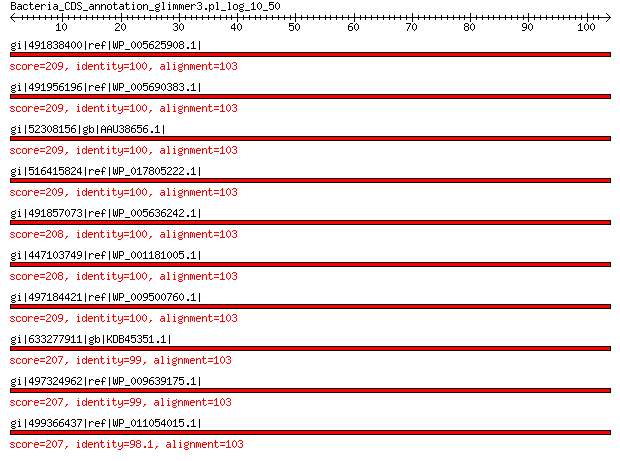

bitscore colors: <40, 40-50 , 50-80, 80-200, >200
 BLASTP 2.2.31+
Reference: Stephen F. Altschul, Thomas L. Madden, Alejandro A.
Schaffer, Jinghui Zhang, Zheng Zhang, Webb Miller, and David J.
Lipman (1997), "Gapped BLAST and PSI-BLAST: a new generation of
protein database search programs", Nucleic Acids Res. 25:3389-3402.
Reference for composition-based statistics: Alejandro A. Schaffer,
L. Aravind, Thomas L. Madden, Sergei Shavirin, John L. Spouge, Yuri
I. Wolf, Eugene V. Koonin, and Stephen F. Altschul (2001),
"Improving the accuracy of PSI-BLAST protein database searches with
composition-based statistics and other refinements", Nucleic Acids
Res. 29:2994-3005.
Database: All non-redundant GenBank CDS translations+PDB+SwissProt+PIR+PRF
excluding environmental samples from WGS projects
49,011,213 sequences; 17,563,301,199 total letters
Query= Bacteria_CDS_annotation_glimmer3.pl_log_10_50
Length=103
Score E
Sequences producing significant alignments: (Bits) Value
gi|491838400|ref|WP_005625908.1| MULTISPECIES: 30S ribosomal pro... 209 3e-67
gi|491956196|ref|WP_005690383.1| MULTISPECIES: 30S ribosomal pro... 209 4e-67
gi|52308156|gb|AAU38656.1| RpsJ protein 209 4e-67
gi|516415824|ref|WP_017805222.1| 30S ribosomal protein S10 209 4e-67
gi|491857073|ref|WP_005636242.1| 30S ribosomal protein S10 208 5e-67
gi|447103749|ref|WP_001181005.1| MULTISPECIES: 30S ribosomal pro... 208 5e-67
gi|497184421|ref|WP_009500760.1| ribosomal protein S10 209 7e-67
gi|633277911|gb|KDB45351.1| 30S ribosomal protein S10 207 8e-67
gi|497324962|ref|WP_009639175.1| MULTISPECIES: 30S ribosomal pro... 207 8e-67
gi|499366437|ref|WP_011054015.1| 30S ribosomal protein S10 207 1e-66
>gi|491838400|ref|WP_005625908.1| MULTISPECIES: 30S ribosomal protein S10 [Haemophilus]
gi|325160708|gb|EGC72829.1| ribosomal protein S10 [Haemophilus parainfluenzae ATCC 33392]
gi|341947463|gb|EGT74112.1| 30S ribosomal protein S10 [Haemophilus haemolyticus M19501]
gi|341948377|gb|EGT75007.1| 30S ribosomal protein S10 [Haemophilus haemolyticus M21127]
gi|341955955|gb|EGT82400.1| 30S ribosomal protein S10 [Haemophilus haemolyticus M21639]
gi|341956077|gb|EGT82517.1| 30S ribosomal protein S10 [Haemophilus haemolyticus M19107]
Length=120
Score = 209 bits (531), Expect = 3e-67, Method: Compositional matrix adjust.
Identities = 103/103 (100%), Positives = 103/103 (100%), Gaps = 0/103 (0%)
Query 1 MQNQRIRIRLKAFDHRLIDQSTAEIVETAKRTGAQVRGPIPLPTRKERFTVLISPHVNKD 60
MQNQRIRIRLKAFDHRLIDQSTAEIVETAKRTGAQVRGPIPLPTRKERFTVLISPHVNKD
Sbjct 18 MQNQRIRIRLKAFDHRLIDQSTAEIVETAKRTGAQVRGPIPLPTRKERFTVLISPHVNKD 77
Query 61 ARDQYEIRTHKRLVDIVEPTEKTVDALMRLDLAAGVDVQISLG 103
ARDQYEIRTHKRLVDIVEPTEKTVDALMRLDLAAGVDVQISLG
Sbjct 78 ARDQYEIRTHKRLVDIVEPTEKTVDALMRLDLAAGVDVQISLG 120
>gi|491956196|ref|WP_005690383.1| MULTISPECIES: 30S ribosomal protein S10 [Haemophilus]
gi|1573786|gb|AAC22435.1| ribosomal protein S10 (rpS10) [Haemophilus influenzae Rd KW20]
gi|260093151|gb|EEW77084.1| ribosomal protein S10 [Haemophilus influenzae RdAW]
gi|260095187|gb|EEW79078.1| ribosomal protein S10 [Haemophilus influenzae NT127]
gi|327472046|gb|EGF17484.1| 30S ribosomal protein S10 [Haemophilus aegyptius ATCC 11116]
Length=118
Score = 209 bits (531), Expect = 4e-67, Method: Compositional matrix adjust.
Identities = 103/103 (100%), Positives = 103/103 (100%), Gaps = 0/103 (0%)
Query 1 MQNQRIRIRLKAFDHRLIDQSTAEIVETAKRTGAQVRGPIPLPTRKERFTVLISPHVNKD 60
MQNQRIRIRLKAFDHRLIDQSTAEIVETAKRTGAQVRGPIPLPTRKERFTVLISPHVNKD
Sbjct 16 MQNQRIRIRLKAFDHRLIDQSTAEIVETAKRTGAQVRGPIPLPTRKERFTVLISPHVNKD 75
Query 61 ARDQYEIRTHKRLVDIVEPTEKTVDALMRLDLAAGVDVQISLG 103
ARDQYEIRTHKRLVDIVEPTEKTVDALMRLDLAAGVDVQISLG
Sbjct 76 ARDQYEIRTHKRLVDIVEPTEKTVDALMRLDLAAGVDVQISLG 118
>gi|52308156|gb|AAU38656.1| RpsJ protein [Mannheimia succiniciproducens MBEL55E]
Length=122
Score = 209 bits (531), Expect = 4e-67, Method: Compositional matrix adjust.
Identities = 103/103 (100%), Positives = 103/103 (100%), Gaps = 0/103 (0%)
Query 1 MQNQRIRIRLKAFDHRLIDQSTAEIVETAKRTGAQVRGPIPLPTRKERFTVLISPHVNKD 60
MQNQRIRIRLKAFDHRLIDQSTAEIVETAKRTGAQVRGPIPLPTRKERFTVLISPHVNKD
Sbjct 20 MQNQRIRIRLKAFDHRLIDQSTAEIVETAKRTGAQVRGPIPLPTRKERFTVLISPHVNKD 79
Query 61 ARDQYEIRTHKRLVDIVEPTEKTVDALMRLDLAAGVDVQISLG 103
ARDQYEIRTHKRLVDIVEPTEKTVDALMRLDLAAGVDVQISLG
Sbjct 80 ARDQYEIRTHKRLVDIVEPTEKTVDALMRLDLAAGVDVQISLG 122
>gi|516415824|ref|WP_017805222.1| 30S ribosomal protein S10 [Avibacterium paragallinarum]
gi|523674505|emb|CDF98389.1| Putative=30S ribosomal protein S10 [Avibacterium paragallinarum
JF4211]
Length=122
Score = 209 bits (531), Expect = 4e-67, Method: Compositional matrix adjust.
Identities = 103/103 (100%), Positives = 103/103 (100%), Gaps = 0/103 (0%)
Query 1 MQNQRIRIRLKAFDHRLIDQSTAEIVETAKRTGAQVRGPIPLPTRKERFTVLISPHVNKD 60
MQNQRIRIRLKAFDHRLIDQSTAEIVETAKRTGAQVRGPIPLPTRKERFTVLISPHVNKD
Sbjct 20 MQNQRIRIRLKAFDHRLIDQSTAEIVETAKRTGAQVRGPIPLPTRKERFTVLISPHVNKD 79
Query 61 ARDQYEIRTHKRLVDIVEPTEKTVDALMRLDLAAGVDVQISLG 103
ARDQYEIRTHKRLVDIVEPTEKTVDALMRLDLAAGVDVQISLG
Sbjct 80 ARDQYEIRTHKRLVDIVEPTEKTVDALMRLDLAAGVDVQISLG 122
>gi|491857073|ref|WP_005636242.1| 30S ribosomal protein S10 [Haemophilus haemolyticus]
gi|341955476|gb|EGT81932.1| 30S ribosomal protein S10 [Haemophilus haemolyticus M21621]
Length=120
Score = 208 bits (530), Expect = 5e-67, Method: Compositional matrix adjust.
Identities = 103/103 (100%), Positives = 103/103 (100%), Gaps = 0/103 (0%)
Query 1 MQNQRIRIRLKAFDHRLIDQSTAEIVETAKRTGAQVRGPIPLPTRKERFTVLISPHVNKD 60
MQNQRIRIRLKAFDHRLIDQSTAEIVETAKRTGAQVRGPIPLPTRKERFTVLISPHVNKD
Sbjct 18 MQNQRIRIRLKAFDHRLIDQSTAEIVETAKRTGAQVRGPIPLPTRKERFTVLISPHVNKD 77
Query 61 ARDQYEIRTHKRLVDIVEPTEKTVDALMRLDLAAGVDVQISLG 103
ARDQYEIRTHKRLVDIVEPTEKTVDALMRLDLAAGVDVQISLG
Sbjct 78 ARDQYEIRTHKRLVDIVEPTEKTVDALMRLDLAAGVDVQISLG 120
>gi|447103749|ref|WP_001181005.1| MULTISPECIES: 30S ribosomal protein S10 [Gammaproteobacteria]
gi|15603281|ref|NP_246355.1| 30S ribosomal protein S10 [Pasteurella multocida subsp. multocida
str. Pm70]
gi|16762842|ref|NP_458459.1| 30S ribosomal subunit protein S10 [Salmonella enterica subsp.
enterica serovar Typhi str. CT18]
gi|16766730|ref|NP_462345.1| 30S ribosomal protein S10 [Salmonella enterica subsp. enterica
serovar Typhimurium str. LT2]
gi|22127859|ref|NP_671282.1| 30S ribosomal protein S10 [Yersinia pestis KIM10+]
gi|29144329|ref|NP_807671.1| 30S ribosomal protein S10 [Salmonella enterica subsp. enterica
serovar Typhi str. Ty2]
gi|37528544|ref|NP_931889.1| 30S ribosomal protein S10 [Photorhabdus luminescens subsp. laumondii
TTO1]
gi|45440066|ref|NP_991605.1| 30S ribosomal protein S10 [Yersinia pestis biovar Microtus str.
91001]
gi|51597989|ref|YP_072180.1| 30S ribosomal protein S10 [Yersinia pseudotuberculosis IP 32953]
gi|56415360|ref|YP_152435.1| 30S ribosomal protein S10 [Salmonella enterica subsp. enterica
serovar Paratyphi A str. ATCC 9150]
gi|62181945|ref|YP_218362.1| 30S ribosomal protein S10 [Salmonella enterica subsp. enterica
serovar Choleraesuis str. SC-B67]
gi|68249372|ref|YP_248484.1| 30S ribosomal protein S10 [Haemophilus influenzae 86-028NP]
gi|108809255|ref|YP_653171.1| 30S ribosomal protein S10 [Yersinia pestis Antiqua]
gi|108814020|ref|YP_649787.1| 30S ribosomal protein S10 [Yersinia pestis Nepal516]
gi|113460207|ref|YP_718264.1| SSU ribosomal protein S10P [Haemophilus somnus 129PT]
gi|123444099|ref|YP_001008069.1| 30S ribosomal protein S10 [Yersinia enterocolitica subsp. enterocolitica
8081]
gi|126209223|ref|YP_001054448.1| 30S ribosomal protein S10 [Actinobacillus pleuropneumoniae serovar
5b str. L20]
gi|145597451|ref|YP_001161526.1| 30S ribosomal protein S10 [Yersinia pestis Pestoides F]
gi|148826578|ref|YP_001291331.1| 50S ribosomal protein L3 [Haemophilus influenzae PittEE]
gi|148827965|ref|YP_001292718.1| acetyl-CoA:acetoacetyl-CoA transferase subunit alpha [Haemophilus
influenzae PittGG]
gi|152972228|ref|YP_001337374.1| 30S ribosomal protein S10 [Klebsiella pneumoniae subsp. pneumoniae
MGH 78578]
gi|152978140|ref|YP_001343769.1| 30S ribosomal protein S10 [Actinobacillus succinogenes 130Z]
gi|153949097|ref|YP_001402864.1| 30S ribosomal protein S10 [Yersinia pseudotuberculosis IP 31758]
gi|156932230|ref|YP_001436146.1| hypothetical protein ESA_00001 [Cronobacter sakazakii ATCC BAA-894]
gi|157148901|ref|YP_001456220.1| hypothetical protein CKO_04739 [Citrobacter koseri ATCC BAA-895]
gi|157372777|ref|YP_001480766.1| 30S ribosomal protein S10 [Serratia proteamaculans 568]
gi|161350025|ref|NP_438935.2| 30S ribosomal protein S10 [Haemophilus influenzae Rd KW20]
gi|161506005|ref|YP_001573117.1| hypothetical protein SARI_04186 [Salmonella enterica subsp. arizonae
serovar 62:z4,z23:- str. RSK2980]
gi|161510955|ref|YP_089241.2| 30S ribosomal protein S10 [Mannheimia succiniciproducens MBEL55E]
gi|161616468|ref|YP_001590433.1| hypothetical protein SPAB_04283 [Salmonella enterica subsp. enterica
serovar Paratyphi B str. SPB7]
gi|162419476|ref|YP_001605174.1| 30S ribosomal protein S10 [Yersinia pestis Angola]
gi|165977195|ref|YP_001652788.1| 30S ribosomal protein S10 [Actinobacillus pleuropneumoniae serovar
3 str. JL03]
gi|170022543|ref|YP_001719048.1| 30S ribosomal protein S10 [Yersinia pseudotuberculosis YPIII]
gi|170718245|ref|YP_001785265.1| 30S ribosomal protein S10 [Haemophilus somnus 2336]
gi|186897185|ref|YP_001874297.1| 30S ribosomal protein S10 [Yersinia pseudotuberculosis PB1/+]
gi|188535280|ref|YP_001909077.1| 30S ribosomal protein S10 [Erwinia tasmaniensis Et1/99]
gi|190151113|ref|YP_001969638.1| 30S ribosomal protein S10 [Actinobacillus pleuropneumoniae serovar
7 str. AP76]
gi|194443646|ref|YP_002042691.1| 30S ribosomal protein S10 [Salmonella enterica subsp. enterica
serovar Newport str. SL254]
gi|194448691|ref|YP_002047464.1| 30S ribosomal protein S10 [Salmonella enterica subsp. enterica
serovar Heidelberg str. SL476]
gi|194737772|ref|YP_002116383.1| 30S ribosomal protein S10 [Salmonella enterica subsp. enterica
serovar Schwarzengrund str. CVM19633]
gi|197249343|ref|YP_002148360.1| 30S ribosomal protein S10 [Salmonella enterica subsp. enterica
serovar Agona str. SL483]
gi|197287067|ref|YP_002152939.1| 30S ribosomal protein S10 [Proteus mirabilis HI4320]
gi|197364290|ref|YP_002143927.1| 30S ribosomal protein S10 [Salmonella enterica subsp. enterica
serovar Paratyphi A str. AKU_12601]
gi|198246251|ref|YP_002217403.1| 30S ribosomal protein S10 [Salmonella enterica subsp. enterica
serovar Dublin str. CT_02021853]
gi|205354931|ref|YP_002228732.1| 30S ribosomal subunit protein S10 [Salmonella enterica subsp.
enterica serovar Gallinarum str. 287/91]
gi|206575812|ref|YP_002236280.1| 30S ribosomal protein S10 [Klebsiella pneumoniae 342]
gi|207858683|ref|YP_002245334.1| 30S ribosomal subunit protein S10 [Salmonella enterica subsp.
enterica serovar Enteritidis str. P125109]
gi|218550596|ref|YP_002384387.1| 30S ribosomal protein S10 [Escherichia fergusonii ATCC 35469]
gi|218927414|ref|YP_002345289.1| 30S ribosomal protein S10 [Yersinia pestis CO92]
gi|219871729|ref|YP_002476104.1| 30S ribosomal protein S10 [Haemophilus parasuis SH0165]
gi|224585236|ref|YP_002639035.1| 30S ribosomal protein S10 [Salmonella enterica subsp. enterica
serovar Paratyphi C str. RKS4594]
gi|238896817|ref|YP_002921562.1| 30S ribosomal protein S10 [Klebsiella pneumoniae subsp. pneumoniae
NTUH-K2044]
gi|238921443|ref|YP_002934958.1| 30S ribosomal protein S10, putative [Edwardsiella ictaluri 93-146]
gi|242237858|ref|YP_002986039.1| 30S ribosomal protein S10 [Dickeya dadantii Ech703]
gi|251787970|ref|YP_003002691.1| 30S ribosomal protein S10 [Dickeya zeae Ech1591]
gi|251793826|ref|YP_003008558.1| 30S ribosomal protein S10 [Aggregatibacter aphrophilus NJ8700]
gi|253690184|ref|YP_003019374.1| 30S ribosomal protein S10 [Pectobacterium carotovorum subsp.
carotovorum PC1]
gi|253991689|ref|YP_003043045.1| 30s ribosomal subunit protein s10 [Photorhabdus asymbiotica]
gi|259910000|ref|YP_002650356.1| 30S ribosomal protein S10 [Erwinia pyrifoliae Ep1/96]
gi|260599640|ref|YP_003212211.1| 30S ribosomal protein S10 [Cronobacter turicensis z3032]
gi|261823233|ref|YP_003261339.1| 30S ribosomal protein S10 [Pectobacterium wasabiae WPP163]
gi|261866796|ref|YP_003254718.1| 30S ribosomal protein S10 [Aggregatibacter actinomycetemcomitans
D11S-1]
gi|269140571|ref|YP_003297272.1| 30S ribosomal protein S10 [Edwardsiella tarda EIB202]
gi|271502247|ref|YP_003335273.1| 30S ribosomal protein S10 [Dickeya dadantii Ech586]
gi|283788043|ref|YP_003367908.1| 30S ribosomal protein S10 [Citrobacter rodentium ICC168]
gi|288933265|ref|YP_003437324.1| 30S ribosomal protein S10 [Klebsiella variicola At-22]
gi|290477193|ref|YP_003470108.1| 30S ribosomal subunit protein S10 [Xenorhabdus bovienii SS-2004]
gi|292489850|ref|YP_003532740.1| 30S ribosomal protein S10 [Erwinia amylovora CFBP1430]
gi|292900892|ref|YP_003540261.1| 30S ribosomal protein S10 [Erwinia amylovora ATCC 49946]
gi|294502288|ref|YP_003566350.1| 30S ribosomal protein S10 [Yersinia pestis Z176003]
gi|296105029|ref|YP_003615175.1| 30S ribosomal protein S10 [Enterobacter cloacae subsp. cloacae
ATCC 13047]
gi|300718706|ref|YP_003743509.1| 30S ribosomal protein S10 [Erwinia billingiae Eb661]
gi|300721364|ref|YP_003710635.1| 30S ribosomal protein S10 [Xenorhabdus nematophila ATCC 19061]
gi|307132840|ref|YP_003884856.1| 30S ribosomal protein S10 [Dickeya dadantii 3937]
gi|308188358|ref|YP_003932489.1| 30S ribosomal protein S10 [Pantoea vagans C9-1]
gi|311277724|ref|YP_003939955.1| 30S ribosomal protein S10 [Enterobacter lignolyticus SCF1]
gi|319775290|ref|YP_004137778.1| 30S ribosomal protein S10 [Haemophilus influenzae F3047]
gi|319897730|ref|YP_004135927.1| 30S ribosomal protein S10 [Haemophilus influenzae F3031]
gi|332163260|ref|YP_004299837.1| 30S ribosomal protein S10 [Yersinia enterocolitica subsp. palearctica
105.5R(r)]
gi|332289229|ref|YP_004420081.1| 30S ribosomal protein S10 [Gallibacterium anatis UMN179]
gi|333929467|ref|YP_004503046.1| 30S ribosomal protein S10 [Serratia sp. AS12]
gi|333934420|ref|YP_004507998.1| 30S ribosomal protein S10 [Serratia plymuthica AS9]
gi|336247488|ref|YP_004591198.1| 30S ribosomal protein S10 [Enterobacter aerogenes KCTC 2190]
gi|340000979|ref|YP_004731863.1| 30S ribosomal subunit protein S10 [Salmonella bongori NCTC 12419]
gi|345301170|ref|YP_004830528.1| 30S ribosomal protein S10 [Enterobacter asburiae LF7a]
gi|345429268|ref|YP_004822386.1| 30S ribosomal protein S10 [Haemophilus parainfluenzae T3T1]
gi|365966615|ref|YP_004948177.1| 30S ribosomal protein S10 [Aggregatibacter actinomycetemcomitans
ANH9381]
gi|365972412|ref|YP_004953973.1| 30S ribosomal protein S10 [Enterobacter cloacae EcWSU1]
gi|375257682|ref|YP_005016852.1| 30S ribosomal protein S10 [Klebsiella oxytoca KCTC 1686]
gi|378446818|ref|YP_005234450.1| 30S ribosomal protein S10 [Salmonella enterica subsp. enterica
serovar Typhimurium str. D23580]
gi|378452271|ref|YP_005239631.1| 30S ribosomal protein S10 [Salmonella enterica subsp. enterica
serovar Typhimurium str. 14028S]
gi|378696975|ref|YP_005178933.1| 30S ribosomal protein S10 [Haemophilus influenzae 10810]
gi|378701335|ref|YP_005183293.1| 30S ribosomal protein S10 [Salmonella enterica subsp. enterica
serovar Typhimurium str. SL1344]
gi|378775265|ref|YP_005177508.1| 30S ribosomal protein S10 [Pasteurella multocida 36950]
gi|378957712|ref|YP_005215199.1| 30S ribosomal protein S10 [Salmonella enterica subsp. enterica
serovar Gallinarum/pullorum str. RKS5078]
gi|378962246|ref|YP_005219732.1| 30S ribosomal protein S10 [Salmonella enterica subsp. enterica
serovar Typhi str. P-stx-12]
gi|378981029|ref|YP_005229170.1| 30S ribosomal protein S10 [Klebsiella pneumoniae subsp. pneumoniae
HS11286]
gi|378986035|ref|YP_005249191.1| 30S ribosomal protein S10 [Salmonella enterica subsp. enterica
serovar Typhimurium str. T000240]
gi|378990746|ref|YP_005253910.1| 30S ribosomal protein S10 [Salmonella enterica subsp. enterica
serovar Typhimurium str. UK-1]
gi|379702700|ref|YP_005244428.1| 30S ribosomal protein S10 [Salmonella enterica subsp. enterica
serovar Typhimurium str. ST4/74]
gi|383311262|ref|YP_005364072.1| 30S ribosomal protein S10 [Pasteurella multocida subsp. multocida
str. HN06]
gi|383498085|ref|YP_005398774.1| 30S ribosomal protein S10 [Salmonella enterica subsp. enterica
serovar Typhimurium str. 798]
gi|384120772|ref|YP_005503392.1| 30S ribosomal protein S10 [Yersinia pestis D106004]
gi|384124656|ref|YP_005507270.1| 30S ribosomal protein S10 [Yersinia pestis D182038]
gi|384137815|ref|YP_005520517.1| 30S ribosomal protein S10 [Yersinia pestis A1122]
gi|384412837|ref|YP_005622199.1| 30S ribosomal protein S10 [Yersinia pestis biovar Medievalis
str. Harbin 35]
gi|385786327|ref|YP_005817436.1| Ribosomal protein S10 [Erwinia sp. Ejp617]
gi|386036854|ref|YP_005956767.1| 30S ribosomal protein S10 [Klebsiella pneumoniae KCTC 2242]
gi|386264785|ref|YP_005828278.1| 30S ribosomal protein S10 [Haemophilus influenzae R2866]
gi|386266497|ref|YP_005829989.1| 30S ribosomal protein S10 [Haemophilus influenzae R2846]
gi|386310730|ref|YP_006006786.1| 30S ribosomal protein S10 [Yersinia enterocolitica subsp. palearctica
Y11]
gi|386331290|ref|YP_006027460.1| 30S ribosomal protein S10 [Serratia sp. AS13]
gi|386593116|ref|YP_006089516.1| 30S ribosomal protein S10 [Salmonella enterica subsp. enterica
serovar Heidelberg str. B182]
gi|386743631|ref|YP_006216810.1| 30S ribosomal protein S10 [Providencia stuartii MRSN 2154]
gi|387121490|ref|YP_006287373.1| 30S ribosomal protein S10 [Aggregatibacter actinomycetemcomitans
D7S-1]
gi|387869047|ref|YP_005700516.1| 30S ribosomal protein S10 [Edwardsiella tarda FL6-60]
gi|387872997|ref|YP_005804384.1| 30S ribosomal protein S10 [Erwinia pyrifoliae DSM 12163]
gi|387887628|ref|YP_006317926.1| 30S ribosomal protein S10 [Shimwellia blattae DSM 4481 = NBRC
105725]
gi|389839331|ref|YP_006341415.1| 30S ribosomal protein S10 [Cronobacter sakazakii ES15]
gi|392980997|ref|YP_006479585.1| 30S ribosomal protein S10 [Enterobacter cloacae subsp. dissolvens
SDM]
gi|397660298|ref|YP_006501000.1| 30S ribosomal protein S10 [Klebsiella oxytoca E718]
gi|401765510|ref|YP_006580517.1| 30S ribosomal protein S10 [Enterobacter cloacae subsp. cloacae
ENHKU01]
gi|402778685|ref|YP_006634231.1| 30S ribosomal protein S10 [Klebsiella pneumoniae subsp. pneumoniae
1084]
gi|403060250|ref|YP_006648467.1| 30S ribosomal protein S10 [Pectobacterium carotovorum subsp.
carotovorum PCC21]
gi|407693301|ref|YP_006818090.1| 30S ribosomal protein S10 [Actinobacillus suis H91-0380]
gi|409247152|ref|YP_006887852.1| 30S ribosomal protein S10 [Salmonella enterica subsp. enterica
serovar Weltevreden str. 2007-60-3289-1]
gi|440232840|ref|YP_007346633.1| SSU ribosomal protein S10P [Serratia marcescens FGI94]
gi|440285868|ref|YP_007338633.1| SSU ribosomal protein S10P [Enterobacteriaceae bacterium strain
FGI 57]
gi|444354399|ref|YP_007390543.1| SSU ribosomal protein S10p (S20e) [Enterobacter aerogenes EA1509E]
gi|448244257|ref|YP_007408310.1| 30S ribosomal subunit protein S10 [Serratia marcescens WW4]
gi|449306536|ref|YP_007438892.1| 30S ribosomal protein S10 [Cronobacter sakazakii SP291]
gi|452122746|ref|YP_007472994.1| 30S ribosomal protein S10 [Salmonella enterica subsp. enterica
serovar Javiana str. CFSAN001992]
gi|455737464|ref|YP_007503730.1| 30S ribosomal protein S10 [Morganella morganii subsp. morganii
KT]
gi|470156587|ref|YP_006285089.1| 30S ribosomal protein S10 [Pectobacterium sp. SCC3193]
gi|470168081|ref|YP_007549168.1| 30S ribosomal protein S10 [Bibersteinia trehalosi USDA-ARS-USMARC-192]
gi|470464252|ref|YP_007630563.1| 30S ribosomal subunit protein S10 [Edwardsiella piscicida C07-087]
gi|472332663|ref|YP_007664938.1| 30S ribosomal protein S10 [Mannheimia haemolytica USDA-ARS-USMARC-183]
gi|472337695|ref|YP_007669969.1| 30S ribosomal protein S10 [Mannheimia haemolytica USDA-ARS-USMARC-185]
gi|479272860|ref|YP_007846139.1| ribosomal protein S10, bacterial/organelle [Enterobacter cloacae
subsp. cloacae NCTC 9394]
gi|481851959|ref|YP_007876399.1| 30S ribosomal protein S10 [Raoultella ornithinolytica B6]
gi|482885111|ref|YP_007882284.1| 30S ribosomal protein S10 [Mannheimia haemolytica M42548]
gi|482906008|ref|YP_007904568.1| SSU ribosomal protein S10P [Salmonella enterica subsp. enterica
serovar Typhimurium str. U288]
gi|488656504|ref|YP_007928307.1| 30S ribosomal protein S10 [Salmonella enterica subsp. enterica
serovar Typhi str. Ty21a]
gi|512650365|ref|YP_008108417.1| 30S ribosomal protein S10 [Enterobacter sp. R4-368]
gi|514060759|ref|YP_008124840.1| 30S ribosomal protein S10 [Haemophilus parasuis ZJ0906]
gi|518650963|ref|YP_008140503.1| 30S ribosomal protein S10 [Serratia plymuthica 4Rx13]
gi|521170122|ref|YP_008161494.1| 30S ribosomal protein S10 [Serratia plymuthica S13]
gi|525656883|ref|YP_008220306.1| 30S ribosomal protein S10 [Mannheimia haemolytica D171]
gi|525663853|ref|YP_008222838.1| 30S ribosomal protein S10 [Mannheimia haemolytica D174]
gi|525694457|ref|YP_008232487.1| 30S ribosomal protein S10 [Serratia liquefaciens ATCC 27592]
gi|525702791|ref|YP_008234536.1| 30S ribosomal protein S10 [Mannheimia haemolytica D153]
gi|525814711|ref|YP_008244729.1| 30S ribosomal protein S10 [Salmonella enterica subsp. enterica
serovar Heidelberg str. 41578]
gi|525828804|ref|YP_008251771.1| 30S ribosomal protein S10 [Salmonella enterica subsp. enterica
serovar Heidelberg str. CFSAN002069]
gi|525840418|ref|YP_008257943.1| 30S ribosomal protein S10 [Salmonella enterica subsp. enterica
serovar Typhimurium var. 5- str. CFSAN001921]
gi|525859142|ref|YP_008262688.1| 30S ribosomal protein S10 [Salmonella enterica subsp. enterica
serovar Cubana str. CFSAN002050]
gi|525945882|ref|YP_008306898.1| 30S ribosomal protein S10 [Salmonella enterica subsp. enterica
serovar Bareilly str. CFSAN000189]
gi|526218611|ref|YP_008263811.1| 30S ribosomal protein S10 [Salmonella enterica subsp. enterica
serovar 4 [Salmonella enterica subsp. enterica serovar 4,[5],12:i:-
str. 08-1736]
gi|526229467|ref|YP_008324110.1| SSU ribosomal protein S10p (S20e) [Salmonella bongori N268-08]
gi|526469839|ref|YP_008340089.1| 30S ribosomal protein S10 [Mannheimia haemolytica USMARC_2286]
gi|528817164|ref|YP_008358367.1| 30S ribosomal protein S10 [Salmonella enterica subsp. enterica
serovar Newport str. USMARC-S3124.1]
gi|529221679|ref|YP_008383267.1| 30S ribosomal protein S10 [Salmonella enterica subsp. enterica
serovar Pullorum str. S06004]
gi|529238917|ref|YP_008399776.1| 30S ribosomal protein S10 [Proteus mirabilis BB2000]
gi|529986346|ref|YP_007989732.1| rpsJ [Klebsiella pneumoniae]
gi|530628255|ref|YP_008423523.1| 30S ribosomal protein S10 [Klebsiella pneumoniae JM45]
gi|537439279|ref|YP_008483656.1| 30S ribosomal subunit protein S10 [Salmonella enterica subsp.
enterica serovar Gallinarum/pullorum str. CDC1983-67]
gi|543951513|ref|YP_008543587.1| ribosomal protein S10 [Haemophilus influenzae KR494]
gi|549480779|ref|YP_008615079.1| 30S ribosomal protein S10 [Salmonella enterica subsp. enterica
serovar Thompson str. RM6836]
gi|549725996|ref|YP_008646186.1| 30S ribosomal protein S10 [Salmonella enterica subsp. enterica
serovar Typhimurium str. DT2]
gi|550446486|ref|YP_008662274.1| 30S ribosomal protein S10 [Klebsiella pneumoniae CG43]
gi|550902787|ref|YP_008671879.1| 30S ribosomal protein S10 [Salmonella enterica subsp. enterica
serovar Typhimurium str. DT104]
gi|563654782|ref|YP_008862868.1| 30S ribosomal protein S10 [Salmonella enterica subsp. enterica
serovar Agona str. 24249]
gi|565643811|ref|YP_008895107.1| ribosomal protein S10 [Cronobacter sakazakii CMCC 45402]
gi|350424445|ref|XP_003493798.1| PREDICTED: 30S ribosomal protein S10-like [Bombus impatiens]
gi|54039358|sp|P67901.1|RS10_HAEIN RecName: Full=30S ribosomal protein S10 [Haemophilus influenzae
Rd KW20]
gi|54039359|sp|P67902.1|RS10_PASMU RecName: Full=30S ribosomal protein S10 [Pasteurella multocida
subsp. multocida str. Pm70]
gi|54039360|sp|P67903.1|RS10_PHOLL RecName: Full=30S ribosomal protein S10 [Photorhabdus luminescens
subsp. laumondii TTO1]
gi|54039361|sp|P67904.1|RS10_SALTY RecName: Full=30S ribosomal protein S10 [Salmonella enterica
subsp. enterica serovar Typhimurium str. LT2]
gi|54039362|sp|P67905.1|RS10_SALTI RecName: Full=30S ribosomal protein S10 [Salmonella enterica
subsp. enterica serovar Typhi]
gi|54039363|sp|P67906.1|RS10_YERPE RecName: Full=30S ribosomal protein S10 [Yersinia pestis]
gi|75480347|sp|Q57J31.1|RS10_SALCH RecName: Full=30S ribosomal protein S10 [Salmonella enterica
subsp. enterica serovar Choleraesuis str. SC-B67]
gi|81336201|sp|Q4QMC3.1|RS10_HAEI8 RecName: Full=30S ribosomal protein S10 [Haemophilus influenzae
86-028NP]
gi|81599605|sp|Q5PIV1.1|RS10_SALPA RecName: Full=30S ribosomal protein S10 [Salmonella enterica
subsp. enterica serovar Paratyphi A str. ATCC 9150]
gi|81638246|sp|Q664S0.1|RS10_YERPS RecName: Full=30S ribosomal protein S10 [Yersinia pseudotuberculosis
IP 32953]
gi|115305626|sp|Q65QV4.2|RS10_MANSM RecName: Full=30S ribosomal protein S10 [Mannheimia succiniciproducens
MBEL55E]
gi|118597341|sp|Q1C2U6.1|RS10_YERPA RecName: Full=30S ribosomal protein S10 [Yersinia pestis Antiqua]
gi|118597342|sp|Q1CCU3.1|RS10_YERPN RecName: Full=30S ribosomal protein S10 [Yersinia pestis Nepal516]
gi|123131903|sp|Q0I164.1|RS10_HISS1 RecName: Full=30S ribosomal protein S10 [Haemophilus somnus 129PT]
gi|166231234|sp|A3N357.1|RS10_ACTP2 RecName: Full=30S ribosomal protein S10 [Actinobacillus pleuropneumoniae
serovar 5b str. L20]
gi|166231259|sp|A8AQM1.1|RS10_CITK8 RecName: Full=30S ribosomal protein S10 [Citrobacter koseri ATCC
BAA-895]
gi|166231269|sp|A7MPI6.1|RS10_CROS8 RecName: Full=30S ribosomal protein S10 [Cronobacter sakazakii
ATCC BAA-894]
gi|166231276|sp|A5UDU7.1|RS10_HAEIE RecName: Full=30S ribosomal protein S10 [Haemophilus influenzae
PittEE]
gi|166231277|sp|A5UHS9.1|RS10_HAEIG RecName: Full=30S ribosomal protein S10 [Haemophilus influenzae
PittGG]
gi|166231279|sp|A6TEX3.1|RS10_KLEP7 RecName: Full=30S ribosomal protein S10 [Klebsiella pneumoniae
subsp. pneumoniae MGH 78578]
gi|166231797|sp|A1JS48.1|RS10_YERE8 RecName: Full=30S ribosomal protein S10 [Yersinia enterocolitica
subsp. enterocolitica 8081]
gi|166231798|sp|A4TGZ1.1|RS10_YERPP RecName: Full=30S ribosomal protein S10 [Yersinia pestis Pestoides
F]
gi|166991571|sp|A8GKJ8.1|RS10_SERP5 RecName: Full=30S ribosomal protein S10 [Serratia proteamaculans
568]
gi|166991574|sp|A7FNN6.1|RS10_YERP3 RecName: Full=30S ribosomal protein S10 [Yersinia pseudotuberculosis
IP 31758]
gi|171472957|sp|A6VLI7.1|RS10_ACTSZ RecName: Full=30S ribosomal protein S10 [Actinobacillus succinogenes
130Z]
gi|189040375|sp|B0UX12.1|RS10_HISS2 RecName: Full=30S ribosomal protein S10 [Haemophilus somnus 2336]
gi|189040388|sp|A9MN45.1|RS10_SALAR RecName: Full=30S ribosomal protein S10 [Salmonella enterica
subsp. arizonae serovar 62:z4,z23:-]
gi|189040389|sp|A9MT00.1|RS10_SALPB RecName: Full=30S ribosomal protein S10 [Salmonella enterica
subsp. enterica serovar Paratyphi B str. SPB7]
gi|226705390|sp|B3GZ10.1|RS10_ACTP7 RecName: Full=30S ribosomal protein S10 [Actinobacillus pleuropneumoniae
serovar 7 str. AP76]
gi|226705391|sp|B0BST0.1|RS10_ACTPJ RecName: Full=30S ribosomal protein S10 [Actinobacillus pleuropneumoniae
serovar 3 str. JL03]
gi|226705444|sp|B2VK34.1|RS10_ERWT9 RecName: Full=30S ribosomal protein S10 [Erwinia tasmaniensis]
gi|226705445|sp|B7LS41.1|RS10_ESCF3 RecName: Full=30S ribosomal protein S10 [Escherichia fergusonii
ATCC 35469]
gi|226705580|sp|B5XN93.1|RS10_KLEP3 RecName: Full=30S ribosomal protein S10 [Klebsiella pneumoniae
342]
gi|226705609|sp|B4F1I3.1|RS10_PROMH RecName: Full=30S ribosomal protein S10 [Proteus mirabilis HI4320]
gi|226705617|sp|B5F8F3.1|RS10_SALA4 RecName: Full=30S ribosomal protein S10 [Salmonella enterica
subsp. enterica serovar Agona str. SL483]
gi|226705618|sp|B5FJL5.1|RS10_SALDC RecName: Full=30S ribosomal protein S10 [Salmonella enterica
subsp. enterica serovar Dublin str. CT_02021853]
gi|226705619|sp|B5R292.1|RS10_SALEP RecName: Full=30S ribosomal protein S10 [Salmonella enterica
subsp. enterica serovar Enteritidis str. P125109]
gi|226705620|sp|B5RH14.1|RS10_SALG2 RecName: Full=30S ribosomal protein S10 [Salmonella enterica
subsp. enterica serovar Gallinarum str. 287/91]
gi|226705621|sp|B4TKL6.1|RS10_SALHS RecName: Full=30S ribosomal protein S10 [Salmonella enterica
subsp. enterica serovar Heidelberg str. SL476]
gi|226705622|sp|B4SUU1.1|RS10_SALNS RecName: Full=30S ribosomal protein S10 [Salmonella enterica
subsp. enterica serovar Newport str. SL254]
gi|226705623|sp|B5BGY7.1|RS10_SALPK RecName: Full=30S ribosomal protein S10 [Salmonella enterica
subsp. enterica serovar Paratyphi A str. AKU_12601]
gi|226705624|sp|B4TXE3.1|RS10_SALSV RecName: Full=30S ribosomal protein S10 [Salmonella enterica
subsp. enterica serovar Schwarzengrund str. CVM19633]
gi|226708313|sp|B2K5N1.1|RS10_YERPB RecName: Full=30S ribosomal protein S10 [Yersinia pseudotuberculosis
PB1/+]
gi|226708314|sp|A9R8Z5.1|RS10_YERPG RecName: Full=30S ribosomal protein S10 [Yersinia pestis Angola]
gi|226708315|sp|B1JIW0.1|RS10_YERPY RecName: Full=30S ribosomal protein S10 [Yersinia pseudotuberculosis
YPIII]
gi|254809581|sp|B8F754.1|RS10_HAEPS RecName: Full=30S ribosomal protein S10 [Haemophilus parasuis
SH0165]
gi|254809983|sp|C0Q0B7.1|RS10_SALPC RecName: Full=30S ribosomal protein S10 [Salmonella enterica
subsp. enterica serovar Paratyphi C str. RKS4594]
gi|259494590|sp|C5BGM6.1|RS10_EDWI9 RecName: Full=30S ribosomal protein S10 [Edwardsiella ictaluri
93-146]
gi|259494599|sp|C6DG75.1|RS10_PECCP RecName: Full=30S ribosomal protein S10 [Pectobacterium carotovorum
subsp. carotovorum PC1]
gi|25294648|pir||AH1005 30S ribosomal chain protein S10 [imported] - Salmonella enterica
subsp. enterica serovar Typhi (strain CT18)
gi|21960994|gb|AAM87533.1|AE014002_6 30S ribosomal subunit protein S10 [Yersinia pestis KIM10+]
gi|12721791|gb|AAK03500.1| RpS10 [Pasteurella multocida subsp. multocida str. Pm70]
gi|16421998|gb|AAL22304.1| 30S ribosomal subunit protein S10 [Salmonella enterica subsp.
enterica serovar Typhimurium str. LT2]
gi|16505148|emb|CAD08172.1| 30S ribosomal subunit protein S10 [Salmonella enterica subsp.
enterica serovar Typhi str. CT18]
gi|29139967|gb|AAO71531.1| 30S ribosomal subunit protein S10 [Salmonella enterica subsp.
enterica serovar Typhi str. Ty2]
gi|36787982|emb|CAE17099.1| 30S ribosomal protein S10 [Photorhabdus luminescens subsp. laumondii
TTO1]
gi|45434921|gb|AAS60482.1| 30S ribosomal protein S10 [Yersinia pestis biovar Microtus str.
91001]
gi|51591271|emb|CAH22937.1| 30S ribosomal protein S10 [Yersinia pseudotuberculosis IP 32953]
gi|56129617|gb|AAV79123.1| 30S ribosomal subunit protein S10 [Salmonella enterica subsp.
enterica serovar Paratyphi A str. ATCC 9150]
gi|62129578|gb|AAX67281.1| 30S ribosomal protein S10 [Salmonella enterica subsp. enterica
serovar Choleraesuis str. SC-B67]
gi|68057571|gb|AAX87824.1| 30S ribosomal protein S10 [Haemophilus influenzae 86-028NP]
gi|108777668|gb|ABG20187.1| SSU ribosomal protein S10P [Yersinia pestis Nepal516]
gi|108781168|gb|ABG15226.1| SSU ribosomal protein S10P [Yersinia pestis Antiqua]
gi|112822250|gb|ABI24339.1| SSU ribosomal protein S10P [Haemophilus somnus 129PT]
gi|115346025|emb|CAL18891.1| 30S ribosomal protein S10 [Yersinia pestis CO92]
gi|122091060|emb|CAL13943.1| 30S ribosomal protein S10 [Yersinia enterocolitica subsp. enterocolitica
8081]
gi|126098015|gb|ABN74843.1| 30S ribosomal protein S10 [Actinobacillus pleuropneumoniae serovar
5b str. L20]
gi|144980110|gb|EDJ89769.1| 30S ribosomal protein S10 [Haemophilus influenzae 22.1-21]
gi|144983911|gb|EDJ91353.1| 30S ribosomal protein S10 [Haemophilus influenzae R3021]
gi|144987036|gb|EDJ93566.1| 30S ribosomal protein S10 [Haemophilus influenzae 3655]
gi|145209147|gb|ABP38554.1| SSU ribosomal protein S10P [Yersinia pestis Pestoides F]
gi|145267979|gb|EDK07975.1| 30S ribosomal protein S10 [Haemophilus influenzae PittAA]
gi|145270194|gb|EDK10130.1| 30S ribosomal protein S10 [Haemophilus influenzae PittHH]
gi|145272753|gb|EDK12660.1| 30S ribosomal protein S10 [Haemophilus influenzae PittII]
gi|145274383|gb|EDK14247.1| acetyl-CoA:acetoacetyl-CoA transferase subunit alpha [Haemophilus
influenzae 22.4-21]
gi|148716738|gb|ABQ98948.1| 50S ribosomal protein L3 [Haemophilus influenzae PittEE]
gi|148719207|gb|ABR00335.1| acetyl-CoA:acetoacetyl-CoA transferase subunit alpha [Haemophilus
influenzae PittGG]
gi|149290152|gb|EDM40229.1| 30S ribosomal protein S10 [Yersinia pestis CA88-4125]
gi|150839863|gb|ABR73834.1| ribosomal protein S10 [Actinobacillus succinogenes 130Z]
gi|150957077|gb|ABR79107.1| 30S ribosomal protein S10 [Klebsiella pneumoniae subsp. pneumoniae
MGH 78578]
gi|152960592|gb|ABS48053.1| ribosomal protein S10 [Yersinia pseudotuberculosis IP 31758]
gi|153093631|gb|EDN74596.1| ribosomal protein S10 [Mannheimia haemolytica PHL213]
gi|156530484|gb|ABU75310.1| hypothetical protein ESA_00001 [Cronobacter sakazakii ATCC BAA-894]
gi|157086106|gb|ABV15784.1| hypothetical protein CKO_04739 [Citrobacter koseri ATCC BAA-895]
gi|157324541|gb|ABV43638.1| ribosomal protein S10 [Serratia proteamaculans 568]
gi|160867352|gb|ABX23975.1| hypothetical protein SARI_04186 [Salmonella enterica subsp. arizonae
serovar 62:z4,z23:-]
gi|161365832|gb|ABX69600.1| hypothetical protein SPAB_04283 [Salmonella enterica subsp. enterica
serovar Paratyphi B str. SPB7]
gi|162352291|gb|ABX86239.1| ribosomal protein S10 [Yersinia pestis Angola]
gi|165877296|gb|ABY70344.1| ribosomal protein S10 [Actinobacillus pleuropneumoniae serovar
3 str. JL03]
gi|165912042|gb|EDR30683.1| ribosomal protein S10 [Yersinia pestis biovar Orientalis str.
IP275]
gi|165920157|gb|EDR37458.1| ribosomal protein S10 [Yersinia pestis biovar Orientalis str.
F1991016]
gi|165990668|gb|EDR42969.1| ribosomal protein S10 [Yersinia pestis biovar Antiqua str. E1979001]
gi|166205562|gb|EDR50042.1| ribosomal protein S10 [Yersinia pestis biovar Antiqua str. B42003004]
gi|166962837|gb|EDR58858.1| ribosomal protein S10 [Yersinia pestis biovar Orientalis str.
MG05-1020]
gi|167051708|gb|EDR63116.1| ribosomal protein S10 [Yersinia pestis biovar Antiqua str. UG05-0454]
gi|167055314|gb|EDR65108.1| ribosomal protein S10 [Yersinia pestis biovar Mediaevalis str.
K1973002]
gi|168826374|gb|ACA31745.1| ribosomal protein S10 [Haemophilus somnus 2336]
gi|169749077|gb|ACA66595.1| ribosomal protein S10 [Yersinia pseudotuberculosis YPIII]
gi|186700211|gb|ACC90840.1| ribosomal protein S10 [Yersinia pseudotuberculosis PB1/+]
gi|188019732|gb|EDU57772.1| ribosomal protein S10 [Providencia stuartii ATCC 25827]
gi|188030322|emb|CAO98211.1| 30S ribosomal protein S10 [Erwinia tasmaniensis Et1/99]
gi|189916244|gb|ACE62496.1| 30S ribosomal protein S10 [Actinobacillus pleuropneumoniae serovar
7 str. AP76]
gi|194402309|gb|ACF62531.1| ribosomal protein S10 [Salmonella enterica subsp. enterica serovar
Newport str. SL254]
gi|194406995|gb|ACF67214.1| ribosomal protein S10 [Salmonella enterica subsp. enterica serovar
Heidelberg str. SL476]
gi|194454849|gb|EDX43688.1| ribosomal protein S10 [Salmonella enterica subsp. enterica serovar
Kentucky str. CVM29188]
gi|194684554|emb|CAR46378.1| 30S ribosomal protein S10 [Proteus mirabilis HI4320]
gi|194713274|gb|ACF92495.1| ribosomal protein S10 [Salmonella enterica subsp. enterica serovar
Schwarzengrund str. CVM19633]
gi|195628912|gb|EDX48322.1| ribosomal protein S10 [Salmonella enterica subsp. enterica serovar
Newport str. SL317]
gi|197095767|emb|CAR61337.1| 30S ribosomal subunit protein S10 [Salmonella enterica subsp.
enterica serovar Paratyphi A str. AKU_12601]
gi|197213046|gb|ACH50443.1| ribosomal protein S10 [Salmonella enterica subsp. enterica serovar
Agona str. SL483]
gi|197242155|gb|EDY24775.1| ribosomal protein S10 [Salmonella enterica subsp. enterica serovar
Saintpaul str. SARA23]
gi|197287550|gb|EDY26943.1| ribosomal protein S10 [Salmonella enterica subsp. enterica serovar
Schwarzengrund str. SL480]
gi|197940767|gb|ACH78100.1| ribosomal protein S10 [Salmonella enterica subsp. enterica serovar
Dublin str. CT_02021853]
gi|199604104|gb|EDZ02649.1| ribosomal protein S10 [Salmonella enterica subsp. enterica serovar
Virchow str. SL491]
gi|205274712|emb|CAR39768.1| 30S ribosomal subunit protein S10 [Salmonella enterica subsp.
enterica serovar Gallinarum str. 287/91]
gi|205321445|gb|EDZ09284.1| ribosomal protein S10 [Salmonella enterica subsp. enterica serovar
Saintpaul str. SARA29]
gi|205335971|gb|EDZ22735.1| ribosomal protein S10 [Salmonella enterica subsp. enterica serovar
Heidelberg str. SL486]
gi|205350423|gb|EDZ37054.1| ribosomal protein S10 [Salmonella enterica subsp. enterica serovar
Hadar str. RI_05P066]
gi|206564870|gb|ACI06646.1| ribosomal protein S10 [Klebsiella pneumoniae 342]
gi|206710486|emb|CAR34844.1| 30S ribosomal subunit protein S10 [Salmonella enterica subsp.
enterica serovar Enteritidis str. P125109]
gi|212688346|gb|EEB47874.1| ribosomal protein S10 [Providencia alcalifaciens DSM 30120]
gi|218358137|emb|CAQ90784.1| 30S ribosomal subunit protein S10 [Escherichia fergusonii ATCC
35469]
gi|219691933|gb|ACL33156.1| 30S ribosomal protein S10 [Haemophilus parasuis SH0165]
gi|223017385|gb|EEF15806.1| 30S ribosomal protein S10 [Actinobacillus minor 202]
gi|224469764|gb|ACN47594.1| 30S ribosomal protein S10 [Salmonella enterica subsp. enterica
serovar Paratyphi C str. RKS4594]
gi|224965622|emb|CAX57154.1| 30S ribosomal protein S10 [Erwinia pyrifoliae Ep1/96]
gi|225202664|gb|EEG85018.1| ribosomal protein S10 [Proteus penneri ATCC 35198]
gi|226909278|gb|EEH95196.1| 30S ribosomal protein S10 [Citrobacter sp. 30_2]
gi|227165017|gb|EEI49856.1| ribosomal protein S10 [Proteus mirabilis ATCC 29906]
gi|229678670|gb|EEO74775.1| 30S ribosomal subunit protein S10 [Yersinia pestis Nepal516]
gi|229690458|gb|EEO82512.1| 30S ribosomal subunit protein S10 [Yersinia pestis biovar Orientalis
str. India 195]
gi|229696432|gb|EEO86479.1| 30S ribosomal subunit protein S10 [Yersinia pestis biovar Orientalis
str. PEXU2]
gi|229706378|gb|EEO92385.1| 30S ribosomal subunit protein S10 [Yersinia pestis Pestoides
A]
gi|229810830|gb|EEP46547.1| 30S ribosomal protein S10 [Haemophilus influenzae 7P49H1]
gi|229812357|gb|EEP48047.1| 30S ribosomal protein S10 [Haemophilus influenzae 6P18H1]
gi|238549144|dbj|BAH65495.1| 30S ribosomal protein S10 [Klebsiella pneumoniae subsp. pneumoniae
NTUH-K2044]
gi|238698033|gb|EEP90791.1| 30S ribosomal protein S10 [Yersinia kristensenii ATCC 33638]
gi|238703060|gb|EEP95603.1| 30S ribosomal protein S10 [Yersinia aldovae ATCC 35236]
gi|238709115|gb|EEQ01362.1| 30S ribosomal protein S10 [Yersinia rohdei ATCC 43380]
gi|238715964|gb|EEQ07950.1| 30S ribosomal protein S10 [Yersinia bercovieri ATCC 43970]
gi|238718876|gb|EEQ10691.1| 30S ribosomal protein S10 [Yersinia mollaretii ATCC 43969]
gi|238722938|gb|EEQ14588.1| 30S ribosomal protein S10 [Yersinia frederiksenii ATCC 33641]
gi|238727791|gb|EEQ19315.1| 30S ribosomal protein S10 [Yersinia intermedia ATCC 29909]
gi|238871012|gb|ACR70723.1| 30S ribosomal protein S10, putative [Edwardsiella ictaluri 93-146]
gi|240297847|gb|EER48283.1| 30S ribosomal protein S10 [Actinobacillus minor NM305]
gi|242129915|gb|ACS84217.1| ribosomal protein S10 [Dickeya dadantii Ech703]
gi|247535225|gb|ACS98471.1| ribosomal protein S10 [Aggregatibacter aphrophilus NJ8700]
gi|247536591|gb|ACT05212.1| ribosomal protein S10 [Dickeya zeae Ech1591]
gi|251756762|gb|ACT14838.1| ribosomal protein S10 [Pectobacterium carotovorum subsp. carotovorum
PC1]
gi|253783139|emb|CAQ86304.1| 30s ribosomal subunit protein s10 [Photorhabdus asymbiotica]
gi|259037498|gb|EEW38742.1| ribosomal protein S10 [Klebsiella pneumoniae subsp. rhinoscleromatis
ATCC 13884]
gi|260218817|emb|CBA34172.1| 30S ribosomal protein S10 [Cronobacter turicensis z3032]
gi|260631280|gb|EEX49465.1| ribosomal protein S10 [Pasteurella dagmatis ATCC 43325]
gi|261248597|emb|CBG26435.1| 30S ribosomal subunit protein S10 [Salmonella enterica subsp.
enterica serovar Typhimurium str. D23580]
gi|261309146|gb|EEY10386.1| RpsJ protein [Mannheimia haemolytica serotype A2 str. OVINE]
gi|261311354|gb|EEY12515.1| RpsJ protein [Mannheimia haemolytica serotype A2 str. BOVINE]
gi|261412128|gb|ACX81499.1| hypothetical protein D11S_0075 [Aggregatibacter actinomycetemcomitans
D11S-1]
gi|261607246|gb|ACX89732.1| ribosomal protein S10 [Pectobacterium wasabiae WPP163]
gi|262360368|gb|ACY57089.1| 30S ribosomal protein S10 [Yersinia pestis D106004]
gi|262364320|gb|ACY60877.1| 30S ribosomal protein S10 [Yersinia pestis D182038]
gi|267986232|gb|ACY86061.1| 30S ribosomal protein S10 [Edwardsiella tarda EIB202]
gi|267995650|gb|ACY90535.1| 30S ribosomal protein S10 [Salmonella enterica subsp. enterica
serovar Typhimurium str. 14028S]
gi|270336736|gb|EFA47513.1| ribosomal protein S10 [Yersinia pestis KIM D27]
gi|270345802|gb|ACZ78567.1| ribosomal protein S10 [Dickeya dadantii Ech586]
gi|282565001|gb|EFB70536.1| ribosomal protein S10 [Providencia rustigianii DSM 4541]
gi|282951497|emb|CBG91196.1| 30S ribosomal subunit protein S10 [Citrobacter rodentium ICC168]
gi|283480097|emb|CAY76013.1| 30S ribosomal protein S10 [Erwinia pyrifoliae DSM 12163]
gi|284006164|emb|CBA71406.1| 30S ribosomal protein S10 [Arsenophonus nasoniae]
gi|288314969|gb|EFC53907.1| ribosomal protein S10 [Enterobacter cancerogenus ATCC 35316]
gi|288887994|gb|ADC56312.1| ribosomal protein S10 [Klebsiella variicola At-22]
gi|289176541|emb|CBJ83350.1| 30S ribosomal subunit protein S10 [Xenorhabdus bovienii SS-2004]
gi|289775858|gb|EFD83858.1| ribosomal protein S10 [Klebsiella sp. 1_1_55]
gi|291068417|gb|EFE06526.1| ribosomal protein S10 [Citrobacter youngae ATCC 29220]
gi|291088845|gb|EFE21406.1| ribosomal protein S10 [Edwardsiella tarda ATCC 23685]
gi|291200740|emb|CBJ47873.1| 30S ribosomal protein S10 [Erwinia amylovora ATCC 49946]
gi|291310818|gb|EFE51271.1| ribosomal protein S10 [Providencia rettgeri DSM 1131]
gi|291424222|gb|EFE97437.1| ribosomal protein S10 [Serratia odorifera DSM 4582]
gi|291555287|emb|CBA23591.1| 30S ribosomal protein S10 [Erwinia amylovora CFBP1430]
gi|294352747|gb|ADE63088.1| 30S ribosomal protein S10 [Yersinia pestis Z176003]
gi|295059488|gb|ADF64226.1| small subunit ribosomal protein S10 [Enterobacter cloacae subsp.
cloacae ATCC 13047]
gi|295096962|emb|CBK86052.1| ribosomal protein S10, bacterial/organelle [Enterobacter cloacae
subsp. cloacae NCTC 9394]
gi|297627852|emb|CBJ88398.1| 30S ribosomal subunit protein S10 [Xenorhabdus nematophila ATCC
19061]
gi|299064542|emb|CAX61662.1| 30S ribosomal protein S10 [Erwinia billingiae Eb661]
gi|301155329|emb|CBW14795.1| 30S ribosomal subunit protein S10 [Haemophilus parainfluenzae
T3T1]
gi|301159984|emb|CBW19503.1| 30S ribosomal subunit protein S10 [Salmonella enterica subsp.
enterica serovar Typhimurium str. SL1344]
gi|301169493|emb|CBW29094.1| 30S ribosomal subunit protein S10 [Haemophilus influenzae 10810]
gi|302647867|gb|EFL78074.1| ribosomal protein S10 [Actinobacillus pleuropneumoniae serovar
2 str. 4226]
gi|302651074|gb|EFL81228.1| ribosomal protein S10 [Actinobacillus pleuropneumoniae serovar
6 str. Femo]
gi|304353218|gb|EFM17599.1| ribosomal protein S10 [Pantoea sp. aB]
gi|304560360|gb|ADM43024.1| SSU ribosomal protein S10p (S20e) [Edwardsiella tarda FL6-60]
gi|306530369|gb|ADN00300.1| 30S ribosomal subunit protein S10 [Dickeya dadantii 3937]
gi|306852388|gb|EFM84623.1| 30S ribosomal protein S10 [Actinobacillus pleuropneumoniae serovar
1 str. 4074]
gi|306854757|gb|EFM86947.1| 30S ribosomal protein S10 [Actinobacillus pleuropneumoniae serovar
2 str. S1536]
gi|306856887|gb|EFM89019.1| 30S ribosomal protein S10 [Actinobacillus pleuropneumoniae serovar
4 str. M62]
gi|306859122|gb|EFM91164.1| 30S ribosomal protein S10 [Actinobacillus pleuropneumoniae serovar
6 str. Femo]
gi|306861350|gb|EFM93340.1| 30S ribosomal protein S10 [Actinobacillus pleuropneumoniae serovar
9 str. CVJ13261]
gi|306863762|gb|EFM95688.1| 30S ribosomal protein S10 [Actinobacillus pleuropneumoniae serovar
10 str. D13039]
gi|306865771|gb|EFM97649.1| 30S ribosomal protein S10 [Actinobacillus pleuropneumoniae serovar
11 str. 56153]
gi|306868017|gb|EFM99844.1| 30S ribosomal protein S10 [Actinobacillus pleuropneumoniae serovar
12 str. 1096]
gi|306870160|gb|EFN01919.1| 30S ribosomal protein S10 [Actinobacillus pleuropneumoniae serovar
13 str. N273]
gi|308058868|gb|ADO11040.1| 30S ribosomal protein S10 [Pantoea vagans C9-1]
gi|308746919|gb|ADO46671.1| ribosomal protein S10 [Enterobacter lignolyticus SCF1]
gi|309751563|gb|ADO81547.1| 30S ribosomal protein S10 [Haemophilus influenzae R2866]
gi|309973733|gb|ADO96934.1| 30S ribosomal protein S10 [Haemophilus influenzae R2846]
gi|310765599|gb|ADP10549.1| Ribosomal protein S10 [Erwinia sp. Ejp617]
gi|312174032|emb|CBX82285.1| 30S ribosomal protein S10 [Erwinia amylovora ATCC BAA-2158]
gi|312914464|dbj|BAJ38438.1| 30S ribosomal protein S10 [Salmonella enterica subsp. enterica
serovar Typhimurium str. T000240]
gi|315477496|gb|EFU68238.1| 30S ribosomal protein S10 [Aggregatibacter segnis ATCC 33393]
gi|316917593|gb|EFV38938.1| 30S ribosomal protein S10 [Enterobacteriaceae bacterium 9_2_54FAA]
gi|317433236|emb|CBY81611.1| 30S ribosomal subunit protein S10 [Haemophilus influenzae F3031]
gi|317449881|emb|CBY86092.1| 30S ribosomal subunit protein S10 [Haemophilus influenzae F3047]
gi|318607745|emb|CBY29243.1| SSU ribosomal protein S10p (S20e) [Yersinia enterocolitica subsp.
palearctica Y11]
gi|320013341|gb|ADV96912.1| 30S ribosomal subunit protein S10 [Yersinia pestis biovar Medievalis
str. Harbin 35]
gi|320087886|emb|CBY97649.1| 30S ribosomal protein S10 [Salmonella enterica subsp. enterica
serovar Weltevreden str. 2007-60-3289-1]
gi|321226488|gb|EFX51538.1| SSU ribosomal protein S10p S20e [Salmonella enterica subsp. enterica
serovar Typhimurium str. TN061786]
gi|322118287|gb|EFX90570.1| ribosomal protein S10 [Actinobacillus ureae ATCC 25976]
gi|322615018|gb|EFY11942.1| 30S ribosomal protein S10 [Salmonella enterica subsp. enterica
serovar Montevideo str. 315996572]
gi|322617305|gb|EFY14206.1| 30S ribosomal protein S10 [Salmonella enterica subsp. enterica
serovar Montevideo str. 495297-1]
gi|322625527|gb|EFY22352.1| 30S ribosomal protein S10 [Salmonella enterica subsp. enterica
serovar Montevideo str. 495297-3]
gi|322626369|gb|EFY23178.1| 30S ribosomal protein S10 [Salmonella enterica subsp. enterica
serovar Montevideo str. 495297-4]
gi|322632119|gb|EFY28872.1| 30S ribosomal protein S10 [Salmonella enterica subsp. enterica
serovar Montevideo str. 515920-1]
gi|322635002|gb|EFY31725.1| 30S ribosomal protein S10 [Salmonella enterica subsp. enterica
serovar Montevideo str. 515920-2]
gi|322643297|gb|EFY39864.1| 30S ribosomal protein S10 [Salmonella enterica subsp. enterica
serovar Montevideo str. 531954]
gi|322646619|gb|EFY43126.1| 30S ribosomal protein S10 [Salmonella enterica subsp. enterica
serovar Montevideo str. NC_MB110209-0054]
gi|322649965|gb|EFY46384.1| 30S ribosomal protein S10 [Salmonella enterica subsp. enterica
serovar Montevideo str. OH_2009072675]
gi|322652682|gb|EFY49022.1| 30S ribosomal protein S10 [Salmonella enterica subsp. enterica
serovar Montevideo str. CASC_09SCPH15965]
gi|322659561|gb|EFY55805.1| 30S ribosomal protein S10 [Salmonella enterica subsp. enterica
serovar Montevideo str. 19N]
gi|322665497|gb|EFY61684.1| 30S ribosomal protein S10 [Salmonella enterica subsp. enterica
serovar Montevideo str. 81038-01]
gi|322670391|gb|EFY66530.1| 30S ribosomal protein S10 [Salmonella enterica subsp. enterica
serovar Montevideo str. MD_MDA09249507]
gi|322670464|gb|EFY66598.1| 30S ribosomal protein S10 [Salmonella enterica subsp. enterica
serovar Montevideo str. 414877]
gi|322675040|gb|EFY71123.1| 30S ribosomal protein S10 [Salmonella enterica subsp. enterica
serovar Montevideo str. 366867]
gi|322681577|gb|EFY77606.1| 30S ribosomal protein S10 [Salmonella enterica subsp. enterica
serovar Montevideo str. 413180]
gi|322685921|gb|EFY81910.1| 30S ribosomal protein S10 [Salmonella enterica subsp. enterica
serovar Montevideo str. 446600]
gi|322716432|gb|EFZ08003.1| 30S ribosomal protein S10 [Salmonella enterica subsp. enterica
serovar Choleraesuis str. SCSA50]
gi|323131799|gb|ADX19229.1| 30S ribosomal protein S10 [Salmonella enterica subsp. enterica
serovar Typhimurium str. ST4/74]
gi|323194029|gb|EFZ79229.1| 30S ribosomal protein S10 [Salmonella enterica subsp. enterica
serovar Montevideo str. 609458-1]
gi|323196453|gb|EFZ81604.1| 30S ribosomal protein S10 [Salmonella enterica subsp. enterica
serovar Montevideo str. 556150-1]
gi|323202308|gb|EFZ87353.1| 30S ribosomal protein S10 [Salmonella enterica subsp. enterica
serovar Montevideo str. 609460]
gi|323211221|gb|EFZ96066.1| 30S ribosomal protein S10 [Salmonella enterica subsp. enterica
serovar Montevideo str. 556152]
gi|323216070|gb|EGA00801.1| 30S ribosomal protein S10 [Salmonella enterica subsp. enterica
serovar Montevideo str. MB101509-0077]
gi|323223439|gb|EGA07767.1| 30S ribosomal protein S10 [Salmonella enterica subsp. enterica
serovar Montevideo str. MB102109-0047]
gi|323226831|gb|EGA11021.1| 30S ribosomal protein S10 [Salmonella enterica subsp. enterica
serovar Montevideo str. MB110209-0055]
gi|323231807|gb|EGA15917.1| 30S ribosomal protein S10 [Salmonella enterica subsp. enterica
serovar Montevideo str. MB111609-0052]
gi|323233240|gb|EGA17335.1| 30S ribosomal protein S10 [Salmonella enterica subsp. enterica
serovar Montevideo str. 2009083312]
gi|323237307|gb|EGA21372.1| 30S ribosomal protein S10 [Salmonella enterica subsp. enterica
serovar Montevideo str. 2009085258]
gi|323245542|gb|EGA29541.1| 30S ribosomal protein S10 [Salmonella enterica subsp. enterica
serovar Montevideo str. 315731156]
gi|323249048|gb|EGA32970.1| 30S ribosomal protein S10 [Salmonella enterica subsp. enterica
serovar Montevideo str. IA_2009159199]
gi|323250671|gb|EGA34552.1| 30S ribosomal protein S10 [Salmonella enterica subsp. enterica
serovar Montevideo str. IA_2010008282]
gi|323256900|gb|EGA40614.1| 30S ribosomal protein S10 [Salmonella enterica subsp. enterica
serovar Montevideo str. IA_2010008283]
gi|323263049|gb|EGA46596.1| 30S ribosomal protein S10 [Salmonella enterica subsp. enterica
serovar Montevideo str. IA_2010008284]
gi|323266049|gb|EGA49544.1| 30S ribosomal protein S10 [Salmonella enterica subsp. enterica
serovar Montevideo str. IA_2010008285]
gi|323272806|gb|EGA56209.1| 30S ribosomal protein S10 [Salmonella enterica subsp. enterica
serovar Montevideo str. IA_2010008287]
gi|324112000|gb|EGC05979.1| ribosomal protein S10 [Escherichia fergusonii B253]
gi|325498886|gb|EGC96745.1| Ribosomal protein S10 [Escherichia fergusonii ECD227]
gi|325667490|gb|ADZ44134.1| 30S ribosomal protein S10 [Yersinia enterocolitica subsp. palearctica
105.5R(r)]
gi|326625184|gb|EGE31529.1| 30S ribosomal protein S10 [Salmonella enterica subsp. enterica
serovar Dublin str. SD3246]
gi|326630080|gb|EGE36423.1| Ribosomal protein S10 [Salmonella enterica subsp. enterica serovar
Gallinarum str. SG9]
gi|328537368|gb|EGF63618.1| ribosomal protein S10 [Klebsiella sp. MS 92-3]
gi|330432125|gb|AEC17184.1| 30S ribosomal protein S10 [Gallibacterium anatis UMN179]
gi|330861856|emb|CBX72027.1| 30S ribosomal protein S10 [Yersinia enterocolitica W22703]
gi|332990293|gb|AEF09276.1| 30S ribosomal protein S10 [Salmonella enterica subsp. enterica
serovar Typhimurium str. UK-1]
gi|333386324|gb|EGK57541.1| 30S ribosomal protein S10 [Enterobacter hormaechei ATCC 49162]
gi|333476027|gb|AEF47737.1| 30S ribosomal protein S10 [Serratia plymuthica AS9]
gi|333493527|gb|AEF52689.1| 30S ribosomal protein S10 [Serratia sp. AS12]
gi|333952925|gb|EGL70928.1| 30S ribosomal protein S10 [Cronobacter sakazakii E899]
gi|333963623|gb|AEG30396.1| 30S ribosomal protein S10 [Serratia sp. AS13]
gi|334733544|gb|AEG95919.1| 30S ribosomal protein S10 [Enterobacter aerogenes KCTC 2190]
gi|338218389|gb|EGP04162.1| 30S ribosomal protein S10 [Pasteurella multocida subsp. multocida
str. Anand1_goat]
gi|338219511|gb|EGP05160.1| 30S ribosomal protein S10 [Pasteurella multocida subsp. gallicida
str. Anand1_poultry]
gi|339514341|emb|CCC32104.1| 30S ribosomal subunit protein S10 [Salmonella bongori NCTC 12419]
gi|339763982|gb|AEK00203.1| 30S ribosomal protein S10 [Klebsiella pneumoniae KCTC 2242]
gi|342852944|gb|AEL71497.1| 30S ribosomal protein S10 [Yersinia pestis A1122]
gi|343392224|gb|EGV04795.1| ribosomal protein S10 [Haemophilus pittmaniae HK 85]
gi|345095107|gb|AEN66743.1| 30S ribosomal protein S10 [Enterobacter asburiae LF7a]
gi|347813930|gb|EGY30582.1| RpsJ protein [Aggregatibacter aphrophilus ATCC 33389]
gi|347991998|gb|EGY33436.1| RpsJ protein [Aggregatibacter actinomycetemcomitans serotype
d str. I63B]
gi|347993260|gb|EGY34634.1| RpsJ protein [Aggregatibacter actinomycetemcomitans serotype
e str. SC1083]
gi|347996576|gb|EGY37641.1| RpsJ protein [Aggregatibacter actinomycetemcomitans serotype
a str. H5P1]
gi|347997216|gb|EGY38239.1| RpsJ protein [Aggregatibacter actinomycetemcomitans serotype
e str. SCC393]
gi|348001208|gb|EGY41962.1| RpsJ protein [Aggregatibacter actinomycetemcomitans serotype
f str. D18P1]
gi|348003794|gb|EGY44348.1| RpsJ protein [Aggregatibacter actinomycetemcomitans serotype
b str. SCC1398]
gi|348005878|gb|EGY46347.1| RpsJ protein [Aggregatibacter actinomycetemcomitans serotype
c str. SCC2302]
gi|348010708|gb|EGY50732.1| RpsJ protein [Aggregatibacter actinomycetemcomitans serotype
b str. I23C]
gi|348655736|gb|EGY71175.1| RpsJ protein [Aggregatibacter actinomycetemcomitans D17P-3]
gi|348658237|gb|EGY75811.1| RpsJ protein [Aggregatibacter actinomycetemcomitans serotype
c str. D17P-2]
gi|351779475|gb|EHB21584.1| 30S ribosomal protein S10 [Yersinia enterocolitica subsp. palearctica
PhRBD_Ye1]
gi|353074214|gb|EHB39975.1| ribosomal protein S10 [Salmonella enterica subsp. enterica serovar
Infantis str. SARB27]
gi|353345768|gb|EHB90059.1| 30S ribosomal protein S10 [Aggregatibacter aphrophilus F0387]
gi|353565513|gb|EHC31263.1| SSU ribosomal protein S10p [Salmonella enterica subsp. enterica
serovar Adelaide str. A4-669]
gi|353565897|gb|EHC31536.1| SSU ribosomal protein S10p [Salmonella enterica subsp. enterica
serovar Gaminara str. A4-567]
gi|353566560|gb|EHC32003.1| SSU ribosomal protein S10p [Salmonella enterica subsp. enterica
serovar Alachua str. R6-377]
gi|353584968|gb|EHC44936.1| SSU ribosomal protein S10p [Salmonella enterica subsp. enterica
serovar Give str. S5-487]
gi|353586175|gb|EHC45824.1| SSU ribosomal protein S10p [Salmonella enterica subsp. enterica
serovar Hvittingfoss str. A4-620]
gi|353593708|gb|EHC51400.1| SSU ribosomal protein S10p [Salmonella enterica subsp. enterica
serovar Inverness str. R8-3668]
gi|353603926|gb|EHC58862.1| SSU ribosomal protein S10p [Salmonella enterica subsp. enterica
serovar Johannesburg str. S5-703]
gi|353615077|gb|EHC66709.1| SSU ribosomal protein S10p [Salmonella enterica subsp. enterica
serovar Mississippi str. A4-633]
gi|353619918|gb|EHC70175.1| SSU ribosomal protein S10p [Salmonella enterica subsp. enterica
serovar Minnesota str. A4-603]
gi|353625828|gb|EHC74516.1| SSU ribosomal protein S10p [Salmonella enterica subsp. enterica
serovar Montevideo str. S5-403]
gi|353633903|gb|EHC80598.1| SSU ribosomal protein S10p [Salmonella enterica subsp. enterica
serovar Rubislaw str. A4-653]
gi|353635198|gb|EHC81578.1| SSU ribosomal protein S10p [Salmonella enterica subsp. enterica
serovar Senftenberg str. A4-543]
gi|353642477|gb|EHC86917.1| SSU ribosomal protein S10p (S20e) [Salmonella enterica subsp.
enterica serovar Uganda str. R8-3404]
gi|353658910|gb|EHC98961.1| SSU ribosomal protein S10p [Salmonella enterica subsp. enterica
serovar Urbana str. R8-2977]
gi|353659373|gb|EHC99287.1| SSU ribosomal protein S10p [Salmonella enterica subsp. enterica
serovar Wandsworth str. A4-580]
gi|353673851|gb|EHD19884.1| 30S ribosomal protein S10 [Brenneria sp. EniD312]
gi|356597813|gb|AET16539.1| 30S ribosomal protein S10 [Pasteurella multocida 36950]
gi|357208323|gb|AET56369.1| 30S ribosomal subunit protein S10 [Salmonella enterica subsp.
enterica serovar Gallinarum/pullorum str. RKS5078]
gi|357954461|gb|EHJ80635.1| SSU ribosomal protein S10p [Salmonella enterica subsp. enterica
serovar Baildon str. R6-199]
gi|359755859|gb|EHK90021.1| 30S ribosomal protein S10 [Aggregatibacter actinomycetemcomitans
RhAA1]
gi|363549410|gb|EHL33764.1| 30S ribosomal protein S10 [Salmonella enterica subsp. enterica
serovar Montevideo str. SARB31]
gi|363559158|gb|EHL43333.1| 30S ribosomal protein S10 [Salmonella enterica subsp. enterica
serovar Montevideo str. LQC 10]
gi|363559864|gb|EHL44013.1| 30S ribosomal protein S10 [Salmonella enterica subsp. enterica
serovar Montevideo str. SARB30]
gi|363562454|gb|EHL46552.1| 30S ribosomal protein S10 [Salmonella enterica subsp. enterica
serovar Montevideo str. ATCC BAA710]
gi|363564715|gb|EHL48757.1| 30S ribosomal protein S10 [Salmonella enterica subsp. enterica
serovar Montevideo str. 29N]
gi|363575844|gb|EHL59690.1| 30S ribosomal protein S10 [Salmonella enterica subsp. enterica
serovar Montevideo str. 42N]
gi|363579148|gb|EHL62942.1| 30S ribosomal protein S10 [Salmonella enterica subsp. enterica
serovar Montevideo str. 4441 H]
gi|363645787|gb|EHL85042.1| 30S ribosomal protein S10 [Citrobacter freundii 4_7_47CFAA]
gi|363653482|gb|EHL92448.1| 30S ribosomal protein S10 [Klebsiella sp. 4_1_44FAA]
gi|364520440|gb|AEW63568.1| ribosomal protein S10 [Klebsiella pneumoniae subsp. pneumoniae
HS11286]
gi|364568818|gb|EHM46456.1| ribosomal protein S10 [Hafnia alvei ATCC 51873]
gi|364573500|gb|EHM50996.1| ribosomal protein S10 [Yokenella regensburgei ATCC 43003]
gi|365745528|gb|AEW76433.1| 30S ribosomal protein S10 [Aggregatibacter actinomycetemcomitans
ANH9381]
gi|365751325|gb|AEW75552.1| 30S ribosomal protein S10 [Enterobacter cloacae EcWSU1]
gi|365907160|gb|AEX02613.1| 30S ribosomal protein S10 [Klebsiella oxytoca KCTC 1686]
gi|366059755|gb|EHN24023.1| 30S ribosomal protein S10 [Salmonella enterica subsp. enterica
serovar Montevideo str. CT_02035318]
gi|366064200|gb|EHN28401.1| 30S ribosomal protein S10 [Salmonella enterica subsp. enterica
serovar Montevideo str. 80959-06]
gi|366068305|gb|EHN32449.1| 30S ribosomal protein S10 [Salmonella enterica subsp. enterica
serovar Montevideo str. CT_02035278]
gi|366072596|gb|EHN36685.1| 30S ribosomal protein S10 [Salmonella enterica subsp. enterica
serovar Montevideo str. CT_02035321]
gi|366073034|gb|EHN37112.1| 30S ribosomal protein S10 [Salmonella enterica subsp. enterica
serovar Montevideo str. CT_02035320]
gi|366077182|gb|EHN41202.1| 30S ribosomal protein S10 [Salmonella enterica subsp. enterica
serovar Pomona str. ATCC 10729]
gi|366077189|gb|EHN41208.1| 30S ribosomal protein S10 [Salmonella enterica subsp. enterica
serovar Montevideo str. CT_02035327]
gi|372206643|gb|EHP20146.1| 30S ribosomal protein S10 [Salmonella enterica subsp. enterica
serovar Montevideo str. IA_2010008286]
gi|374356118|gb|AEZ47879.1| 30S ribosomal protein S10 [Salmonella enterica subsp. enterica
serovar Typhi str. P-stx-12]
gi|376377640|gb|EHS90408.1| 30S ribosomal protein S10 [Klebsiella oxytoca 10-5245]
gi|376378738|gb|EHS91496.1| 30S ribosomal protein S10 [Klebsiella oxytoca 10-5243]
gi|376381942|gb|EHS94678.1| 30S ribosomal protein S10 [Klebsiella oxytoca 10-5242]
gi|376392244|gb|EHT04909.1| 30S ribosomal protein S10 [Klebsiella oxytoca 10-5246]
gi|376397662|gb|EHT10292.1| 30S ribosomal protein S10 [Klebsiella oxytoca 10-5250]
gi|377538803|dbj|GAB54059.1| 30S ribosomal protein S10 [Escherichia hermannii NBRC 105704]
gi|379049884|gb|EHY67777.1| ribosomal protein S10 [Salmonella enterica subsp. houtenae str.
ATCC BAA-1581]
gi|379987445|emb|CCF86458.1| 30S ribosomal protein S10 [Salmonella enterica subsp. enterica
serovar Senftenberg str. SS209]
gi|380464906|gb|AFD60309.1| 30S ribosomal subunit protein S10 [Salmonella enterica subsp.
enterica serovar Typhimurium str. 798]
gi|380736247|gb|EIB97310.1| 30S ribosomal protein S10 [Pantoea sp. Sc1]
gi|380872534|gb|AFF24901.1| 30S ribosomal protein S10 [Pasteurella multocida subsp. multocida
str. HN06]
gi|381293075|gb|EIC34247.1| 30S ribosomal protein S10 [Salmonella enterica subsp. enterica
serovar Heidelberg str. 41579]
gi|381295671|gb|EIC36780.1| 30S ribosomal protein S10 [Salmonella enterica subsp. enterica
serovar Heidelberg str. 41563]
gi|381298385|gb|EIC39464.1| 30S ribosomal protein S10 [Salmonella enterica subsp. enterica
serovar Heidelberg str. 41573]
gi|381307359|gb|EIC48217.1| 30S ribosomal protein S10 [Salmonella enterica subsp. enterica
serovar Heidelberg str. 41565]
gi|381311785|gb|EIC52595.1| 30S ribosomal protein S10 [Salmonella enterica subsp. enterica
serovar Heidelberg str. 41566]
gi|383800157|gb|AFH47239.1| SSU ribosomal protein S10p (S20e) [Salmonella enterica subsp.
enterica serovar Heidelberg str. B182]
gi|384480324|gb|AFH94119.1| 30S ribosomal protein S10 [Providencia stuartii MRSN 2154]
gi|385189067|gb|EIF36536.1| ribosomal protein S10 [Haemophilus parainfluenzae HK262]
gi|385694341|gb|EIG24949.1| ribosomal protein S10 [Haemophilus paraphrohaemolyticus HK411]
gi|385873697|gb|AFI92217.1| 30S ribosomal protein S10 [Pectobacterium sp. SCC3193]
gi|385875982|gb|AFI87541.1| 30S ribosomal protein S10 [Aggregatibacter actinomycetemcomitans
D7S-1]
gi|386415421|gb|EIJ29953.1| ribosomal protein S10 [Haemophilus parainfluenzae HK2019]
gi|386905974|gb|EIJ70724.1| ribosomal protein S10 [Pasteurella bettyae CCUG 2042]
gi|386906047|gb|EIJ70796.1| ribosomal protein S10 [Haemophilus parahaemolyticus HK385]
gi|386909929|gb|EIJ74591.1| ribosomal protein S10 [Haemophilus haemolyticus HK386]
gi|386922461|gb|AFJ45415.1| 30S ribosomal subunit protein S10 [Shimwellia blattae DSM 4481
= NBRC 105725]
gi|387849807|gb|AFJ97904.1| 30S ribosomal protein S10 [Cronobacter sakazakii ES15]
gi|388604776|gb|EIM34004.1| 30S ribosomal protein S10 [Enterobacter cloacae subsp. cloacae
GS1]
gi|391433209|gb|EIQ94566.1| ribosomal protein S10 [Yersinia pestis PY-01]
gi|391434025|gb|EIQ95269.1| ribosomal protein S10 [Yersinia pestis PY-02]
gi|391436822|gb|EIQ97742.1| ribosomal protein S10 [Yersinia pestis PY-03]
gi|391449093|gb|EIR08842.1| ribosomal protein S10 [Yersinia pestis PY-04]
gi|391449673|gb|EIR09371.1| ribosomal protein S10 [Yersinia pestis PY-05]
gi|391451937|gb|EIR11393.1| ribosomal protein S10 [Yersinia pestis PY-06]
gi|391465101|gb|EIR23324.1| ribosomal protein S10 [Yersinia pestis PY-07]
gi|391466610|gb|EIR24666.1| ribosomal protein S10 [Yersinia pestis PY-08]
gi|391468757|gb|EIR26599.1| ribosomal protein S10 [Yersinia pestis PY-09]
gi|391482524|gb|EIR38966.1| ribosomal protein S10 [Yersinia pestis PY-10]
gi|391483054|gb|EIR39449.1| ribosomal protein S10 [Yersinia pestis PY-12]
gi|391483441|gb|EIR39800.1| ribosomal protein S10 [Yersinia pestis PY-11]
gi|391497365|gb|EIR52232.1| ribosomal protein S10 [Yersinia pestis PY-13]
gi|391498315|gb|EIR53096.1| ribosomal protein S10 [Yersinia pestis PY-15]
gi|391501841|gb|EIR56201.1| ribosomal protein S10 [Yersinia pestis PY-14]
gi|391512922|gb|EIR66194.1| ribosomal protein S10 [Yersinia pestis PY-16]
gi|391514564|gb|EIR67656.1| ribosomal protein S10 [Yersinia pestis PY-19]
gi|391516201|gb|EIR69117.1| ribosomal protein S10 [Yersinia pestis PY-25]
gi|391528623|gb|EIR80424.1| ribosomal protein S10 [Yersinia pestis PY-29]
gi|391531467|gb|EIR82959.1| ribosomal protein S10 [Yersinia pestis PY-34]
gi|391532678|gb|EIR84035.1| ribosomal protein S10 [Yersinia pestis PY-32]
gi|391545617|gb|EIR95683.1| ribosomal protein S10 [Yersinia pestis PY-36]
gi|391547329|gb|EIR97233.1| ribosomal protein S10 [Yersinia pestis PY-42]
gi|391548075|gb|EIR97911.1| ribosomal protein S10 [Yersinia pestis PY-45]
gi|391561673|gb|EIS10179.1| ribosomal protein S10 [Yersinia pestis PY-46]
gi|391562794|gb|EIS11172.1| ribosomal protein S10 [Yersinia pestis PY-47]
gi|391564940|gb|EIS13097.1| ribosomal protein S10 [Yersinia pestis PY-48]
gi|391577089|gb|EIS23558.1| ribosomal protein S10 [Yersinia pestis PY-52]
gi|391577935|gb|EIS24276.1| ribosomal protein S10 [Yersinia pestis PY-53]
gi|391589075|gb|EIS34016.1| ribosomal protein S10 [Yersinia pestis PY-55]
gi|391592665|gb|EIS37054.1| ribosomal protein S10 [Yersinia pestis PY-54]
gi|391593203|gb|EIS37532.1| ribosomal protein S10 [Yersinia pestis PY-56]
gi|391606049|gb|EIS48831.1| ribosomal protein S10 [Yersinia pestis PY-60]
gi|391607975|gb|EIS50513.1| ribosomal protein S10 [Yersinia pestis PY-58]
gi|391608669|gb|EIS51134.1| ribosomal protein S10 [Yersinia pestis PY-59]
gi|391620627|gb|EIS61760.1| ribosomal protein S10 [Yersinia pestis PY-61]
gi|391621538|gb|EIS62566.1| ribosomal protein S10 [Yersinia pestis PY-63]
gi|391629970|gb|EIS69807.1| ribosomal protein S10 [Yersinia pestis PY-64]
gi|391632074|gb|EIS71639.1| ribosomal protein S10 [Yersinia pestis PY-65]
gi|391643389|gb|EIS81566.1| ribosomal protein S10 [Yersinia pestis PY-71]
gi|391646112|gb|EIS83903.1| ribosomal protein S10 [Yersinia pestis PY-72]
gi|391649572|gb|EIS86944.1| ribosomal protein S10 [Yersinia pestis PY-66]
gi|391655909|gb|EIS92592.1| ribosomal protein S10 [Yersinia pestis PY-76]
gi|391662892|gb|EIS98787.1| ribosomal protein S10 [Yersinia pestis PY-88]
gi|391667969|gb|EIT03245.1| ribosomal protein S10 [Yersinia pestis PY-89]
gi|391669425|gb|EIT04555.1| ribosomal protein S10 [Yersinia pestis PY-90]
gi|391673054|gb|EIT07809.1| ribosomal protein S10 [Yersinia pestis PY-91]
gi|391687090|gb|EIT20436.1| ribosomal protein S10 [Yersinia pestis PY-93]
gi|391688678|gb|EIT21873.1| ribosomal protein S10 [Yersinia pestis PY-92]
gi|391689994|gb|EIT23070.1| ribosomal protein S10 [Yersinia pestis PY-94]
gi|391701240|gb|EIT33264.1| ribosomal protein S10 [Yersinia pestis PY-95]
gi|391704411|gb|EIT36070.1| ribosomal protein S10 [Yersinia pestis PY-96]
gi|391705014|gb|EIT36614.1| ribosomal protein S10 [Yersinia pestis PY-98]
gi|391715905|gb|EIT46404.1| ribosomal protein S10 [Yersinia pestis PY-99]
gi|391720666|gb|EIT50666.1| ribosomal protein S10 [Yersinia pestis PY-100]
gi|391721223|gb|EIT51177.1| ribosomal protein S10 [Yersinia pestis PY-101]
gi|391731671|gb|EIT60340.1| ribosomal protein S10 [Yersinia pestis PY-102]
gi|391734403|gb|EIT62664.1| ribosomal protein S10 [Yersinia pestis PY-103]
gi|391737502|gb|EIT65379.1| ribosomal protein S10 [Yersinia pestis PY-113]
gi|392326930|gb|AFM61883.1| 30S ribosomal protein S10 [Enterobacter cloacae subsp. dissolvens
SDM]
gi|392613627|gb|EIW96082.1| 30S ribosomal protein S10 [Salmonella enterica subsp. enterica
serovar Newport str. Levine 15]
gi|392618677|gb|EIX01072.1| 30S ribosomal protein S10 [Salmonella enterica subsp. enterica
serovar Newport str. Levine 1]
gi|392732734|gb|EIZ89941.1| 30S ribosomal protein S10 [Salmonella enterica subsp. enterica
serovar Newport str. CVM 35199]
gi|392741517|gb|EIZ98617.1| 30S ribosomal protein S10 [Salmonella enterica subsp. enterica
serovar Newport str. CVM 21539]
gi|392743769|gb|EJA00835.1| 30S ribosomal protein S10 [Salmonella enterica subsp. enterica
serovar Newport str. CVM 35185]
gi|392744735|gb|EJA01779.1| 30S ribosomal protein S10 [Salmonella enterica subsp. enterica
serovar Newport str. CVM 35188]
gi|392751612|gb|EJA08560.1| 30S ribosomal protein S10 [Salmonella enterica subsp. enterica
serovar Newport str. CVM 33953]
gi|392754539|gb|EJA11455.1| 30S ribosomal protein S10 [Salmonella enterica subsp. enterica
serovar Newport str. CVM 21559]
gi|392759573|gb|EJA16424.1| 30S ribosomal protein S10 [Salmonella enterica subsp. enterica
serovar Newport str. CVM 19447]
gi|392761178|gb|EJA18007.1| 30S ribosomal protein S10 [Salmonella enterica subsp. enterica
serovar Newport str. CVM 19567]
gi|392767374|gb|EJA24143.1| 30S ribosomal protein S10 [Salmonella enterica subsp. enterica
serovar Newport str. CVM 19449]
gi|392778620|gb|EJA35292.1| 30S ribosomal protein S10 [Salmonella enterica subsp. enterica
serovar Newport str. CVM 35202]
gi|392780492|gb|EJA37144.1| 30S ribosomal protein S10 [Salmonella enterica subsp. enterica
serovar Newport str. CVM 22513]
gi|392781802|gb|EJA38440.1| 30S ribosomal protein S10 [Salmonella enterica subsp. enterica
serovar Newport str. CVM 21550]
gi|392784667|gb|EJA41255.1| 30S ribosomal protein S10 [Salmonella enterica subsp. enterica
serovar Newport str. CVM 22425]
gi|392785428|gb|EJA42004.1| 30S ribosomal protein S10 [Salmonella enterica subsp. enterica
serovar Newport str. CVM 21538]
gi|392797477|gb|EJA53784.1| 30S ribosomal protein S10 [Salmonella enterica subsp. enterica
serovar Newport str. CVM N1543]
gi|392801196|gb|EJA57425.1| 30S ribosomal protein S10 [Salmonella enterica subsp. enterica
serovar Newport str. CVM 22462]
gi|392804853|gb|EJA60992.1| 30S ribosomal protein S10 [Salmonella enterica subsp. enterica
serovar Newport str. CVM N18486]
gi|392808036|gb|EJA64091.1| 30S ribosomal protein S10 [Salmonella enterica subsp. enterica
serovar Newport str. CVM 21554]
gi|392809866|gb|EJA65895.1| 30S ribosomal protein S10 [Salmonella enterica subsp. enterica
serovar Newport str. CVM 19443]
gi|392817390|gb|EJA73304.1| 30S ribosomal protein S10 [Salmonella enterica subsp. enterica
serovar Newport str. CVM 37978]
gi|392823777|gb|EJA79571.1| 30S ribosomal protein S10 [Salmonella enterica subsp. enterica
serovar Newport str. CVM 19593]
gi|392825267|gb|EJA81019.1| 30S ribosomal protein S10 [Salmonella enterica subsp. enterica
serovar Newport str. CVM 19470]
gi|392827262|gb|EJA82972.1| 30S ribosomal protein S10 [Salmonella enterica subsp. enterica
serovar Newport str. CVM 19536]
gi|392830172|gb|EJA85828.1| 30S ribosomal protein S10 [Salmonella enterica subsp. enterica
serovar Newport str. CVM 4176]
gi|394348344|gb|AFN34465.1| SSU ribosomal protein S10p (S20e) [Klebsiella oxytoca E718]
gi|394714343|gb|EJF20322.1| 30S ribosomal protein S10 [Citrobacter sp. A1]
gi|394731545|gb|EJF31304.1| 30S ribosomal protein S10 [Enterobacter sp. Ag1]
gi|395980574|gb|EJH89798.1| 30S ribosomal protein S10 [Salmonella enterica subsp. enterica
serovar Enteritidis str. 639016-6]
gi|395993204|gb|EJI02304.1| 30S ribosomal protein S10 [Salmonella enterica subsp. enterica
serovar Enteritidis str. 622731-39]
gi|395993230|gb|EJI02326.1| 30S ribosomal protein S10 [Salmonella enterica subsp. enterica
serovar Enteritidis str. 640631]
gi|395994079|gb|EJI03161.1| 30S ribosomal protein S10 [Salmonella enterica subsp. enterica
serovar Enteritidis str. 77-0424]
gi|395995929|gb|EJI04986.1| 30S ribosomal protein S10 [Salmonella enterica subsp. enterica
serovar Enteritidis str. 485549-17]
gi|396007695|gb|EJI16639.1| 30S ribosomal protein S10 [Salmonella enterica subsp. enterica
serovar Enteritidis str. 607307-6]
gi|396009602|gb|EJI18527.1| 30S ribosomal protein S10 [Salmonella enterica subsp. enterica
serovar Enteritidis str. 596866-22]
gi|396020027|gb|EJI28876.1| 30S ribosomal protein S10 [Salmonella enterica subsp. enterica
serovar Enteritidis str. 596866-70]
gi|396020115|gb|EJI28963.1| 30S ribosomal protein S10 [Salmonella enterica subsp. enterica
serovar Enteritidis str. 629164-26]
gi|396024137|gb|EJI32925.1| 30S ribosomal protein S10 [Salmonella enterica subsp. enterica
serovar Enteritidis str. 629164-37]
gi|396028895|gb|EJI37647.1| 30S ribosomal protein S10 [Salmonella enterica subsp. enterica
serovar Enteritidis str. 639672-46]
gi|396029026|gb|EJI37776.1| 30S ribosomal protein S10 [Salmonella enterica subsp. enterica
serovar Enteritidis str. 639672-50]
gi|396038566|gb|EJI47202.1| 30S ribosomal protein S10 [Salmonella enterica subsp. enterica
serovar Enteritidis str. 77-2659]
gi|396043203|gb|EJI51816.1| 30S ribosomal protein S10 [Salmonella enterica subsp. enterica
serovar Enteritidis str. 77-1427]
gi|396047966|gb|EJI56532.1| 30S ribosomal protein S10 [Salmonella enterica subsp. enterica
serovar Enteritidis str. 78-1757]
gi|396049506|gb|EJI58045.1| 30S ribosomal protein S10 [Salmonella enterica subsp. enterica
serovar Enteritidis str. 8b-1]
gi|396050109|gb|EJI58642.1| 30S ribosomal protein S10 [Salmonella enterica subsp. enterica
serovar Enteritidis str. 22510-1]
gi|396050786|gb|EJI59307.1| 30S ribosomal protein S10 [Salmonella enterica subsp. enterica
serovar Enteritidis str. 648905 5-18]
gi|396063491|gb|EJI71883.1| 30S ribosomal protein S10 [Salmonella enterica subsp. enterica
serovar Enteritidis str. 648901 6-18]
gi|396065116|gb|EJI73495.1| 30S ribosomal protein S10 [Salmonella enterica subsp. enterica
serovar Enteritidis str. 50-3079]
gi|396067882|gb|EJI76235.1| 30S ribosomal protein S10 [Salmonella enterica subsp. enterica
serovar Enteritidis str. 58-6482]
gi|396095286|gb|EJI92831.1| ribosomal protein S10 [Kosakonia radicincitans DSM 16656]
gi|397340075|gb|EJJ33292.1| 30S ribosomal protein S10 [Klebsiella pneumoniae subsp. pneumoniae
KPNIH2]
gi|397341638|gb|EJJ34813.1| 30S ribosomal protein S10 [Klebsiella pneumoniae subsp. pneumoniae
KPNIH4]
gi|397357307|gb|EJJ50069.1| 30S ribosomal protein S10 [Klebsiella pneumoniae subsp. pneumoniae
KPNIH5]
gi|397357391|gb|EJJ50152.1| 30S ribosomal protein S10 [Klebsiella pneumoniae subsp. pneumoniae
KPNIH6]
gi|397360942|gb|EJJ53612.1| 30S ribosomal protein S10 [Klebsiella pneumoniae subsp. pneumoniae
KPNIH7]
gi|397373672|gb|EJJ66068.1| 30S ribosomal protein S10 [Klebsiella pneumoniae subsp. pneumoniae
KPNIH9]
gi|397376032|gb|EJJ68302.1| 30S ribosomal protein S10 [Klebsiella pneumoniae subsp. pneumoniae
KPNIH8]
gi|397391412|gb|EJJ83267.1| 30S ribosomal protein S10 [Klebsiella pneumoniae subsp. pneumoniae
KPNIH11]
gi|397392478|gb|EJJ84270.1| 30S ribosomal protein S10 [Klebsiella pneumoniae subsp. pneumoniae
KPNIH12]
gi|397400508|gb|EJJ92150.1| 30S ribosomal protein S10 [Klebsiella pneumoniae subsp. pneumoniae
KPNIH14]
gi|397408683|gb|EJK00034.1| 30S ribosomal protein S10 [Klebsiella pneumoniae subsp. pneumoniae
KPNIH17]
gi|397408790|gb|EJK00135.1| 30S ribosomal protein S10 [Klebsiella pneumoniae subsp. pneumoniae
KPNIH16]
gi|397419578|gb|EJK10718.1| 30S ribosomal protein S10 [Klebsiella pneumoniae subsp. pneumoniae
KPNIH18]
gi|397427144|gb|EJK17929.1| 30S ribosomal protein S10 [Klebsiella pneumoniae subsp. pneumoniae
KPNIH19]
gi|397434029|gb|EJK24670.1| 30S ribosomal protein S10 [Klebsiella pneumoniae subsp. pneumoniae
KPNIH21]
gi|397441900|gb|EJK32265.1| 30S ribosomal protein S10 [Klebsiella pneumoniae subsp. pneumoniae
KPNIH22]
gi|397449194|gb|EJK39340.1| 30S ribosomal protein S10 [Klebsiella pneumoniae subsp. pneumoniae
KPNIH23]
gi|400177044|gb|AFP71893.1| 30S ribosomal protein S10 [Enterobacter cloacae subsp. cloacae
ENHKU01]
gi|400213756|gb|EJO44694.1| 30S ribosomal protein S10 [Enterobacter sp. SST3]
gi|400374887|gb|EJP27798.1| ribosomal protein S10 [Haemophilus sputorum HK 2154]
gi|401688629|gb|EJS84192.1| 30S ribosomal protein S10 [Pasteurella multocida subsp. multocida
str. P52VAC]
gi|401693099|gb|EJS87321.1| 30S ribosomal protein S10 [Pasteurella multocida subsp. multocida
str. Anand1_buffalo]
gi|401704876|gb|EJS95066.1| 30S ribosomal protein S10 [Pectobacterium wasabiae CFBP 3304]
gi|402269821|gb|EJU19093.1| ribosomal protein S10 [Klebsiella sp. OBRC7]
gi|402519348|gb|EJW26710.1| 30S ribosomal protein S10 [Salmonella enterica subsp. enterica
serovar Heidelberg str. CFSAN00322]
gi|402522482|gb|EJW29806.1| 30S ribosomal protein S10 [Salmonella enterica subsp. enterica
serovar Heidelberg str. CFSAN00325]
gi|402522892|gb|EJW30211.1| 30S ribosomal protein S10 [Salmonella enterica subsp. enterica
serovar Heidelberg str. CFSAN00326]
gi|402528803|gb|EJW36052.1| 30S ribosomal protein S10 [Salmonella enterica subsp. enterica
serovar Heidelberg str. CFSAN00328]
gi|402539639|gb|AFQ63788.1| SSU ribosomal protein S10p (S20e) [Klebsiella pneumoniae subsp.
pneumoniae 1084]
gi|402807576|gb|AFR05214.1| Ribosomal protein S10 [Pectobacterium carotovorum subsp. carotovorum
PCC21]
gi|403193185|dbj|GAB83156.1| 30S ribosomal protein S10 [Shimwellia blattae DSM 4481 = NBRC
105725]
gi|404381728|gb|EJZ78196.1| SSU ribosomal protein S10p (S20e) [Pasteurella multocida subsp.
gallicida X73]
gi|404512165|gb|EKA26017.1| 30S ribosomal protein S10 [Yersinia enterocolitica subsp. enterocolitica
WA-314]
gi|404595477|gb|EKA96021.1| 30S ribosomal protein S10 [Proteus mirabilis WGLW6]
gi|404600179|gb|EKB00627.1| 30S ribosomal protein S10 [Proteus mirabilis WGLW4]
gi|405596025|gb|EKB69395.1| 30S ribosomal protein S10 [Klebsiella pneumoniae subsp. pneumoniae
WGLW1]
gi|405598697|gb|EKB71899.1| 30S ribosomal protein S10 [Klebsiella pneumoniae subsp. pneumoniae
WGLW2]
gi|405608611|gb|EKB81562.1| 30S ribosomal protein S10 [Klebsiella pneumoniae subsp. pneumoniae
WGLW3]
gi|405610586|gb|EKB83381.1| 30S ribosomal protein S10 [Klebsiella pneumoniae subsp. pneumoniae
WGLW5]
gi|407389358|gb|AFU19851.1| 30S ribosomal protein S10 [Actinobacillus suis H91-0380]
gi|407751959|gb|EKF62121.1| ribosomal protein S10 [Serratia plymuthica A30]
gi|407805653|gb|EKF76904.1| 30S ribosomal protein S10 [Klebsiella pneumoniae subsp. pneumoniae
KpQ3]
gi|410114066|emb|CCM84234.1| SSU ribosomal protein S10p (S20e) [Klebsiella pneumoniae subsp.
pneumoniae ST258-K26BO]
gi|410370524|gb|EKP25253.1| 30S ribosomal protein S10 [Klebsiella oxytoca M5al]
gi|411177954|gb|EKS47966.1| 30S ribosomal protein S10 [Yersinia pestis INS]
gi|411770678|gb|EKS54434.1| 30S ribosomal protein S10 [Citrobacter freundii ATCC 8090 = MTCC
1658]
gi|414013951|gb|EKS97813.1| 30S ribosomal protein S10 [Salmonella enterica subsp. enterica
serovar Typhimurium str. STm1]
gi|414015214|gb|EKS99040.1| 30S ribosomal protein S10 [Salmonella enterica subsp. enterica
serovar Typhimurium str. STm8]
gi|414015525|gb|EKS99339.1| 30S ribosomal protein S10 [Salmonella enterica subsp. enterica
serovar Typhimurium str. STm2]
gi|414028691|gb|EKT11868.1| 30S ribosomal protein S10 [Salmonella enterica subsp. enterica
serovar Typhimurium str. STm9]
gi|414030069|gb|EKT13211.1| 30S ribosomal protein S10 [Salmonella enterica subsp. enterica
serovar Typhimurium str. STm3]
gi|414032195|gb|EKT15207.1| 30S ribosomal protein S10 [Salmonella enterica subsp. enterica
serovar Typhimurium str. STm4]
gi|414043466|gb|EKT25970.1| 30S ribosomal protein S10 [Salmonella enterica subsp. enterica
serovar Typhimurium str. STm6]
gi|414043772|gb|EKT26256.1| 30S ribosomal protein S10 [Salmonella enterica subsp. enterica
serovar Typhimurium str. STm10]
gi|414048767|gb|EKT31002.1| 30S ribosomal protein S10 [Salmonella enterica subsp. enterica
serovar Typhimurium str. STm11]
gi|414056616|gb|EKT38428.1| 30S ribosomal protein S10 [Salmonella enterica subsp. enterica
serovar Typhimurium str. STm12]
gi|414063049|gb|EKT44251.1| 30S ribosomal protein S10 [Salmonella enterica subsp. enterica
serovar Typhimurium str. STm5]
gi|414091162|gb|EKT52853.1| 30S ribosomal protein S10 [Providencia burhodogranariea DSM 19968]
gi|414097878|gb|EKT59530.1| 30S ribosomal protein S10 [Providencia rettgeri Dmel1]
gi|414100325|gb|EKT61944.1| 30S ribosomal protein S10 [Providencia alcalifaciens Dmel2]
gi|414710133|emb|CCN31837.1| ribosomal protein S10 [Klebsiella pneumoniae subsp. pneumoniae
Ecl8]
gi|422892059|gb|EKU31936.1| 50s ribosomal protein l3 [Citrobacter sp. L17]
gi|423237081|emb|CCK08772.1| SSU ribosomal protein S10p (S20e) [Cronobacter sakazakii 696]
gi|426274672|gb|EKV52413.1| 30S ribosomal protein S10 [Erwinia amylovora ACW56400]
gi|426284585|emb|CCJ86464.1| SSU ribosomal protein S10p (S20e) [Cronobacter dublinensis 582]
gi|426288734|emb|CCJ90172.1| SSU ribosomal protein S10p (S20e) [Cronobacter turicensis 564]
gi|426293145|emb|CCJ94404.1| SSU ribosomal protein S10p (S20e) [Cronobacter malonaticus 681]
gi|426313079|emb|CCJ99805.1| SSU ribosomal protein S10p (S20e) [Cronobacter malonaticus 507]
gi|426320224|emb|CCK04126.1| SSU ribosomal protein S10p (S20e) [Cronobacter sakazakii 701]
gi|426324013|emb|CCK12898.1| SSU ribosomal protein S10p (S20e) [Cronobacter sakazakii 680]
gi|426508194|emb|CCK16235.1| SSU ribosomal protein S10p (S20e) [Cronobacter universalis NCTC
9529]
gi|426545159|emb|CCJ74650.1| SSU ribosomal protein S10p (S20e) [Cronobacter condimenti 1330]
gi|426741964|emb|CCJ81935.1| SSU ribosomal protein S10p (S20e) [Cronobacter dublinensis 1210]
gi|427540487|emb|CCM93679.1| SSU ribosomal protein S10p (S20e) [Klebsiella pneumoniae subsp.
pneumoniae ST512-K30BO]
gi|429154988|gb|EKX97693.1| ribosomal protein S10 [Aggregatibacter actinomycetemcomitans
Y4]
gi|431790208|emb|CCO68253.1| SSU ribosomal protein S10p (S20e) [Yersinia enterocolitica IP
10393]
gi|434939921|gb|ELL46657.1| 30S ribosomal protein S10 [Salmonella enterica subsp. enterica
serovar Pullorum str. ATCC 9120]
gi|434961509|gb|ELL54790.1| 30S ribosomal protein S10 [Salmonella enterica subsp. enterica
serovar Enteritidis str. CHS44]
gi|434965754|gb|ELL58672.1| 30S ribosomal protein S10 [Salmonella enterica subsp. enterica
serovar Enteritidis str. CDC_2010K_1882]
gi|434976549|gb|ELL68773.1| 30S ribosomal protein S10 [Salmonella enterica subsp. enterica
serovar Enteritidis str. CDC_2010K_1884]
gi|434977808|gb|ELL69900.1| 30S ribosomal protein S10 [Salmonella enterica subsp. enterica
serovar Enteritidis str. CDC_2010K_1594]
gi|434978440|gb|ELL70474.1| 30S ribosomal protein S10 [Salmonella enterica subsp. enterica
serovar Enteritidis str. 22704]
gi|434990749|gb|ELL82286.1| 30S ribosomal protein S10 [Salmonella enterica subsp. enterica
serovar Enteritidis str. CDC_2010K_1566]
gi|434993747|gb|ELL85145.1| 30S ribosomal protein S10 [Salmonella enterica subsp. enterica
serovar Enteritidis str. CDC_2010K_1580]
gi|434997041|gb|ELL88323.1| 30S ribosomal protein S10 [Salmonella enterica subsp. enterica
serovar Enteritidis str. CDC_2010K_1441]
gi|435000470|gb|ELL91617.1| 30S ribosomal protein S10 [Salmonella enterica subsp. enterica
serovar Enteritidis str. CDC_2010K_1543]
gi|435001173|gb|ELL92293.1| 30S ribosomal protein S10 [Salmonella enterica subsp. enterica
serovar Enteritidis str. CDC_2010K_1810]
gi|435006550|gb|ELL97438.1| 30S ribosomal protein S10 [Salmonella enterica subsp. enterica
serovar Enteritidis str. CDC_2010K_1558]
gi|435015331|gb|ELM05877.1| 30S ribosomal protein S10 [Salmonella enterica subsp. enterica
serovar Enteritidis str. SE30663]
gi|435018814|gb|ELM09271.1| 30S ribosomal protein S10 [Salmonella enterica subsp. enterica
serovar Enteritidis str. CDC_2010K_1010]
gi|435021427|gb|ELM11801.1| 30S ribosomal protein S10 [Salmonella enterica subsp. enterica
serovar Enteritidis str. CDC_2010K_1018]
gi|435025088|gb|ELM15269.1| 30S ribosomal protein S10 [Salmonella enterica subsp. enterica
serovar Enteritidis str. CDC_2010K_0895]
gi|435030693|gb|ELM20700.1| 30S ribosomal protein S10 [Salmonella enterica subsp. enterica
serovar Enteritidis str. CDC_2010K_1729]
gi|435032879|gb|ELM22797.1| 30S ribosomal protein S10 [Salmonella enterica subsp. enterica
serovar Enteritidis str. CDC_2010K_0899]
gi|435044649|gb|ELM34325.1| 30S ribosomal protein S10 [Salmonella enterica subsp. enterica
serovar Enteritidis str. CDC_2010K_1457]
gi|435047436|gb|ELM37024.1| 30S ribosomal protein S10 [Salmonella enterica subsp. enterica
serovar Enteritidis str. CDC_2010K_1444]
gi|435047497|gb|ELM37079.1| 30S ribosomal protein S10 [Salmonella enterica subsp. enterica
serovar Enteritidis str. CDC_2010K_1747]
gi|435049666|gb|ELM39182.1| 30S ribosomal protein S10 [Salmonella enterica subsp. enterica
serovar Enteritidis str. CDC_2010K_1445]
gi|435064326|gb|ELM53459.1| 30S ribosomal protein S10 [Salmonella enterica subsp. enterica
serovar Enteritidis str. CDC_2010K_1559]
gi|435064662|gb|ELM53783.1| 30S ribosomal protein S10 [Salmonella enterica subsp. enterica
serovar Enteritidis str. CDC_2010K_1808]
gi|435071935|gb|ELM60869.1| 30S ribosomal protein S10 [Salmonella enterica subsp. enterica
serovar Enteritidis str. CDC_2010K_1565]
gi|435076287|gb|ELM65073.1| 30S ribosomal protein S10 [Salmonella enterica subsp. enterica
serovar Enteritidis str. CDC_2010K_0956]
gi|435077239|gb|ELM65997.1| 30S ribosomal protein S10 [Salmonella enterica subsp. enterica
serovar Enteritidis str. CDC_2010K_1455]
gi|435080626|gb|ELM69302.1| 30S ribosomal protein S10 [Salmonella enterica subsp. enterica
serovar Enteritidis str. CDC_2010K_1811]
gi|435089851|gb|ELM78265.1| 30S ribosomal protein S10 [Salmonella enterica subsp. enterica
serovar Enteritidis str. CDC_2010K_1575]
gi|435098951|gb|ELM87175.1| 30S ribosomal protein S10 [Salmonella enterica subsp. enterica
serovar Enteritidis str. CDC_2010K_1725]
gi|435103529|gb|ELM91609.1| 30S ribosomal protein S10 [Salmonella enterica subsp. enterica
serovar Enteritidis str. CDC_2010K_1791]
gi|435103581|gb|ELM91658.1| 30S ribosomal protein S10 [Salmonella enterica subsp. enterica
serovar Enteritidis str. CDC_2010K_1745]
gi|435104106|gb|ELM92177.1| 30S ribosomal protein S10 [Salmonella enterica subsp. enterica
serovar Enteritidis str. CDC_2010K_1795]
gi|435108112|gb|ELM96080.1| 30S ribosomal protein S10 [Salmonella enterica subsp. enterica
serovar Enteritidis str. 576709]
gi|435123103|gb|ELN10600.1| 30S ribosomal protein S10 [Salmonella enterica subsp. enterica
serovar Enteritidis str. 635290-58]
gi|435124347|gb|ELN11806.1| 30S ribosomal protein S10 [Salmonella enterica subsp. enterica
serovar Enteritidis str. 607308-16]
gi|435125855|gb|ELN13282.1| 30S ribosomal protein S10 [Salmonella enterica subsp. enterica
serovar Enteritidis str. 607308-19]
gi|435133261|gb|ELN20429.1| 30S ribosomal protein S10 [Salmonella enterica subsp. enterica
serovar Enteritidis str. 607307-2]
gi|435133922|gb|ELN21068.1| 30S ribosomal protein S10 [Salmonella enterica subsp. enterica
serovar Enteritidis str. 607308-9]
gi|435137299|gb|ELN24365.1| 30S ribosomal protein S10 [Salmonella enterica subsp. enterica
serovar Enteritidis str. 629163]
gi|435147295|gb|ELN34068.1| 30S ribosomal protein S10 [Salmonella enterica subsp. enterica
serovar Enteritidis str. SE15-1]
gi|435151101|gb|ELN37755.1| 30S ribosomal protein S10 [Salmonella enterica subsp. enterica
serovar Enteritidis str. CVM_56-3991]
gi|435154729|gb|ELN41293.1| 30S ribosomal protein S10 [Salmonella enterica subsp. enterica
serovar Enteritidis str. CVM_N202]
gi|435160554|gb|ELN46823.1| 30S ribosomal protein S10 [Salmonella enterica subsp. enterica
serovar Enteritidis str. CVM_81-2490]
gi|435166928|gb|ELN52875.1| 30S ribosomal protein S10 [Salmonella enterica subsp. enterica
serovar Enteritidis str. CVM_76-3618]
gi|435170756|gb|ELN56487.1| 30S ribosomal protein S10 [Salmonella enterica subsp. enterica
serovar Enteritidis str. SL913]
gi|435173497|gb|ELN59006.1| 30S ribosomal protein S10 [Salmonella enterica subsp. enterica
serovar Enteritidis str. SL909]
gi|435182318|gb|ELN67344.1| 30S ribosomal protein S10 [Salmonella enterica subsp. enterica
serovar Enteritidis str. CVM_69-4941]
gi|435187425|gb|ELN72192.1| 30S ribosomal protein S10 [Salmonella enterica subsp. enterica
serovar Enteritidis str. 638970-15]
gi|435192112|gb|ELN76663.1| 30S ribosomal protein S10 [Salmonella enterica subsp. enterica
serovar Enteritidis str. CHS4]
gi|435193167|gb|ELN77649.1| 30S ribosomal protein S10 [Salmonella enterica subsp. enterica
serovar Enteritidis str. 17927]
gi|435198614|gb|ELN82773.1| 30S ribosomal protein S10 [Salmonella enterica subsp. enterica
serovar Enteritidis str. 13183-1]
gi|435201763|gb|ELN85648.1| 30S ribosomal protein S10 [Salmonella enterica subsp. enterica
serovar Enteritidis str. 22558]
gi|435203332|gb|ELN87093.1| 30S ribosomal protein S10 [Salmonella enterica subsp. enterica
serovar Enteritidis str. 543463 22-17]
gi|435211406|gb|ELN94520.1| 30S ribosomal protein S10 [Salmonella enterica subsp. enterica
serovar Enteritidis str. 543463 40-18]
gi|435219660|gb|ELO02005.1| 30S ribosomal protein S10 [Salmonella enterica subsp. enterica
serovar Enteritidis str. 561362 1-1]
gi|435226208|gb|ELO07793.1| 30S ribosomal protein S10 [Salmonella enterica subsp. enterica
serovar Enteritidis str. 642046 4-7]
gi|435226713|gb|ELO08269.1| 30S ribosomal protein S10 [Salmonella enterica subsp. enterica
serovar Enteritidis str. 642044 4-1]
gi|435234443|gb|ELO15300.1| 30S ribosomal protein S10 [Salmonella enterica subsp. enterica
serovar Enteritidis str. 648899 3-17]
gi|435238460|gb|ELO19093.1| 30S ribosomal protein S10 [Salmonella enterica subsp. enterica
serovar Enteritidis str. 648898 4-5]
gi|435238547|gb|ELO19179.1| 30S ribosomal protein S10 [Salmonella enterica subsp. enterica
serovar Enteritidis str. 648900 1-16]
gi|435245967|gb|ELO25994.1| 30S ribosomal protein S10 [Salmonella enterica subsp. enterica
serovar Enteritidis str. 648901 1-17]
gi|435259362|gb|ELO38587.1| 30S ribosomal protein S10 [Salmonella enterica subsp. enterica
serovar Enteritidis str. 648903 1-6]
gi|435261373|gb|ELO40529.1| 30S ribosomal protein S10 [Salmonella enterica subsp. enterica
serovar Enteritidis str. 648901 39-2]
gi|435263595|gb|ELO42640.1| 30S ribosomal protein S10 [Salmonella enterica subsp. enterica
serovar Enteritidis str. 648902 6-8]
gi|435265397|gb|ELO44250.1| 30S ribosomal protein S10 [Salmonella enterica subsp. enterica
serovar Enteritidis str. 653049 13-19]
gi|435266871|gb|ELO45599.1| 30S ribosomal protein S10 [Salmonella enterica subsp. enterica
serovar Enteritidis str. 642044 8-1]
gi|435273463|gb|ELO51730.1| 30S ribosomal protein S10 [Salmonella enterica subsp. enterica
serovar Enteritidis str. 561362 9-7]
gi|435280646|gb|ELO58341.1| 30S ribosomal protein S10 [Salmonella enterica subsp. enterica
serovar Enteritidis str. 648904 3-6]
gi|435284120|gb|ELO61623.1| 30S ribosomal protein S10 [Salmonella enterica subsp. enterica
serovar Enteritidis str. 543463 42-20]
gi|435284917|gb|ELO62335.1| 30S ribosomal protein S10 [Salmonella enterica subsp. enterica
serovar Enteritidis str. 648901 16-16]
gi|435292667|gb|ELO69422.1| 30S ribosomal protein S10 [Salmonella enterica subsp. enterica
serovar Enteritidis str. 76-2651]
gi|435303467|gb|ELO79341.1| 30S ribosomal protein S10 [Salmonella enterica subsp. enterica
serovar Enteritidis str. 33944]
gi|435306506|gb|ELO81796.1| 30S ribosomal protein S10 [Salmonella enterica subsp. enterica
serovar Enteritidis str. SARB17]
gi|435314685|gb|ELO88079.1| 30S ribosomal protein S10 [Salmonella enterica subsp. enterica
serovar Enteritidis str. 81-2625]
gi|435314730|gb|ELO88121.1| 30S ribosomal protein S10 [Salmonella enterica subsp. enterica
serovar Enteritidis str. 6.0562-1]
gi|435321917|gb|ELO94265.1| 30S ribosomal protein S10 [Salmonella enterica subsp. enterica
serovar Enteritidis str. 62-1976]
gi|435328122|gb|ELO99726.1| 30S ribosomal protein S10 [Salmonella enterica subsp. enterica
serovar Enteritidis str. 50-5646]
gi|435329227|gb|ELP00673.1| 30S ribosomal protein S10 [Salmonella enterica subsp. enterica
serovar Enteritidis str. 53-407]
gi|436419191|gb|ELP17070.1| 30S ribosomal protein S10 [Salmonella enterica subsp. enterica
serovar Agona str. SH10GFN094]
gi|436419748|gb|ELP17622.1| 30S ribosomal protein S10 [Salmonella enterica subsp. enterica
serovar Agona str. SH11G1113]
gi|436423626|gb|ELP21433.1| 30S ribosomal protein S10 [Salmonella enterica subsp. enterica
serovar Agona str. SH08SF124]
gi|436427733|gb|ELP25405.1| SSU ribosomal protein S10p (S20e) [Pantoea agglomerans 299R]
gi|440045390|gb|AGB76448.1| SSU ribosomal protein S10P [Enterobacteriaceae bacterium strain
FGI 57]
gi|440054545|gb|AGB84448.1| SSU ribosomal protein S10P [Serratia marcescens FGI94]
gi|443540789|gb|ELT51316.1| RpsJ protein [Aggregatibacter actinomycetemcomitans serotype
c str. AAS4A]
gi|443546914|gb|ELT56501.1| RpsJ protein [Aggregatibacter actinomycetemcomitans serotype
b str. SCC4092]
gi|443551858|gb|ELT59535.1| RpsJ protein [Aggregatibacter actinomycetemcomitans serotype
a str. A160]
gi|443905229|emb|CCG33003.1| SSU ribosomal protein S10p (S20e) [Enterobacter aerogenes EA1509E]
gi|444794421|gb|ELX22336.1| 30S ribosomal protein S10 [Salmonella enterica subsp. enterica
serovar 4,[5],12:i:- str. 08-1700]
gi|444801354|gb|ELX29161.1| hypothetical protein SEER_11125 [Salmonella enterica subsp. enterica
serovar Rissen str. 150]
gi|444804754|gb|ELX32507.1| 30S ribosomal protein S10 [Salmonella enterica subsp. enterica
serovar 4,[5],12:i:- str. 08-1739]
gi|444813988|gb|ELX41546.1| 30S ribosomal protein S10 [Salmonella enterica subsp. enterica
serovar Javiana str. ATCC BAA-1593]
gi|444814447|gb|ELX41999.1| 30S ribosomal protein S10 [Salmonella enterica subsp. enterica
serovar Typhimurium str. CDC_2009K1153]
gi|444821905|gb|ELX49313.1| 30S ribosomal protein S10 [Salmonella enterica subsp. enterica
serovar Kentucky str. 29439]
gi|444822688|gb|ELX50065.1| 30S ribosomal protein S10 [Salmonella enterica subsp. enterica
serovar Tennessee str. 4535]
gi|444831870|gb|ELX59091.1| 30S ribosomal protein S10 [Salmonella enterica subsp. enterica
serovar Typhimurium str. LT2-4_delta.ramA::kan]
gi|444836708|gb|ELX63866.1| 30S ribosomal protein S10 [Salmonella enterica subsp. enterica
serovar Montevideo str. 316111868]
gi|444836790|gb|ELX63945.1| 30S ribosomal protein S10 [Salmonella enterica subsp. enterica
serovar Typhimurium str. LT2-4]
gi|444845866|gb|ELX71050.1| 30S ribosomal protein S10 [Salmonella enterica subsp. enterica
serovar Gallinarum str. 9184]
gi|444846752|gb|ELX71908.1| 30S ribosomal protein S10 [Salmonella enterica subsp. enterica
serovar Dublin str. SL1438]
gi|444848933|gb|ELX74051.1| 30S ribosomal protein S10 [Salmonella enterica subsp. enterica
serovar Dublin str. HWS51]
gi|444859261|gb|ELX84212.1| 30S ribosomal protein S10 [Salmonella enterica subsp. enterica
serovar Enteritidis str. SE8a]
gi|444861858|gb|ELX86729.1| 30S ribosomal protein S10 [Salmonella enterica subsp. enterica
serovar Enteritidis str. SE10]
gi|444871899|gb|ELX96289.1| 30S ribosomal protein S10 [Salmonella enterica subsp. enterica
serovar Enteritidis str. 20037]
gi|444873928|gb|ELX98198.1| 30S ribosomal protein S10 [Salmonella enterica subsp. enterica
serovar Enteritidis str. 18569]
gi|444876070|gb|ELY00259.1| 30S ribosomal protein S10 [Salmonella enterica subsp. enterica
serovar Enteritidis str. 13-1]
gi|444883328|gb|ELY07220.1| 30S ribosomal protein S10 [Salmonella enterica subsp. enterica
serovar Enteritidis str. PT23]
gi|444887286|gb|ELY10991.1| 30S ribosomal protein S10 [Salmonella enterica subsp. enterica
serovar Enteritidis str. 436]
gi|445214621|gb|AGE20291.1| 30S ribosomal subunit protein S10 [Serratia marcescens WW4]
gi|448875599|gb|EMB10612.1| SSU ribosomal protein S10P [Klebsiella pneumoniae hvKP1]
gi|449096569|gb|AGE84603.1| 30S ribosomal protein S10 [Cronobacter sakazakii SP291]
gi|451313676|dbj|GAC66178.1| 30S ribosomal protein S10 [Edwardsiella tarda ATCC 15947 = NBRC
105688]
gi|451911750|gb|AGF83556.1| 30S ribosomal protein S10 [Salmonella enterica subsp. enterica
serovar Javiana str. CFSAN001992]
gi|452087127|gb|EME03510.1| SSU ribosomal protein S10P [Mannheimia haemolytica serotype 6
str. H23]
gi|453066296|gb|EMF07245.1| SSU ribosomal protein S10p (S20e) [Serratia marcescens VGH107]
gi|455419027|gb|AGG29357.1| 30S ribosomal protein S10 [Morganella morganii subsp. morganii
KT]
gi|455644241|gb|EMF23346.1| SSU ribosomal protein S10P [Citrobacter freundii GTC 09479]
gi|459466571|gb|EMG61262.1| SSU ribosomal protein S10P [Salmonella enterica subsp. enterica
serovar Newport str. Shandong_3]
gi|459466619|gb|EMG61309.1| SSU ribosomal protein S10P [Salmonella enterica subsp. enterica
serovar Newport str. SH111077]
gi|459466860|gb|EMG61542.1| SSU ribosomal protein S10P [Salmonella enterica subsp. enterica
serovar Newport str. Henan_3]
gi|459480703|gb|EMG75199.1| SSU ribosomal protein S10P [Salmonella enterica subsp. enterica
serovar Newport str. JS09102]
gi|459674346|gb|EMH90969.1| ribosomal protein S10 [Klebsiella pneumoniae JHCK1]
gi|459932496|gb|EMH96158.1| 30S ribosomal protein S10 [Klebsiella pneumoniae RYC492]
gi|460779996|gb|EMI36570.1| ribosomal protein S10 [Klebsiella pneumoniae VA360]
gi|468907488|gb|EMP49937.1| SSU ribosomal protein S10p (S20e) [Morganella morganii SC01]
gi|469490004|gb|AGH39377.1| 30S ribosomal protein S10 [Bibersteinia trehalosi USDA-ARS-USMARC-192]
gi|469764785|gb|AGH75203.1| 30S ribosomal subunit protein S10 [Edwardsiella piscicida C07-087]
gi|471238031|gb|EMR15544.1| SSU ribosomal protein S10P [Klebsiella pneumoniae 700603]
gi|471240800|gb|EMR18234.1| SSU ribosomal protein S10P [Klebsiella pneumoniae ATCC BAA-1705]
gi|471241271|gb|EMR18700.1| SSU ribosomal protein S10P [Klebsiella pneumoniae ATCC BAA-2146]
gi|471372341|gb|EMR50419.1| ribosomal protein S10 [Salmonella enterica subsp. enterica serovar
Dublin str. UC16]
gi|472256900|gb|AGI31430.1| 30S ribosomal protein S10 [Mannheimia haemolytica USDA-ARS-USMARC-183]
gi|472261932|gb|AGI36461.1| 30S ribosomal protein S10 [Mannheimia haemolytica USDA-ARS-USMARC-185]
gi|478699641|emb|CCO80266.1| 30S ribosomal protein S10 [Erwinia amylovora Ea356]
gi|478703531|emb|CCO84073.1| 30S ribosomal protein S10 [Erwinia amylovora Ea266]
gi|478707210|emb|CCO87832.1| 30S ribosomal protein S10 [Erwinia amylovora CFBP 2585]
gi|478711366|emb|CCO91622.1| 30S ribosomal protein S10 [Erwinia amylovora 01SFR-BO]
gi|478715103|emb|CCO95416.1| 30S ribosomal protein S10 [Erwinia amylovora CFBP 1232]
gi|478718911|emb|CCP00736.1| 30S ribosomal protein S10 [Erwinia amylovora UPN527]
gi|478722727|emb|CCP04668.1| 30S ribosomal protein S10 [Erwinia amylovora Ea644]
gi|478726591|emb|CCP08735.1| 30S ribosomal protein S10 [Erwinia amylovora MR1]
gi|480478829|gb|AGJ88847.1| 30S ribosomal protein S10 [Raoultella ornithinolytica B6]
gi|480514178|gb|ENY55595.1| 30S ribosomal protein S10 [Klebsiella pneumoniae subsp. pneumoniae
KpMDU1]
gi|481050576|gb|ENZ85163.1| 30S ribosomal protein S10 [Salmonella enterica subsp. houtenae
serovar 16:z4,z32:-- str. RKS3027]
gi|481063712|gb|AGK00928.1| 30S ribosomal protein S10 [Mannheimia haemolytica M42548]
gi|482542808|gb|AGK11077.1| SSU ribosomal protein S10P [Salmonella enterica subsp. enterica
serovar Typhimurium str. U288]
gi|484362886|emb|CCW30275.1| 30S ribosomal protein S10 [Xenorhabdus nematophila F1]
gi|484372108|emb|CCR03377.1| ribosomal protein S10 [Salmonella enterica subsp. enterica serovar
Agona str. 73.H.09]
gi|484380317|emb|CCR07725.1| ribosomal protein S10 [Salmonella enterica subsp. enterica serovar
Agona str. 72.A.52]
gi|484385106|emb|CCR12473.1| ribosomal protein S10 [Salmonella enterica subsp. enterica serovar
Agona str. 71.E.05]
gi|484389778|emb|CCR17188.1| ribosomal protein S10 [Salmonella enterica subsp. enterica serovar
Agona str. 70.E.05]
gi|484394596|emb|CCR21986.1| ribosomal protein S10 [Salmonella enterica subsp. enterica serovar
Agona str. 69.H.06]
gi|484741083|emb|CCR26426.1| ribosomal protein S10 [Salmonella enterica subsp. enterica serovar
Agona str. 68.U.05]
gi|484762373|emb|CCR31090.1| ribosomal protein S10 [Salmonella enterica subsp. enterica serovar
Agona str. 66.F.99]
gi|484777130|emb|CCR35955.1| ribosomal protein S10 [Salmonella enterica subsp. enterica serovar
Agona str. 65.H.72]
gi|484794463|emb|CCR40589.1| ribosomal protein S10 [Salmonella enterica subsp. enterica serovar
Agona str. 64.H.00]
gi|484818197|emb|CCR45021.1| ribosomal protein S10 [Salmonella enterica subsp. enterica serovar
Agona str. 63.H.87]
gi|484823619|emb|CCR49439.1| ribosomal protein S10 [Salmonella enterica subsp. enterica serovar
Agona str. 62.H.72]
gi|484828222|emb|CCR54482.1| ribosomal protein S10 [Salmonella enterica subsp. enterica serovar
Agona str. 61.O.08]
gi|484833219|emb|CCR59030.1| ribosomal protein S10 [Salmonella enterica subsp. enterica serovar
Agona str. 60.O.08]
gi|484838046|emb|CCR63674.1| ribosomal protein S10 [Salmonella enterica subsp. enterica serovar
Agona str. 59.F.08]
gi|484843000|emb|CCR68247.1| ribosomal protein S10 [Salmonella enterica subsp. enterica serovar
Agona str. 58.E.08]
gi|484901629|emb|CCR72862.1| ribosomal protein S10 [Salmonella enterica subsp. enterica serovar
Agona str. 56.O.08]
gi|484908168|emb|CCR77516.1| ribosomal protein S10 [Salmonella enterica subsp. enterica serovar
Agona str. 55.U.08]
gi|484913038|emb|CCR82131.1| ribosomal protein S10 [Salmonella enterica subsp. enterica serovar
Agona str. 54.O.08]
gi|484917862|emb|CCR86703.1| ribosomal protein S10 [Salmonella enterica subsp. enterica serovar
Agona str. 53.F.08]
gi|484922804|emb|CCR91364.1| ribosomal protein S10 [Salmonella enterica subsp. enterica serovar
Agona str. 52.F.08]
gi|484928565|emb|CCR95326.1| ribosomal protein S10 [Salmonella enterica subsp. enterica serovar
Agona str. 51.E.09]
gi|484933488|emb|CCS00485.1| ribosomal protein S10 [Salmonella enterica subsp. enterica serovar
Agona str. 50.E.08]
gi|484938479|emb|CCS05106.1| ribosomal protein S10 [Salmonella enterica subsp. enterica serovar
Agona str. 48.E.08]
gi|484945463|emb|CCS08381.1| ribosomal protein S10 [Salmonella enterica subsp. enterica serovar
Agona str. 46.E.09]
gi|484949119|emb|CCT80979.1| ribosomal protein S10 [Salmonella enterica subsp. enterica serovar
Agona str. 08.A.05]
gi|484954094|emb|CCT85714.1| ribosomal protein S10 [Salmonella enterica subsp. enterica serovar
Agona str. 07.O.05]
gi|484960161|emb|CCT90396.1| ribosomal protein S10 [Salmonella enterica subsp. enterica serovar
Agona str. 06.O.05]
gi|484965107|emb|CCT95164.1| ribosomal protein S10 [Salmonella enterica subsp. enterica serovar
Agona str. 05.O.06]
gi|484970968|emb|CCT99508.1| ribosomal protein S10 [Salmonella enterica subsp. enterica serovar
Agona str. 04.O.05]
gi|484975640|emb|CCU04592.1| ribosomal protein S10 [Salmonella enterica subsp. enterica serovar
Agona str. 03.O.05]
gi|484982742|emb|CCU09276.1| ribosomal protein S10 [Salmonella enterica subsp. enterica serovar
Agona str. 02.O.05]
gi|484987812|emb|CCU13986.1| ribosomal protein S10 [Salmonella enterica subsp. enterica serovar
Agona str. 01.O.05]
gi|484992947|emb|CCU18643.1| ribosomal protein S10 [Salmonella enterica subsp. enterica serovar
Agona str. 10.A.05]
gi|484997988|emb|CCU23326.1| ribosomal protein S10 [Salmonella enterica subsp. enterica serovar
Agona str. 67.H.09]
gi|485003815|emb|CCU27107.1| ribosomal protein S10 [Salmonella enterica subsp. enterica serovar
Agona str. 57.A.08]
gi|485008036|emb|CCU32386.1| ribosomal protein S10 [Salmonella enterica subsp. enterica serovar
Agona str. 49.E.09]
gi|485013310|emb|CCU36627.1| ribosomal protein S10 [Salmonella enterica subsp. enterica serovar
Agona str. 39.O.03]
gi|485017700|emb|CCU41406.1| ribosomal protein S10 [Salmonella enterica subsp. enterica serovar
Agona str. 30.H.04]
gi|485022862|emb|CCU45900.1| ribosomal protein S10 [Salmonella enterica subsp. enterica serovar
Agona str. 26.F.98]
gi|485028007|emb|CCU55001.1| ribosomal protein S10 [Salmonella enterica subsp. enterica serovar
Agona str. 16.H.08]
gi|485084198|gb|AGK69577.1| 30S ribosomal protein S10 [Salmonella enterica subsp. enterica
serovar Typhi str. Ty21a]
gi|485101338|emb|CCS13905.1| ribosomal protein S10 [Salmonella enterica subsp. enterica serovar
Agona str. 45.E.09]
gi|485105654|emb|CCS18736.1| ribosomal protein S10 [Salmonella enterica subsp. enterica serovar
Agona str. 44.E.09]
gi|485110514|emb|CCS23420.1| ribosomal protein S10 [Salmonella enterica subsp. enterica serovar
Agona str. 43.E.09]
gi|485115950|emb|CCS27496.1| ribosomal protein S10 [Salmonella enterica subsp. enterica serovar
Agona str. 42.E.09]
gi|485120189|emb|CCS32703.1| ribosomal protein S10 [Salmonella enterica subsp. enterica serovar
Agona str. 40.E.08]
gi|485125769|emb|CCS36723.1| ribosomal protein S10 [Salmonella enterica subsp. enterica serovar
Agona str. 41.E.09]
gi|485134154|emb|CCS41869.1| ribosomal protein S10 [Salmonella enterica subsp. enterica serovar
Agona str. 38.O.03]
gi|485139103|emb|CCS46410.1| ribosomal protein S10 [Salmonella enterica subsp. enterica serovar
Agona str. 37.F.02]
gi|485146493|emb|CCS51192.1| ribosomal protein S10 [Salmonella enterica subsp. enterica serovar
Agona str. 36.H.00]
gi|485151464|emb|CCS55799.1| ribosomal protein S10 [Salmonella enterica subsp. enterica serovar
Agona str. 35.H.08]
gi|485156128|emb|CCS60506.1| ribosomal protein S10 [Salmonella enterica subsp. enterica serovar
Agona str. 34.H.09]
gi|485161004|emb|CCS65074.1| ribosomal protein S10 [Salmonella enterica subsp. enterica serovar
Agona str. 33.A.05]
gi|485166078|emb|CCS69476.1| ribosomal protein S10 [Salmonella enterica subsp. enterica serovar
Agona str. 32.A.00]
gi|485170610|emb|CCS74348.1| ribosomal protein S10 [Salmonella enterica subsp. enterica serovar
Agona str. 31.H.09]
gi|485175548|emb|CCS78969.1| ribosomal protein S10 [Salmonella enterica subsp. enterica serovar
Agona str. 29.O.08]
gi|485180930|emb|CCS83331.1| ribosomal protein S10 [Salmonella enterica subsp. enterica serovar
Agona str. 28.O.08]
gi|485186166|emb|CCS88072.1| ribosomal protein S10 [Salmonella enterica subsp. enterica serovar
Agona str. 27.O.98]
gi|485191583|emb|CCS92849.1| ribosomal protein S10 [Salmonella enterica subsp. enterica serovar
Agona str. 24.H.04]
gi|485196810|emb|CCS97305.1| ribosomal protein S10 [Salmonella enterica subsp. enterica serovar
Agona str. 23.F.01]
gi|485201650|emb|CCT02166.1| ribosomal protein S10 [Salmonella enterica subsp. enterica serovar
Agona str. 22.H.04]
gi|485206835|emb|CCT06736.1| ribosomal protein S10 [Salmonella enterica subsp. enterica serovar
Agona str. 21.H.10]
gi|485211878|emb|CCT11667.1| ribosomal protein S10 [Salmonella enterica subsp. enterica serovar
Agona str. 20.H.06]
gi|485223815|emb|CCT16290.1| ribosomal protein S10 [Salmonella enterica subsp. enterica serovar
Agona str. 19.F.03]
gi|485229860|emb|CCT20833.1| ribosomal protein S10 [Salmonella enterica subsp. enterica serovar
Agona str. 18.H.07]
gi|485235379|emb|CCT24917.1| ribosomal protein S10 [Salmonella enterica subsp. enterica serovar
Agona str. 17.H.06]
gi|485239938|emb|CCT34670.1| ribosomal protein S10 [Salmonella enterica subsp. enterica serovar
Agona str. 15.H.03]
gi|485244531|emb|CCT39607.1| ribosomal protein S10 [Salmonella enterica subsp. enterica serovar
Agona str. 14.E.05]
gi|485249387|emb|CCT44300.1| ribosomal protein S10 [Salmonella enterica subsp. enterica serovar
Agona str. 13.E.05]
gi|485254301|emb|CCT48877.1| ribosomal protein S10 [Salmonella enterica subsp. enterica serovar
Agona str. 12.A.06]
gi|485259291|emb|CCT53508.1| ribosomal protein S10 [Salmonella enterica subsp. enterica serovar
Agona str. 11.A.05]
gi|485264125|emb|CCT58116.1| ribosomal protein S10 [Salmonella enterica subsp. enterica serovar
Agona str. 09.F.08]
gi|486075325|gb|EOD59183.1| 30S ribosomal protein S10 [Citrobacter freundii GTC 09629]
gi|486107597|emb|CCV39425.1| 30S ribosomal protein S10 [Yersinia enterocolitica (type O:9)
str. YE56/03]
gi|499067161|gb|EON89473.1| 30S ribosomal protein S10 [Plesiomonas shigelloides 302-73]
gi|499528621|emb|CCI74981.1| rpsJ [Klebsiella pneumoniae]
gi|500556465|gb|EOQ20534.1| 30S ribosomal protein S10 [Citrobacter sp. KTE30]
gi|500562317|gb|EOQ26192.1| 30S ribosomal protein S10 [Citrobacter sp. KTE32]
gi|500604821|gb|EOQ45593.1| 30S ribosomal protein S10 [Citrobacter sp. KTE151]
gi|500606335|gb|EOQ47057.1| 30S ribosomal protein S10 [Klebsiella sp. KTE92]
gi|507123532|gb|EOR16521.1| ribosomal protein S10 [Klebsiella pneumoniae UHKPC23]
gi|507496920|gb|EOR66737.1| SSU ribosomal protein S10P [Yersinia enterocolitica subsp. palearctica
YE-149]
gi|507504727|gb|EOR74348.1| SSU ribosomal protein S10P [Yersinia enterocolitica subsp. palearctica
YE-150]
gi|507505401|gb|EOR75001.1| SSU ribosomal protein S10P [Yersinia enterocolitica subsp. palearctica
YE-P1]
gi|507508586|gb|EOR78123.1| SSU ribosomal protein S10P [Yersinia enterocolitica subsp. palearctica
YE-P4]
gi|507922651|gb|EOS95446.1| 30S ribosomal protein S10 [Erwinia tracheiphila PSU-1]
gi|509566872|gb|EOY65278.1| ribosomal protein S10 [Klebsiella pneumoniae KP-7]
gi|509576729|gb|EOY69831.1| ribosomal protein S10 [Klebsiella pneumoniae UHKPC40]
gi|509591712|gb|EOY77141.1| ribosomal protein S10 [Klebsiella pneumoniae UHKPC01]
gi|509598932|gb|EOY84013.1| ribosomal protein S10 [Klebsiella pneumoniae UHKPC81]
gi|509601879|gb|EOY86739.1| ribosomal protein S10 [Klebsiella pneumoniae UHKPC09]
gi|509604581|gb|EOY89284.1| ribosomal protein S10 [Klebsiella pneumoniae UHKPC27]
gi|509608021|gb|EOY92603.1| ribosomal protein S10 [Klebsiella pneumoniae UHKPC24]
gi|509614421|gb|EOY98698.1| ribosomal protein S10 [Klebsiella pneumoniae UHKPC26]
gi|509629999|gb|EOZ13415.1| ribosomal protein S10 [Klebsiella pneumoniae UHKPC22]
gi|509637222|gb|EOZ20223.1| ribosomal protein S10 [Klebsiella pneumoniae UHKPC04]
gi|509641016|gb|EOZ23867.1| ribosomal protein S10 [Klebsiella pneumoniae VAKPC252]
gi|509651236|gb|EOZ33623.1| ribosomal protein S10 [Klebsiella pneumoniae VAKPC280]
gi|509652698|gb|EOZ35033.1| ribosomal protein S10 [Klebsiella pneumoniae VAKPC269]
gi|509653606|gb|EOZ35913.1| ribosomal protein S10 [Klebsiella pneumoniae VAKPC254]
gi|509654906|gb|EOZ37127.1| ribosomal protein S10 [Klebsiella pneumoniae VAKPC270]
gi|509663022|gb|EOZ44923.1| ribosomal protein S10 [Klebsiella pneumoniae VAKPC276]
gi|509672033|gb|EOZ53411.1| ribosomal protein S10 [Klebsiella pneumoniae VAKPC297]
gi|509678562|gb|EOZ59624.1| ribosomal protein S10 [Klebsiella pneumoniae VAKPC309]
gi|509680626|gb|EOZ61625.1| ribosomal protein S10 [Klebsiella pneumoniae 361_1301]
gi|509690357|gb|EOZ70829.1| ribosomal protein S10 [Klebsiella pneumoniae KP-11]
gi|509692144|gb|EOZ72505.1| ribosomal protein S10 [Klebsiella pneumoniae 440_1540]
gi|509695043|gb|EOZ75270.1| ribosomal protein S10 [Klebsiella pneumoniae 500_1420]
gi|509710251|gb|EOZ94469.1| ribosomal protein S10 [Klebsiella pneumoniae 540_1460]
gi|509720436|gb|EPA03995.1| ribosomal protein S10 [Klebsiella pneumoniae 646_1568]
gi|510300968|gb|EPA87489.1| ribosomal protein S10 [Klebsiella pneumoniae UHKPC57]
gi|510320646|gb|EPB00895.1| ribosomal protein S10 [Klebsiella pneumoniae UHKPC05]
gi|510326468|gb|EPB06443.1| ribosomal protein S10 [Klebsiella pneumoniae UHKPC 52]
gi|510335593|gb|EPB14951.1| ribosomal protein S10 [Klebsiella pneumoniae UHKPC45]
gi|510341381|gb|EPB20368.1| ribosomal protein S10 [Klebsiella pneumoniae VAKPC278]
gi|510345122|gb|EPB23931.1| ribosomal protein S10 [Klebsiella pneumoniae UHKPC29]
gi|510347912|gb|EPB26572.1| ribosomal protein S10 [Klebsiella pneumoniae DMC0526]
gi|510355149|gb|EPB33466.1| ribosomal protein S10 [Klebsiella pneumoniae UHKPC48]
gi|510361630|gb|EPB39477.1| ribosomal protein S10 [Klebsiella pneumoniae UHKPC32]
gi|510411298|emb|CCV59869.1| 30S ribosomal protein S10 [Yersinia enterocolitica (type O:2)
str. YE3094/96]
gi|510492251|emb|CCV31590.1| 30S ribosomal protein S10 [Yersinia enterocolitica (type O:9)
str. YE212/02]
gi|510593779|emb|CCV55179.1| 30S ribosomal protein S10 [Yersinia enterocolitica (type O:3)
str. YE12/03]
gi|511371228|gb|EPC10803.1| 30S ribosomal protein S10 [Pasteurella multocida 1500E]
gi|511528481|gb|AGN86021.1| 30S ribosomal protein S10 [Enterobacter sp. R4-368]
gi|512517381|gb|EPE43100.1| ribosomal protein s10 [Salmonella enterica subsp. enterica serovar
Paratyphi A str. GZ9A00052]
gi|512517627|gb|EPE43329.1| ribosomal protein s10 [Salmonella enterica subsp. enterica serovar
Paratyphi A str. JX05-19]
gi|512517710|gb|EPE43410.1| ribosomal protein s10 [Salmonella enterica subsp. enterica serovar
Paratyphi A str. GXS2268]
gi|512528791|gb|EPE54139.1| ribosomal protein s10 [Salmonella enterica subsp. enterica serovar
Paratyphi A str. ZJ98-53]
gi|512529517|gb|EPE54847.1| ribosomal protein s10 [Salmonella enterica subsp. enterica serovar
Paratyphi A str. YN09620]
gi|512753024|gb|EPE66117.1| ribosomal protein S10, bacterial/organelle [Pasteurella multocida
2000]
gi|512757685|gb|EPE70398.1| ribosomal protein S10, bacterial/organelle [Pasteurella multocida
93002]
gi|512758968|gb|EPE71575.1| ribosomal protein S10, bacterial/organelle [Pasteurella multocida
671/90]
gi|512761656|gb|EPE74116.1| ribosomal protein S10, bacterial/organelle [Pasteurella multocida
RIIF]
gi|512764361|gb|EPE76621.1| ribosomal protein S10, bacterial/organelle [Pasteurella multocida
1500C]
gi|513129068|gb|AGO17288.1| 30S ribosomal protein S10 [Haemophilus parasuis ZJ0906]
gi|513465356|gb|EPF13278.1| ribosomal protein S10 [Cedecea davisae DSM 4568]
gi|513500071|gb|EPF42773.1| 30S ribosomal protein S10 [Klebsiella pneumoniae subsp. pneumoniae
B5055]
gi|514428091|gb|AGO57297.1| 30S ribosomal protein S10 [Serratia plymuthica 4Rx13]
gi|514611545|gb|EPI71290.1| ribosomal protein S10 [Salmonella enterica subsp. enterica serovar
Dublin str. DG22]
gi|514613007|gb|EPI72723.1| ribosomal protein S10 [Salmonella enterica subsp. enterica serovar
Enteritidis str. 08-1080]
gi|514617209|gb|EPI76851.1| ribosomal protein S10 [Salmonella enterica subsp. enterica serovar
Enteritidis str. 2009K0958]
gi|514625762|gb|EPI84998.1| ribosomal protein S10 [Salmonella enterica subsp. enterica serovar
Enteritidis str. 2009K1726]
gi|514629255|gb|EPI88401.1| ribosomal protein S10 [Salmonella enterica subsp. enterica serovar
Enteritidis str. 2009K1651]
gi|514631784|gb|EPI90890.1| ribosomal protein S10 [Salmonella enterica subsp. enterica serovar
Enteritidis str. 2010K-0262]
gi|514641946|gb|EPJ00540.1| ribosomal protein S10 [Salmonella enterica subsp. enterica serovar
Enteritidis str. 2010K-0267]
gi|514643002|gb|EPJ01439.1| ribosomal protein S10 [Salmonella enterica subsp. enterica serovar
Enteritidis str. 2010K-0271]
gi|514645071|gb|EPJ03447.1| ribosomal protein S10 [Salmonella enterica subsp. enterica serovar
Enteritidis str. 2010K-0284]
gi|514652413|gb|EPJ10077.1| ribosomal protein S10 [Salmonella enterica subsp. enterica serovar
Enteritidis str. 2010K-0286]
gi|519433555|emb|CDF47931.1| SSU ribosomal protein S10p (S20e) [Salmonella enterica subsp.
enterica serovar Manhattan str. 111113]
gi|519435503|gb|EPN88182.1| ribosomal protein S10 [Klebsiella pneumoniae UHKPC28]
gi|519438753|gb|EPN91232.1| ribosomal protein S10 [Klebsiella pneumoniae UHKPC47]
gi|519450389|gb|EPO02228.1| ribosomal protein S10 [Klebsiella pneumoniae UHKPC69]
gi|519461541|gb|EPO12727.1| ribosomal protein S10 [Klebsiella pneumoniae UHKPC77]
gi|519462910|gb|EPO14008.1| ribosomal protein S10 [Klebsiella pneumoniae UHKPC96]
gi|519468577|gb|EPO19410.1| ribosomal protein S10 [Klebsiella pneumoniae DMC0799]
gi|519473050|gb|EPO23690.1| ribosomal protein S10 [Klebsiella pneumoniae DMC1097]
gi|519476788|gb|EPO27196.1| ribosomal protein S10 [Klebsiella pneumoniae DMC1316]
gi|519480072|gb|EPO30321.1| ribosomal protein S10 [Klebsiella pneumoniae UHKPC61]
gi|519489490|gb|EPO39097.1| ribosomal protein S10 [Klebsiella pneumoniae UHKPC33]
gi|519498947|gb|EPO48087.1| ribosomal protein S10 [Klebsiella pneumoniae UHKPC59]
gi|519504592|gb|EPO53395.1| ribosomal protein S10 [Klebsiella pneumoniae UHKPC07]
gi|519509072|gb|EPO57640.1| ribosomal protein S10 [Klebsiella pneumoniae UHKPC17]
gi|519515984|gb|EPO64149.1| ribosomal protein S10 [Klebsiella pneumoniae UHKPC18]
gi|519516553|gb|EPO64690.1| ribosomal protein S10 [Klebsiella pneumoniae UHKPC31]
gi|519521574|gb|EPO69481.1| ribosomal protein S10 [Klebsiella pneumoniae UHKPC06]
gi|519535091|gb|EPO82330.1| ribosomal protein S10 [Klebsiella pneumoniae UHKPC67]
gi|519537915|gb|EPO84986.1| ribosomal protein S10 [Klebsiella pneumoniae UHKPC02]
gi|519544687|gb|EPO91445.1| ribosomal protein S10 [Klebsiella pneumoniae UHKPC179]
gi|519548823|gb|EPO95336.1| ribosomal protein S10 [Klebsiella pneumoniae 160_1080]
gi|519557618|gb|EPP03619.1| ribosomal protein S10 [Klebsiella pneumoniae 120_1020]
gi|519567839|gb|EPP13103.1| ribosomal protein S10 [Klebsiella pneumoniae 280_1220]
gi|521013333|gb|AGP46335.1| 30S ribosomal protein S10 [Serratia plymuthica S13]
gi|523432121|gb|AGQ38759.1| 30S ribosomal protein S10 [Mannheimia haemolytica D171]
gi|523434665|gb|AGQ41302.1| 30S ribosomal protein S10 [Mannheimia haemolytica D174]
gi|523444276|gb|AGQ33187.1| 30S ribosomal protein S10 [Serratia liquefaciens ATCC 27592]
gi|523448115|gb|AGQ26000.1| 30S ribosomal protein S10 [Mannheimia haemolytica D153]
gi|523468081|gb|EPR39942.1| 30S ribosomal protein S10 [Enterobacter cloacae str. Hanford]
gi|523796102|gb|AGQ62259.1| 30S ribosomal protein S10 [Salmonella enterica subsp. enterica
serovar Heidelberg str. 41578]
gi|523804445|gb|AGQ78559.1| 30S ribosomal protein S10 [Salmonella enterica subsp. enterica
serovar Heidelberg str. CFSAN002069]
gi|523810354|gb|AGQ70082.1| 30S ribosomal protein S10 [Salmonella enterica subsp. enterica
serovar Typhimurium var. 5- str. CFSAN001921]
gi|523811962|gb|AGQ57731.1| 30S ribosomal protein S10 [Salmonella enterica subsp. enterica
serovar Bareilly str. CFSAN000189]
gi|523819383|gb|AGQ74664.1| 30S ribosomal protein S10 [Salmonella enterica subsp. enterica
serovar Cubana str. CFSAN002050]
gi|523821659|gb|AGQ84503.1| 30S ribosomal protein S10 [Salmonella enterica subsp. enterica
serovar 4,[5],12:i:- str. 08-1736]
gi|524237312|emb|CDA01708.1| 30S ribosomal protein S10 [Klebsiella variicola CAG:634]
gi|525533235|gb|EPS04986.1| ribosomal protein S10 [Klebsiella pneumoniae subsp. pneumoniae
UKKV901664]
gi|525536098|gb|EPS07628.1| 30S ribosomal protein S10 [Klebsiella pneumoniae subsp. pneumoniae
MP14]
gi|526128627|gb|AGR60700.1| SSU ribosomal protein S10p (S20e) [Salmonella bongori N268-08]
gi|526276047|gb|AGR76247.1| 30S ribosomal protein S10 [Mannheimia haemolytica USMARC_2286]
gi|528172061|gb|AGS27423.1| 30S ribosomal protein S10 [Salmonella enterica subsp. enterica
serovar Newport str. USMARC-S3124.1]
gi|528777757|gb|EPY93983.1| 30S ribosomal protein S10 [Enterobacter cloacae EC_38VIM1]
gi|528821830|gb|EPY98797.1| 30S ribosomal protein S10 [Mannheimia haemolytica D35]
gi|528825900|gb|EPZ02683.1| 30S ribosomal protein S10 [Mannheimia haemolytica D38]
gi|528871547|gb|EPZ22700.1| 30S ribosomal protein S10 [Mannheimia haemolytica D193]
gi|528874158|gb|EPZ25237.1| 30S ribosomal protein S10 [Mannheimia haemolytica MhBrain2012]
gi|528874914|gb|EPZ25982.1| 30S ribosomal protein S10 [Mannheimia haemolytica MhSwine2000]
gi|529189955|gb|AGS61715.1| 30S ribosomal protein S10 [Proteus mirabilis BB2000]
gi|529193122|gb|AGS64871.1| 30S ribosomal protein S10 [Salmonella enterica subsp. enterica
serovar Pullorum str. S06004]
gi|529257327|gb|EQA00432.1| ribosomal protein S10 [Haemophilus parasuis str. Nagasaki]
gi|529265496|gb|EQA08284.1| ribosomal protein S10 [Haemophilus parasuis 84-15995]
gi|529265617|gb|EQA08401.1| ribosomal protein S10 [Haemophilus parasuis H465]
gi|529293308|gb|EQA23812.1| 30S ribosomal protein S10 [Salmonella enterica subsp. enterica
serovar Typhimurium str. STm7]
gi|529293446|gb|EQA23946.1| 30S ribosomal protein S10 [Salmonella enterica subsp. enterica
serovar Typhimurium str. STm7]
gi|529485788|gb|EQA95347.1| ribosomal protein S10 [Haemophilus parasuis 29755]
gi|530343010|gb|AGT22243.1| 30S ribosomal protein S10 [Klebsiella pneumoniae JM45]
gi|530711222|gb|EQC02083.1| 30S ribosomal protein S10 [Photorhabdus temperata subsp. temperata
M1021]
gi|537078599|gb|ERE46482.1| 30S ribosomal protein S10 [Enterococcus gallinarum EGD-AAK12]
gi|537376225|gb|AGU66868.1| 30S ribosomal subunit protein S10 [Salmonella enterica subsp.
enterica serovar Gallinarum/pullorum str. CDC1983-67]
gi|537738669|emb|CDF55701.1| 30S ribosomal subunit protein S10 [Salmonella enterica subsp.
enterica serovar Bovismorbificans str. 3114]
gi|540071997|gb|ERF78133.1| 30S ribosomal protein S10 [Gallibacterium anatis 12656/12]
gi|540144824|gb|ERF90288.1| 30S ribosomal protein S10 [Salmonella enterica subsp. enterica
serovar Heidelberg str. SARA33]
gi|540152845|gb|ERF97997.1| 30S ribosomal protein S10 [Salmonella enterica subsp. enterica
serovar Muenchen str. RKS4129]
gi|540363990|gb|AGV11284.1| ribosomal protein S10 [Haemophilus influenzae KR494]
gi|541486890|gb|ERH28712.1| ribosomal protein S10 [Aggregatibacter sp. oral taxon 458 str.
W10330]
gi|541920992|gb|ERH37177.1| 30S ribosomal protein S10 [Salmonella enterica subsp. enterica
serovar Enteritidis str. 10-34587]
gi|542024396|gb|ERH70062.1| 30S ribosomal protein S10 [Serratia marcescens EGD-HP20]
gi|542315866|gb|ERI56995.1| 30S ribosomal protein S10 [Klebsiella pneumoniae KP-1]
gi|544006461|gb|ERK05314.1| SSU ribosomal protein S10p (S20e) [Serratia fonticola AU-AP2C]
gi|544006555|gb|ERK05402.1| SSU ribosomal protein S10p (S20e) [Serratia fonticola AU-P3(3)]
gi|544580209|gb|ERL41690.1| 30S ribosomal protein S10 [Pasteurella multocida subsp. multocida
str. PMTB]
gi|545009802|emb|CCW76125.1| 30S ribosomal subunit protein S10 [Salmonella enterica subsp.
enterica serovar Typhimurium str. DT104]
gi|545727663|emb|CCV47389.1| 30S ribosomal protein S10 [Yersinia enterocolitica (type O:5,27)
str. YE149/02]
gi|548609395|gb|ERM08727.1| 30S ribosomal protein S10 [Pantoea agglomerans Tx10]
gi|548716345|gb|AGX11985.1| 30S ribosomal protein S10 [Salmonella enterica subsp. enterica
serovar Thompson str. RM6836]
gi|548924865|emb|CCU68255.1| ribosomal protein S10 [Salmonella enterica subsp. enterica serovar
Agona str. 47.E.09]
gi|548936303|emb|CDG09483.1| 30S ribosomal subunit protein S10 [Salmonella enterica subsp.
enterica serovar Typhimurium str. DT2]
gi|549466344|gb|ERN56518.1| 30S ribosomal protein S10 [Klebsiella pneumoniae 303K]
gi|549558537|gb|ERN63924.1| 30S ribosomal protein S10 [Salmonella enterica subsp. enterica
serovar Kentucky str. 29166]
gi|549560759|gb|ERN66083.1| 30S ribosomal protein S10 [Salmonella enterica subsp. enterica
serovar Kentucky str. 13562]
gi|549569329|gb|ERN74345.1| 30S ribosomal protein S10 [Salmonella enterica subsp. enterica
serovar Kentucky str. N312]
gi|549575187|gb|ERN80024.1| 30S ribosomal protein S10 [Salmonella enterica subsp. enterica
serovar Kentucky str. 20793]
gi|549579241|gb|ERN83987.1| 30S ribosomal protein S10 [Salmonella enterica subsp. enterica
serovar Typhimurium str. CDC_2009K1288]
gi|549583233|gb|ERN87923.1| 30S ribosomal protein S10 [Salmonella enterica subsp. enterica
serovar Typhimurium str. CDC_2009K1158]
gi|549590249|gb|ERN94846.1| 30S ribosomal protein S10 [Salmonella enterica subsp. enterica
serovar Typhimurium str. CDC_2009K1283]
gi|549592028|gb|ERN96584.1| 30S ribosomal protein S10 [Salmonella enterica subsp. enterica
serovar Typhimurium str. CDC_2009K1277]
gi|549595407|gb|ERN99907.1| 30S ribosomal protein S10 [Salmonella enterica subsp. enterica
serovar Newport str. #11-4]
gi|549601742|gb|ERO06093.1| 30S ribosomal protein S10 [Salmonella enterica subsp. enterica
serovar Newport str. #11-3]
gi|549606858|gb|ERO11140.1| 30S ribosomal protein S10 [Salmonella enterica subsp. enterica
serovar Newport str. #11-2]
gi|549614748|gb|ERO18761.1| 30S ribosomal protein S10 [Salmonella enterica subsp. enterica
serovar Typhimurium str. 35423]
gi|549618094|gb|ERO21938.1| 30S ribosomal protein S10 [Salmonella enterica subsp. enterica
serovar Typhimurium str. 34502]
gi|549625013|gb|ERO28537.1| 30S ribosomal protein S10 [Salmonella enterica subsp. enterica
serovar Typhimurium str. 36618]
gi|549819089|gb|AGX39706.1| 30S ribosomal protein S10 [Klebsiella pneumoniae CG43]
gi|549989947|gb|ERO57205.1| RpsJ protein [Dickeya solani D s0432-1]
gi|550186122|gb|ERO76852.1| 30S ribosomal protein S10 [Klebsiella pneumoniae BIDMC 16]
gi|550191157|gb|ERO81885.1| 30S ribosomal protein S10 [Klebsiella pneumoniae BIDMC 18C]
gi|550197233|gb|ERO87820.1| 30S ribosomal protein S10 [Klebsiella pneumoniae BIDMC 12C]
gi|550210240|gb|ERP00595.1| 30S ribosomal protein S10 [Enterobacter sp. MGH 14]
gi|550214585|gb|ERP04937.1| 30S ribosomal protein S10 [Enterobacter sp. MGH 8]
gi|550619955|gb|ERP71226.1| 30S ribosomal protein S10 [Yersinia pestis S3]
gi|550620576|gb|ERP71814.1| 30S ribosomal protein S10 [Yersinia pestis 24H]
gi|550621138|gb|ERP72351.1| 30S ribosomal protein S10 [Yersinia pestis 113]
gi|550631507|gb|ERP82044.1| 30S ribosomal protein S10 [Yersinia pestis 9]
gi|550875217|gb|ERT14250.1| 30S ribosomal protein S10 [Photorhabdus temperata J3]
gi|553374933|gb|ESB01074.1| ribosomal protein S10 [Klebsiella pneumoniae 909957]
gi|553381235|gb|ESB07267.1| 30S ribosomal protein S10 [Salmonella enterica subsp. enterica
serovar Agona str. 311387-1]
gi|553382957|gb|ESB08963.1| 30S ribosomal protein S10 [Salmonella enterica subsp. enterica
serovar Agona str. 460004 2-1]
gi|553390374|gb|ESB16258.1| 30S ribosomal protein S10 [Salmonella enterica subsp. enterica
serovar Agona str. 339787]
gi|553395952|gb|ESB21764.1| 30S ribosomal protein S10 [Salmonella enterica subsp. enterica
serovar Agona str. 447967 1-1]
gi|553399478|gb|ESB25233.1| 30S ribosomal protein S10 [Salmonella enterica subsp. enterica
serovar Agona str. 460004 1-1]
gi|553404227|gb|ESB29901.1| 30S ribosomal protein S10 [Salmonella enterica subsp. enterica
serovar Agona str. 447967 2-1]
gi|553411372|gb|ESB36961.1| 30S ribosomal protein S10 [Salmonella enterica subsp. enterica
serovar Agona str. 409753-6]
gi|553412736|gb|ESB38307.1| 30S ribosomal protein S10 [Salmonella enterica subsp. enterica
serovar Agona str. 442692 2-5]
gi|553413057|gb|ESB38619.1| 30S ribosomal protein S10 [Salmonella enterica subsp. enterica
serovar Agona str. 442692 2-4]
gi|553425950|gb|ESB51288.1| 30S ribosomal protein S10 [Salmonella enterica subsp. enterica
serovar Agona str. 467481]
gi|553428712|gb|ESB54005.1| 30S ribosomal protein S10 [Salmonella enterica subsp. enterica
serovar Agona str. 620239]
gi|553434264|gb|ESB59459.1| 30S ribosomal protein S10 [Salmonella enterica subsp. enterica
serovar Agona str. 557928]
gi|553437065|gb|ESB62207.1| 30S ribosomal protein S10 [Salmonella enterica subsp. enterica
serovar Agona str. 432613]
gi|553441134|gb|ESB66158.1| 30S ribosomal protein S10 [Salmonella enterica subsp. enterica
serovar Agona str. 266757-1]
gi|553451422|gb|ESB76263.1| 30S ribosomal protein S10 [Salmonella enterica subsp. enterica
serovar Pullorum str. 13036]
gi|553455011|gb|ESB79757.1| 30S ribosomal protein S10 [Salmonella enterica subsp. enterica
serovar Agona str. SA-5]
gi|553455216|gb|ESB79952.1| 30S ribosomal protein S10 [Salmonella enterica subsp. enterica
serovar Muenster str. 660]
gi|553461991|gb|ESB86601.1| 30S ribosomal protein S10 [Salmonella enterica subsp. enterica
serovar Agona str. ATCC BAA-707]
gi|553463961|gb|ESB88530.1| 30S ribosomal protein S10 [Salmonella enterica subsp. enterica
serovar Agona str. SA-4]
gi|553467006|gb|ESB91526.1| 30S ribosomal protein S10 [Salmonella enterica subsp. enterica
serovar Newport str. 637564_17]
gi|553475622|gb|ESB99970.1| 30S ribosomal protein S10 [Salmonella enterica subsp. enterica
serovar Senftenberg str. 361154004]
gi|553479017|gb|ESC03227.1| 30S ribosomal protein S10 [Salmonella enterica subsp. enterica
serovar Paratyphi B str. SARA61]
gi|553482144|gb|ESC06229.1| 30S ribosomal protein S10 [Salmonella enterica subsp. enterica
serovar Kentucky str. 0253]
gi|553485779|gb|ESC09803.1| 30S ribosomal protein S10 [Salmonella enterica subsp. enterica
serovar Saintpaul str. 9712]
gi|553489370|gb|ESC13340.1| 30S ribosomal protein S10 [Salmonella enterica subsp. enterica
serovar Senftenberg str. 423984-1]
gi|553498661|gb|ESC22259.1| 30S ribosomal protein S10 [Salmonella enterica subsp. enterica
serovar Agona str. 0322]
gi|553504363|gb|ESC27777.1| 30S ribosomal protein S10 [Salmonella enterica subsp. enterica
serovar Agona str. SA-1]
gi|553504458|gb|ESC27863.1| 30S ribosomal protein S10 [Salmonella enterica subsp. enterica
serovar Agona str. 0292]
gi|553506496|gb|ESC29862.1| 30S ribosomal protein S10 [Salmonella enterica subsp. enterica
serovar Agona str. SA-3]
gi|553509518|gb|ESC32820.1| 30S ribosomal protein S10 [Salmonella enterica subsp. enterica
serovar Agona str. SA-2]
gi|553518342|gb|ESC41480.1| 30S ribosomal protein S10 [Salmonella enterica subsp. enterica
serovar Newport str. RI_10P079]
gi|553521235|gb|ESC44310.1| 30S ribosomal protein S10 [Salmonella enterica subsp. enterica
serovar Newport str. RI_10P078]
gi|553528297|gb|ESC51273.1| 30S ribosomal protein S10 [Salmonella enterica subsp. enterica
serovar Newport str. RI_10P069]
gi|553531493|gb|ESC54419.1| 30S ribosomal protein S10 [Salmonella enterica subsp. enterica
serovar Newport str. RI_10P068]
gi|553537479|gb|ESC60288.1| 30S ribosomal protein S10 [Salmonella enterica subsp. enterica
serovar Newport str. WA_14900]
gi|553538514|gb|ESC61294.1| 30S ribosomal protein S10 [Salmonella enterica subsp. enterica
serovar Newport str. WA_14885]
gi|553545309|gb|ESC67939.1| 30S ribosomal protein S10 [Salmonella enterica subsp. enterica
serovar Newport str. WA_14882]
gi|553550511|gb|ESC72997.1| 30S ribosomal protein S10 [Salmonella enterica subsp. enterica
serovar Newport str. WA_14881]
gi|553553345|gb|ESC75746.1| 30S ribosomal protein S10 [Salmonella enterica subsp. enterica
serovar Newport str. VA_R100512572]
gi|553555681|gb|ESC77999.1| 30S ribosomal protein S10 [Salmonella enterica subsp. enterica
serovar Newport str. VA_R100512570]
gi|553564695|gb|ESC86783.1| 30S ribosomal protein S10 [Salmonella enterica subsp. enterica
serovar Senftenberg str. NC_MB012510-0038]
gi|553974697|gb|ESE49149.1| 30S ribosomal protein S10 [Salmonella enterica subsp. enterica
serovar Heidelberg str. 24390]
gi|553976840|gb|ESE51224.1| 30S ribosomal protein S10 [Salmonella enterica subsp. enterica
serovar Heidelberg str. SARA35]
gi|553981774|gb|ESE56026.1| 30S ribosomal protein S10 [Salmonella enterica subsp. enterica
serovar Heidelberg str. 82-2052]
gi|554012320|gb|ESE59057.1| 30S ribosomal protein S10 [Salmonella enterica subsp. salamae
serovar 58:l,z13,z28:z6 str. 00-0163]
gi|554020014|gb|ESE66464.1| 30S ribosomal protein S10 [Salmonella enterica subsp. enterica
serovar Typhimurium str. AZ 057]
gi|554020594|gb|ESE67024.1| 30S ribosomal protein S10 [Salmonella enterica subsp. enterica
serovar Typhimurium str. ST4581]
gi|554027272|gb|ESE73549.1| 30S ribosomal protein S10 [Salmonella enterica subsp. enterica
serovar Saintpaul str. SARA26]
gi|554029875|gb|ESE76068.1| 30S ribosomal protein S10 [Salmonella enterica subsp. enterica
serovar Paratyphi B str. SARA62]
gi|554035461|gb|ESE81447.1| 30S ribosomal protein S10 [Salmonella enterica subsp. indica
serovar 6,14,25:z10:1,(2),7 str. 1121]
gi|554038265|gb|ESE84141.1| 30S ribosomal protein S10 [Salmonella enterica subsp. houtenae
serovar 50:g,z51:- str. 01-0133]
gi|554044846|gb|ESE90434.1| 30S ribosomal protein S10 [Salmonella enterica subsp. enterica
serovar Paratyphi B str. SARA56]
gi|554044917|gb|ESE90497.1| 30S ribosomal protein S10 [Salmonella enterica subsp. enterica
serovar Worthington str. ATCC 9607]
gi|554052084|gb|ESE97132.1| 30S ribosomal protein S10 [Salmonella enterica subsp. enterica
serovar Virchow str. ATCC 51955]
gi|554063546|gb|ESF07824.1| 30S ribosomal protein S10 [Salmonella enterica subsp. enterica
serovar Muenchen str. ATCC 8388]
gi|554070561|gb|ESF14517.1| 30S ribosomal protein S10 [Salmonella enterica subsp. enterica
serovar Thompson str. ATCC 8391]
gi|554075679|gb|ESF19426.1| 30S ribosomal protein S10 [Salmonella enterica subsp. enterica
serovar Urbana str. ATCC 9261]
gi|554076143|gb|ESF19867.1| 30S ribosomal protein S10 [Salmonella enterica subsp. enterica
serovar Typhimurium str. SARA13]
gi|554079241|gb|ESF22773.1| 30S ribosomal protein S10 [Salmonella enterica subsp. enterica
serovar Tennessee str. TXSC_TXSC08-21]
gi|554082655|gb|ESF25930.1| 30S ribosomal protein S10 [Salmonella enterica subsp. enterica
serovar Tallahassee str. 0012]
gi|554094691|gb|ESF36524.1| 30S ribosomal protein S10 [Salmonella enterica subsp. enterica
serovar Senftenberg str. ATCC 8400]
gi|554101785|gb|ESF43344.1| 30S ribosomal protein S10 [Salmonella enterica subsp. enterica
serovar Sloterdijk str. ATCC 15791]
gi|554112205|gb|ESF53435.1| 30S ribosomal protein S10 [Salmonella enterica subsp. enterica
serovar Senftenberg str. 604314]
gi|554113871|gb|ESF55056.1| 30S ribosomal protein S10 [Salmonella enterica subsp. enterica
serovar Stanley str. ATCC 7308]
gi|554116858|gb|ESF57962.1| 30S ribosomal protein S10 [Salmonella enterica subsp. enterica
serovar Senftenberg str. ATCC 43845]
gi|554119445|gb|ESF60489.1| 30S ribosomal protein S10 [Salmonella enterica subsp. enterica
serovar Saintpaul str. JO2008]
gi|554123704|gb|ESF64548.1| 30S ribosomal protein S10 [Salmonella enterica subsp. enterica
serovar Rubislaw str. ATCC 10717]
gi|554130322|gb|ESF70911.1| 30S ribosomal protein S10 [Salmonella enterica subsp. enterica
serovar Soerenga str. 695]
gi|554134313|gb|ESF74717.1| 30S ribosomal protein S10 [Salmonella enterica subsp. enterica
serovar Paratyphi B str. SARA42]
gi|554136133|gb|ESF76456.1| 30S ribosomal protein S10 [Salmonella enterica subsp. enterica
serovar Paratyphi B str. ATCC 19940]
gi|554141117|gb|ESF81271.1| 30S ribosomal protein S10 [Salmonella enterica subsp. enterica
serovar Paratyphi B str. ATCC 51962]
gi|554150467|gb|ESF90395.1| 30S ribosomal protein S10 [Salmonella enterica subsp. enterica
serovar Paratyphi B str. ATCC 8759]
gi|554155009|gb|ESF94807.1| 30S ribosomal protein S10 [Salmonella enterica subsp. enterica
serovar Paratyphi B str. ATCC 10719]
gi|554155873|gb|ESF95677.1| 30S ribosomal protein S10 [Salmonella enterica subsp. enterica
serovar Paratyphi A str. ATCC 11511]
gi|554161703|gb|ESG01378.1| 30S ribosomal protein S10 [Salmonella enterica subsp. enterica
serovar Paratyphi B str. ATCC BAA-1585]
gi|554166508|gb|ESG06059.1| 30S ribosomal protein S10 [Salmonella enterica subsp. enterica
serovar Pullorum str. 19945]
gi|554167542|gb|ESG07063.1| 30S ribosomal protein S10 [Salmonella enterica subsp. enterica
serovar Panama str. ATCC 7378]
gi|554169995|gb|ESG09462.1| 30S ribosomal protein S10 [Salmonella enterica subsp. enterica
serovar Poona str. ATCC BAA-1673]
gi|554176065|gb|ESG15337.1| 30S ribosomal protein S10 [Salmonella enterica subsp. enterica
serovar Oranienburg str. 701]
gi|554179708|gb|ESG18872.1| 30S ribosomal protein S10 [Salmonella enterica subsp. enterica
serovar Oranienburg str. 0250]
gi|554186600|gb|ESG25530.1| 30S ribosomal protein S10 [Salmonella enterica subsp. enterica
serovar Meleagridis str. 0047]
gi|554193753|gb|ESG32453.1| 30S ribosomal protein S10 [Salmonella enterica subsp. enterica
serovar Minnesota str. ATCC 49284]
gi|554196235|gb|ESG34836.1| 30S ribosomal protein S10 [Salmonella enterica subsp. enterica
serovar Senftenberg str. 423984-2]
gi|554198872|gb|ESG37354.1| 30S ribosomal protein S10 [Salmonella enterica subsp. enterica
serovar Montevideo str. 8387]
gi|554205179|gb|ESG43462.1| 30S ribosomal protein S10 [Salmonella enterica subsp. enterica
serovar Miami str. 1923]
gi|554212584|gb|ESG50640.1| 30S ribosomal protein S10 [Salmonella enterica subsp. enterica
serovar Muenchen str. baa1674]
gi|554215161|gb|ESG53127.1| 30S ribosomal protein S10 [Salmonella enterica subsp. enterica
serovar Mbandaka str. ATCC 51958]
gi|554219265|gb|ESG57052.1| 30S ribosomal protein S10 [Salmonella enterica subsp. enterica
serovar Muenchen str. baa1594]
gi|554222444|gb|ESG60097.1| 30S ribosomal protein S10 [Salmonella enterica subsp. enterica
serovar Senftenberg str. 316235162]
gi|554222532|gb|ESG60183.1| 30S ribosomal protein S10 [Salmonella enterica subsp. enterica
serovar Muenster str. 420]
gi|554230050|gb|ESG67491.1| 30S ribosomal protein S10 [Salmonella enterica subsp. enterica
serovar Muenster str. 0315]
gi|554240771|gb|ESG77713.1| 30S ribosomal protein S10 [Salmonella enterica subsp. enterica
serovar Kentucky str. 5349]
gi|554246203|gb|ESG82948.1| 30S ribosomal protein S10 [Salmonella enterica subsp. enterica
serovar Kentucky str. ATCC 9263]
gi|554250190|gb|ESG86786.1| 30S ribosomal protein S10 [Salmonella enterica subsp. enterica
serovar Javiana str. 10721]
gi|554253822|gb|ESG90263.1| 30S ribosomal protein S10 [Salmonella enterica subsp. enterica
serovar Javiana str. PRS_2010_0720]
gi|554259975|gb|ESG96278.1| 30S ribosomal protein S10 [Salmonella enterica subsp. enterica
serovar Inverness str. ATCC 10720]
gi|554261741|gb|ESG97996.1| 30S ribosomal protein S10 [Salmonella enterica subsp. enterica
serovar Indiana str. ATCC 51959]
gi|554266844|gb|ESH02937.1| 30S ribosomal protein S10 [Salmonella enterica subsp. enterica
serovar Hadar str. ATCC 51956]
gi|554275331|gb|ESH11215.1| 30S ribosomal protein S10 [Salmonella enterica subsp. enterica
serovar Give str. 564]
gi|554276677|gb|ESH12494.1| 30S ribosomal protein S10 [Salmonella enterica subsp. enterica
serovar Derby str. 626]
gi|554280216|gb|ESH15884.1| 30S ribosomal protein S10 [Salmonella enterica subsp. enterica
serovar Chester str. ATCC 11997]
gi|554287246|gb|ESH22680.1| 30S ribosomal protein S10 [Salmonella enterica subsp. enterica
serovar Cerro str. 818]
gi|554293526|gb|ESH29746.1| 30S ribosomal protein S10 [Salmonella enterica subsp. enterica
serovar Choleraesuis str. ATCC 10708]
gi|554294891|gb|ESH31065.1| 30S ribosomal protein S10 [Salmonella enterica subsp. enterica
serovar Gaminara str. ATCC BAA-711]
gi|554302062|gb|ESH38243.1| 30S ribosomal protein S10 [Salmonella enterica subsp. enterica
serovar Braenderup str. ATCC BAA-664]
gi|554303530|gb|ESH39693.1| 30S ribosomal protein S10 [Salmonella enterica subsp. enterica
serovar Bareilly str. ATCC 9115]
gi|554313063|gb|ESH49265.1| 30S ribosomal protein S10 [Salmonella enterica subsp. enterica
serovar Berta str. ATCC 8392]
gi|554315101|gb|ESH51448.1| 30S ribosomal protein S10 [Salmonella enterica subsp. enterica
serovar Choleraesuis str. 0006]
gi|554320497|gb|ESH56945.1| 30S ribosomal protein S10 [Salmonella enterica subsp. enterica
serovar Bareilly str. CFSAN000200]
gi|554323409|gb|ESH59940.1| 30S ribosomal protein S10 [Salmonella enterica subsp. enterica
serovar Bareilly str. CFSAN000197]
gi|554326980|gb|ESH63634.1| 30S ribosomal protein S10 [Salmonella enterica subsp. enterica
serovar Bareilly str. CFSAN000189]
gi|554332427|gb|ESH69461.1| 30S ribosomal protein S10 [Salmonella enterica subsp. enterica
serovar Bareilly str. CFSAN000183]
gi|554337742|gb|ESH75209.1| 30S ribosomal protein S10 [Salmonella enterica subsp. enterica
serovar Bareilly str. 2780]
gi|554345012|gb|ESH82664.1| 30S ribosomal protein S10 [Salmonella enterica subsp. enterica
serovar Agona str. 648586-1]
gi|554349103|gb|ESH86646.1| 30S ribosomal protein S10 [Salmonella enterica subsp. enterica
serovar Agona str. 419639 2-1]
gi|554351528|gb|ESH88950.1| 30S ribosomal protein S10 [Salmonella enterica subsp. enterica
serovar Agona str. 632182-2]
gi|554355836|gb|ESH93158.1| 30S ribosomal protein S10 [Salmonella enterica subsp. enterica
serovar Albany str. ATCC 51960]
gi|554356565|gb|ESH93840.1| 30S ribosomal protein S10 [Salmonella enterica subsp. enterica
serovar Agona str. ATCC 51957]
gi|554367551|gb|ESJ04463.1| 30S ribosomal protein S10 [Salmonella enterica subsp. enterica
serovar Anatum str. USDA 100]
gi|554388198|gb|ESJ20000.1| 30S ribosomal protein S10 [Salmonella enterica subsp. diarizonae
serovar 60:r:e,n,x,z15 str. 01-0170]
gi|554405199|gb|ESJ34813.1| 30S ribosomal protein S10 [Salmonella enterica subsp. enterica
serovar Eastbourne str. CFSAN001084]
gi|554405638|gb|ESJ35196.1| 30S ribosomal protein S10 [Salmonella enterica subsp. enterica
serovar Nchanga str. CFSAN001091]
gi|554410008|gb|ESJ38867.1| 30S ribosomal protein S10 [Salmonella enterica subsp. enterica
serovar Nchanga str. CFSAN001092]
gi|554410663|gb|ESJ39390.1| 30S ribosomal protein S10 [Salmonella enterica subsp. enterica
serovar Havana str. CFSAN001082]
gi|554420366|gb|ESJ46974.1| 30S ribosomal protein S10 [Salmonella enterica subsp. enterica
serovar Cubana str. CFSAN001083]
gi|554432431|gb|ESJ56703.1| 30S ribosomal protein S10 [Salmonella enterica subsp. enterica
serovar Ohio str. CFSAN001079]
gi|554433844|gb|ESJ57849.1| 30S ribosomal protein S10 [Salmonella enterica subsp. enterica
serovar Manhattan str. CFSAN001078]
gi|554445366|gb|ESJ67355.1| 30S ribosomal protein S10 [Salmonella enterica subsp. enterica
serovar Norwich str. CFSAN001077]
gi|554450138|gb|ESJ71562.1| 30S ribosomal protein S10 [Salmonella enterica subsp. enterica
serovar Litchfield str. CFSAN001076]
gi|554452127|gb|ESJ73373.1| 30S ribosomal protein S10 [Salmonella enterica subsp. enterica
serovar Hartford str. CFSAN001075]
gi|554458987|gb|ESJ79956.1| 30S ribosomal protein S10 [Salmonella enterica subsp. enterica
serovar Braenderup str. CFSAN000756]
gi|554473604|gb|ESJ91221.1| 30S ribosomal protein S10 [Salmonella enterica subsp. enterica
serovar Stanleyville str. CFSAN000624]
gi|554475310|gb|ESJ92837.1| 30S ribosomal protein S10 [Salmonella enterica subsp. enterica
serovar London str. CFSAN001081]
gi|554974936|gb|ESL19632.1| 30S ribosomal protein S10 [Klebsiella pneumoniae BIDMC 40]
gi|554978701|gb|ESL23386.1| 30S ribosomal protein S10 [Klebsiella pneumoniae BIDMC 41]
gi|554991037|gb|ESL35618.1| 30S ribosomal protein S10 [Klebsiella pneumoniae BIDMC 36]
gi|555002654|gb|ESL47159.1| 30S ribosomal protein S10 [Klebsiella pneumoniae BIDMC 25]
gi|555004622|gb|ESL49119.1| 30S ribosomal protein S10 [Klebsiella pneumoniae BIDMC 24]
gi|555010726|gb|ESL55202.1| 30S ribosomal protein S10 [Klebsiella pneumoniae BIDMC 23]
gi|555016554|gb|ESL60996.1| 30S ribosomal protein S10 [Klebsiella pneumoniae BIDMC 22]
gi|555021503|gb|ESL65916.1| 30S ribosomal protein S10 [Klebsiella pneumoniae BIDMC 21]
gi|555024262|gb|ESL68648.1| 30S ribosomal protein S10 [Enterobacter cloacae UCICRE 12]
gi|555026752|gb|ESL71544.1| 30S ribosomal protein S10 [Klebsiella pneumoniae UCICRE 14]
gi|555037137|gb|ESL81455.1| 30S ribosomal protein S10 [Klebsiella pneumoniae UCICRE 10]
gi|555040642|gb|ESL84953.1| 30S ribosomal protein S10 [Enterobacter cloacae UCICRE 11]
gi|555049330|gb|ESL93596.1| 30S ribosomal protein S10 [Enterobacter cloacae UCICRE 9]
gi|555050666|gb|ESL94926.1| 30S ribosomal protein S10 [Klebsiella pneumoniae UCICRE 8]
gi|555057263|gb|ESM02393.1| 30S ribosomal protein S10 [Klebsiella pneumoniae UCICRE 6]
gi|555062969|gb|ESM07177.1| 30S ribosomal protein S10 [Klebsiella pneumoniae UCICRE 7]
gi|555065519|gb|ESM09698.1| 30S ribosomal protein S10 [Enterobacter cloacae UCICRE 5]
gi|555067612|gb|ESM11844.1| 30S ribosomal protein S10 [Klebsiella pneumoniae UCICRE 4]
gi|555068745|gb|ESM12907.1| 30S ribosomal protein S10 [Enterobacter cloacae UCICRE 3]
gi|555085445|gb|ESM28611.1| 30S ribosomal protein S10 [Klebsiella pneumoniae UCICRE 2]
gi|555092284|gb|ESM35409.1| 30S ribosomal protein S10 [Klebsiella pneumoniae BWH 30]
gi|555093626|gb|ESM36747.1| 30S ribosomal protein S10 [Enterobacter cloacae BWH 31]
gi|555102749|gb|ESM45823.1| 30S ribosomal protein S10 [Enterobacter cloacae BWH 29]
gi|555107413|gb|ESM50179.1| 30S ribosomal protein S10 [Klebsiella pneumoniae MGH 48]
gi|555112367|gb|ESM55350.1| 30S ribosomal protein S10 [Klebsiella pneumoniae BWH 28]
gi|555118407|gb|ESM61333.1| 30S ribosomal protein S10 [Klebsiella pneumoniae MGH 44]
gi|555119201|gb|ESM62123.1| 30S ribosomal protein S10 [Klebsiella pneumoniae MGH 46]
gi|555124176|gb|ESM67049.1| 30S ribosomal protein S10 [Klebsiella oxytoca MGH 42]
gi|555127813|gb|ESM70433.1| 30S ribosomal protein S10 [Klebsiella pneumoniae MGH 40]
gi|555142918|gb|ESM85657.1| 30S ribosomal protein S10 [Enterobacter sp. MGH 34]
gi|555144309|gb|ESM87037.1| 30S ribosomal protein S10 [Enterobacter sp. MGH 38]
gi|555146029|gb|ESM88750.1| 30S ribosomal protein S10 [Klebsiella pneumoniae MGH 36]
gi|555160628|gb|ESN03340.1| 30S ribosomal protein S10 [Klebsiella pneumoniae MGH 30]
gi|555163972|gb|ESN06654.1| 30S ribosomal protein S10 [Klebsiella pneumoniae MGH 32]
gi|555165621|gb|ESN08425.1| 30S ribosomal protein S10 [Enterobacter sp. MGH 26]
gi|555166544|gb|ESN09212.1| 30S ribosomal protein S10 [Klebsiella oxytoca MGH 28]
gi|555171901|gb|ESN14941.1| 30S ribosomal protein S10 [Enterobacter sp. MGH 24]
gi|555178464|gb|ESN21037.1| 30S ribosomal protein S10 [Enterobacter sp. MGH 23]
gi|555179982|gb|ESN22545.1| 30S ribosomal protein S10 [Enterobacter sp. MGH 25]
gi|555180532|gb|ESN23093.1| 30S ribosomal protein S10 [Enterobacter sp. MGH 22]
gi|555191033|gb|ESN33509.1| 30S ribosomal protein S10 [Klebsiella pneumoniae MGH 20]
gi|555191924|gb|ESN34399.1| 30S ribosomal protein S10 [Klebsiella pneumoniae MGH 19]
gi|555193025|gb|ESN35498.1| 30S ribosomal protein S10 [Klebsiella pneumoniae MGH 21]
gi|555206892|gb|ESN49233.1| 30S ribosomal protein S10 [Enterobacter sp. MGH 16]
gi|555213450|gb|ESN55697.1| 30S ribosomal protein S10 [Klebsiella pneumoniae MGH 18]
gi|555214484|gb|ESN56802.1| 30S ribosomal protein S10 [Klebsiella pneumoniae MGH 17]
gi|555715062|gb|ESO17095.1| 30S ribosomal protein S10 [Salmonella enterica subsp. enterica
serovar Agona str. 400095 18]
gi|555715852|gb|ESO17875.1| 30S ribosomal protein S10 [Salmonella enterica subsp. enterica
serovar Agona str. 400095 14]
gi|555716070|gb|ESO18090.1| 30S ribosomal protein S10 [Salmonella enterica subsp. enterica
serovar Agona str. 400095 17]
gi|555726378|gb|ESO28216.1| 30S ribosomal protein S10 [Salmonella enterica subsp. enterica
serovar Agona str. 400095 13]
gi|555732369|gb|ESO34109.1| 30S ribosomal protein S10 [Salmonella enterica subsp. enterica
serovar Agona str. 400095 11]
gi|555732451|gb|ESO34190.1| 30S ribosomal protein S10 [Salmonella enterica subsp. enterica
serovar Agona str. 392869-2]
gi|555737910|gb|ESO39566.1| 30S ribosomal protein S10 [Salmonella enterica subsp. enterica
serovar Agona str. 392869-1]
gi|555743972|gb|ESO45521.1| 30S ribosomal protein S10 [Salmonella enterica subsp. enterica
serovar Agona str. 246555-3]
gi|555747716|gb|ESO49194.1| 30S ribosomal protein S10 [Salmonella enterica subsp. enterica
serovar Agona str. 241981]
gi|555752963|gb|ESO54305.1| 30S ribosomal protein S10 [Salmonella enterica subsp. enterica
serovar Newport str. VA_R100506907]
gi|556539673|gb|ESP72187.1| 30S ribosomal protein S10 [Salmonella enterica subsp. enterica
serovar Saintpaul str. S-70]
gi|556544678|gb|ESP76745.1| ribosomal protein S10, bacterial/organelle [Salmonella enterica
subsp. enterica serovar Oranienburg str. S-76]
gi|557250558|gb|ESQ72625.1| 30S ribosomal protein S10 [Pasteurella multocida subsp. multocida
P1062]
gi|557855059|gb|ESS58921.1| ribosomal protein S10 [Enterobacter cloacae S611]
gi|558646599|gb|EST57091.1| 30S ribosomal protein S10 [Proteus hauseri ZMd44]
gi|560105298|emb|CCG88829.1| 30S ribosomal protein S10 [Erwinia piriflorinigrans CFBP 5888]
gi|560175622|emb|CDG14358.1| 30S ribosomal subunit protein S10 [Serratia marcescens subsp.
marcescens Db11]
gi|560204483|gb|ESV50781.1| 30S ribosomal protein S10 [Salmonella enterica subsp. enterica
serovar Cubana str. CVM42234]
gi|563349624|gb|AHB45973.1| 30S ribosomal protein S10 [Salmonella enterica subsp. enterica
serovar Agona str. 24249]
gi|564116386|gb|AHB68707.1| ribosomal protein S10 [Cronobacter sakazakii CMCC 45402]
gi|564142707|gb|ETA88101.1| ribosomal protein S10 [Salmonella enterica subsp. enterica serovar
Cubana str. 76814]
gi|564479426|gb|ETB77646.1| 30S ribosomal protein S10 [Salmonella enterica subsp. enterica
serovar Cerro str. CFSAN001691]
gi|564479946|gb|ETB78161.1| 30S ribosomal protein S10 [Salmonella enterica subsp. enterica
serovar Cerro str. CFSAN001680]
gi|564483242|gb|ETB81408.1| 30S ribosomal protein S10 [Salmonella enterica subsp. enterica
serovar Give var. 15 str. CFSAN004343]
gi|564492695|gb|ETB90684.1| 30S ribosomal protein S10 [Salmonella enterica subsp. enterica
serovar Cerro str. CFSAN001690]
gi|564494679|gb|ETB92625.1| 30S ribosomal protein S10 [Salmonella enterica subsp. enterica
serovar Typhimurium var. 5- str. CFSAN004345]
gi|564498652|gb|ETB96518.1| 30S ribosomal protein S10 [Salmonella enterica subsp. enterica
serovar Cerro str. CFSAN001674]
gi|564502070|gb|ETB99805.1| 30S ribosomal protein S10 [Salmonella enterica subsp. enterica
serovar Cerro str. CFSAN001692]
gi|564506484|gb|ETC04159.1| 30S ribosomal protein S10 [Salmonella enterica subsp. enterica
serovar Cerro str. CFSAN001681]
gi|564517812|gb|ETC15191.1| 30S ribosomal protein S10 [Salmonella enterica subsp. enterica
serovar Cerro str. CFSAN001669]
gi|564520470|gb|ETC17800.1| 30S ribosomal protein S10 [Salmonella enterica subsp. enterica
serovar Cerro str. CFSAN001697]
gi|564522209|gb|ETC19403.1| 30S ribosomal protein S10 [Salmonella enterica subsp. enterica
serovar Cerro str. CFSAN001671]
gi|564522460|gb|ETC19648.1| 30S ribosomal protein S10 [Salmonella enterica subsp. enterica
serovar Cerro str. CFSAN001679]
gi|564533609|gb|ETC30690.1| 30S ribosomal protein S10 [Salmonella enterica subsp. enterica
serovar Cerro str. CFSAN001590]
gi|564535653|gb|ETC32676.1| 30S ribosomal protein S10 [Salmonella enterica subsp. enterica
serovar Montevideo str. CFSAN004346]
gi|564537412|gb|ETC34385.1| 30S ribosomal protein S10 [Salmonella enterica subsp. enterica
serovar Cerro str. CFSAN001673]
gi|564544938|gb|ETC41698.1| 30S ribosomal protein S10 [Salmonella enterica subsp. enterica
serovar Cerro str. CFSAN001587]
gi|564557132|gb|ETC53515.1| 30S ribosomal protein S10 [Salmonella enterica subsp. enterica
serovar Cerro str. CFSAN001670]
gi|564558253|gb|ETC54543.1| 30S ribosomal protein S10 [Salmonella enterica subsp. enterica
serovar Muenster str. CFSAN004344]
gi|564562410|gb|ETC58601.1| 30S ribosomal protein S10 [Salmonella enterica subsp. enterica
serovar Typhimurium var. Copenhagen str. 0084]
gi|564563788|gb|ETC59964.1| 30S ribosomal protein S10 [Salmonella enterica subsp. enterica
serovar Cerro str. CFSAN001589]
gi|564569664|gb|ETC65766.1| 30S ribosomal protein S10 [Salmonella enterica subsp. enterica
serovar Cerro str. CFSAN001588]
gi|564575203|gb|ETC70987.1| 30S ribosomal protein S10 [Salmonella enterica subsp. enterica
serovar Enteritidis str. 3402]
gi|564579759|gb|ETC74816.1| 30S ribosomal protein S10 [Salmonella enterica subsp. enterica
serovar Cerro str. 5569]
gi|564745426|gb|AHB95275.1| 30S ribosomal protein S10 [Salmonella enterica subsp. enterica
serovar Heidelberg str. CFSAN002064]
gi|564959417|gb|ETE46216.1| 30S ribosomal protein S10 [Salmonella enterica subsp. enterica
serovar Infantis str. 335-3]
gi|564961076|gb|ETE47783.1| 30S ribosomal protein S10 [Salmonella enterica subsp. enterica
serovar Infantis str. 119944]
gi|565422878|emb|CDK16708.1| 30S ribosomal protein S10 [Erwinia amylovora LA635]
gi|565454298|emb|CDK20076.1| 30S ribosomal protein S10 [Erwinia amylovora LA636]
gi|566684804|dbj|GAE12498.1| 30S ribosomal protein S10 [Yersinia pseudotuberculosis NBRC 105692]
gi|566687760|emb|CDK23447.1| 30S ribosomal protein S10 [Erwinia amylovora LA637]
gi|569550628|gb|AHE42365.1| 30S ribosomal protein S10 [Klebsiella pneumoniae subsp. pneumoniae
Kp13]
gi|570277878|gb|ETO41527.1| 30S ribosomal protein S10 [Morganella sp. EGD-HP17]
gi|570282849|gb|AHE65037.1| 30S ribosomal protein S10 [Pasteurella multocida subsp. multocida
str. HB03]
gi|570286746|gb|AHE68931.1| 30S ribosomal protein S10 [Enterobacter cloacae P101]
gi|570344763|gb|ETO87990.1| 30S ribosomal subunit protein S10 [Salmonella enterica subsp.
enterica serovar Virchow str. SVQ1]
gi|571158849|emb|CDL57792.1| SSU ribosomal protein S10p (S20e) [Escherichia coli ISC56]
gi|571167550|emb|CDL61697.1| SSU ribosomal protein S10p (S20e) [Klebsiella pneumoniae IS39]
gi|571172260|emb|CDK65679.1| SSU ribosomal protein S10p (S20e) [Morganella morganii IS15]
gi|571187280|emb|CDL41334.1| SSU ribosomal protein S10p (S20e) [Escherichia coli ISC11]
gi|571198000|emb|CDL19819.1| SSU ribosomal protein S10p (S20e) [Klebsiella pneumoniae IS53]
gi|571199266|emb|CDK68791.1| SSU ribosomal protein S10p (S20e) [Klebsiella pneumoniae IS10]
gi|571209487|emb|CDK76298.1| SSU ribosomal protein S10p (S20e) [Klebsiella pneumoniae IS22]
gi|571226687|emb|CDL09833.1| SSU ribosomal protein S10p (S20e) [Klebsiella pneumoniae IS43]
gi|571235779|emb|CDL13437.1| SSU ribosomal protein S10p (S20e) [Klebsiella pneumoniae IS46]
gi|571246030|emb|CDL48845.1| SSU ribosomal protein S10p (S20e) [Klebsiella pneumoniae ISC21]
gi|571251386|emb|CDL33058.1| SSU ribosomal protein S10p (S20e) [Enterobacter cloacae ISC8]
gi|571264199|emb|CCQ42465.1| 30S ribosomal protein S10 [Yersinia enterocolitica (type O:5)
str. YE53/03]
gi|572162815|emb|CDK93813.1| SSU ribosomal protein S10p (S20e) [Klebsiella pneumoniae IS33]
gi|572731290|gb|ETS29479.1| ribosomal protein S10, bacterial/organelle [Photorhabdus temperata
subsp. khanii NC19]
gi|573005864|gb|AHF70998.1| 30S ribosomal protein S10, partial [Klebsiella pneumoniae]
gi|573012583|dbj|BAO35935.1| 30S ribosomal subunit protein S10 [Serratia marcescens SM39]
gi|573045609|emb|CDI13450.1| 30S ribosomal subunit protein S10 [Klebsiella pneumoniae subsp.
pneumoniae T69]
gi|573072802|emb|CDI22012.1| 30S ribosomal protein S10 [Klebsiella pneumoniae subsp. pneumoniae
BJ1-GA]
gi|573080962|emb|CDI26828.1| 30S ribosomal protein S10 [Klebsiella pneumoniae subsp. pneumoniae
SA1]
gi|573498029|gb|ETS98571.1| ribosomal protein S10 [Providencia alcalifaciens PAL-3]
gi|573506356|gb|ETT06543.1| ribosomal protein S10 [Providencia alcalifaciens F90-2004]
gi|573928624|gb|AHG19921.1| 30S ribosomal protein S10 [Serratia fonticola RB-25]
gi|575442227|gb|AHG74414.1| 30S ribosomal protein S10 [Mannheimia varigena USDA-ARS-USMARC-1261]
gi|575444391|gb|AHG76573.1| 30S ribosomal protein S10 [Mannheimia varigena USDA-ARS-USMARC-1296]
gi|575446394|gb|AHG78561.1| 30S ribosomal protein S10 [Mannheimia varigena USDA-ARS-USMARC-1312]
gi|575446545|gb|AHG78695.1| 30S ribosomal protein S10 [Mannheimia varigena USDA-ARS-USMARC-1388]
gi|575448837|gb|AHG80877.1| 30S ribosomal protein S10 [Bibersteinia trehalosi USDA-ARS-USMARC-188]
gi|575451015|gb|AHG83027.1| 30S ribosomal protein S10 [Bibersteinia trehalosi USDA-ARS-USMARC-189]
gi|575455564|gb|AHG87385.1| 30S ribosomal protein S10 [Bibersteinia trehalosi USDA-ARS-USMARC-190]
gi|575531357|gb|ETX31950.1| 30S ribosomal protein S10 [Salmonella enterica subsp. enterica
serovar Gallinarum/pullorum str. FCAV198]
gi|575535866|gb|ETX36316.1| 30S ribosomal protein S10 [Serratia marcescens BIDMC 50]
gi|575536811|gb|ETX37259.1| 30S ribosomal protein S10 [Klebsiella pneumoniae BIDMC 31]
gi|575543493|gb|ETX43916.1| 30S ribosomal protein S10 [Serratia marcescens BIDMC 44]
gi|575561557|gb|ETX61299.1| 30S ribosomal protein S10 [Citrobacter freundii UCI 32]
gi|575567704|gb|ETX67289.1| 30S ribosomal protein S10 [Citrobacter freundii UCI 31]
gi|575846158|emb|CDL84442.1| 30S ribosomal protein S10 [Xenorhabdus szentirmaii DSM 16338]
gi|575849911|emb|CDL87606.1| 30S ribosomal protein S10 [Xenorhabdus cabanillasii JM26]
gi|576304818|gb|ETZ13544.1| 30S ribosomal protein S10 [Salmonella enterica subsp. enterica
serovar Typhi str. STH2370]
gi|576685857|gb|EUB39184.1| ribosomal protein S10 [Klebsiella sp. AS10]
gi|577045076|gb|EUC83815.1| ribosomal protein S10 [Klebsiella oxytoca KA-2]
gi|577055198|gb|EUC92834.1| ribosomal protein S10 [Klebsiella oxytoca OK-1]
gi|577056679|gb|EUC94154.1| ribosomal protein S10 [Providencia alcalifaciens PAL-2]
gi|577064536|gb|EUD01452.1| ribosomal protein S10 [Providencia alcalifaciens PAL-1]
gi|577067720|gb|EUD04459.1| ribosomal protein S10 [Providencia alcalifaciens RIMD 1656011]
gi|577069183|gb|EUD05764.1| ribosomal protein S10 [Providencia alcalifaciens R90-1475]
gi|577073799|gb|EUD10047.1| ribosomal protein S10 [Providencia alcalifaciens 205/92]
gi|578170618|gb|EUL30972.1| 30S ribosomal protein S10 [Enterobacter aerogenes UCI 48]
gi|578170702|gb|EUL31055.1| 30S ribosomal protein S10 [Enterobacter cloacae UCI 50]
gi|578170978|gb|EUL31330.1| 30S ribosomal protein S10 [Enterobacter cloacae UCI 49]
gi|578183549|gb|EUL43865.1| 30S ribosomal protein S10 [Enterobacter aerogenes UCI 47]
gi|578186841|gb|EUL47139.1| 30S ribosomal protein S10 [Enterobacter aerogenes UCI 46]
gi|578191185|gb|EUL51469.1| 30S ribosomal protein S10 [Enterobacter aerogenes UCI 45]
gi|578199255|gb|EUL59507.1| 30S ribosomal protein S10 [Enterobacter cloacae UCI 39]
gi|578208061|gb|EUL68282.1| 30S ribosomal protein S10 [Enterobacter cloacae UCI 30]
gi|578208176|gb|EUL68396.1| 30S ribosomal protein S10 [Enterobacter cloacae UCI 36]
gi|578208703|gb|EUL68920.1| 30S ribosomal protein S10 [Enterobacter cloacae UCI 35]
gi|578221321|gb|EUL81498.1| 30S ribosomal protein S10 [Enterobacter aerogenes UCI 27]
gi|578221929|gb|EUL82104.1| 30S ribosomal protein S10 [Enterobacter cloacae UCI 24]
gi|578224454|gb|EUL84622.1| 30S ribosomal protein S10 [Enterobacter aerogenes UCI 28]
gi|578232263|gb|EUL92405.1| 30S ribosomal protein S10 [Enterobacter aerogenes UCI 16]
gi|578239473|gb|EUL99595.1| 30S ribosomal protein S10 [Enterobacter aerogenes UCI 15]
gi|578240361|gb|EUM00249.1| 30S ribosomal protein S10 [Enterobacter cloacae UCI 23]
gi|578253445|gb|EUM13528.1| 30S ribosomal protein S10 [Enterobacter sp. BIDMC 30]
gi|578259218|gb|EUM19256.1| 30S ribosomal protein S10 [Enterobacter sp. BIDMC 28]
gi|578262773|gb|EUM22795.1| 30S ribosomal protein S10 [Enterobacter sp. BIDMC 27]
gi|578265725|gb|EUM25688.1| 30S ribosomal protein S10 [Enterobacter sp. BIDMC 26]
gi|578267604|gb|EUM27547.1| 30S ribosomal protein S10 [Enterobacter cloacae BIDMC 8]
gi|578280415|gb|EUM40243.1| 30S ribosomal protein S10 [Enterobacter sp. BWH 37]
gi|578282084|gb|EUM41909.1| 30S ribosomal protein S10 [Enterobacter sp. MGH 37]
gi|578284275|gb|EUM44092.1| 30S ribosomal protein S10 [Enterobacter sp. BWH 39]
gi|578287092|gb|EUM46842.1| 30S ribosomal protein S10 [Enterobacter sp. MGH 33]
gi|578291209|gb|EUM50930.1| 30S ribosomal protein S10 [Enterobacter sp. MGH 15]
gi|578302538|gb|EUM62129.1| 30S ribosomal protein S10 [Enterobacter sp. MGH 12]
gi|578311766|gb|EUM71277.1| 30S ribosomal protein S10 [Enterobacter sp. MGH 11]
gi|578313179|gb|EUM72655.1| 30S ribosomal protein S10 [Enterobacter sp. MGH 9]
gi|578321284|gb|EUM80654.1| 30S ribosomal protein S10 [Enterobacter sp. MGH 10]
gi|578324662|gb|EUM83968.1| 30S ribosomal protein S10 [Enterobacter sp. MGH 7]
gi|578325500|gb|EUM84803.1| 30S ribosomal protein S10 [Enterobacter sp. MGH 6]
gi|578330234|gb|EUM89448.1| 30S ribosomal protein S10 [Enterobacter sp. MGH 4]
gi|578331703|gb|EUM90906.1| 30S ribosomal protein S10 [Enterobacter sp. MGH 5]
gi|578341805|gb|EUN00893.1| 30S ribosomal protein S10 [Enterobacter sp. MGH 1]
gi|578343338|gb|EUN02402.1| 30S ribosomal protein S10 [Enterobacter sp. MGH 3]
gi|578354910|gb|EUN13870.1| 30S ribosomal protein S10 [Enterobacter sp. MGH 2]
gi|582035045|gb|AHI38379.1| SSU ribosomal protein S10p (S20e) [Klebsiella pneumoniae ATCC
BAA-2146]
gi|583432719|gb|EWD00544.1| 30S ribosomal protein S10 [Klebsiella pneumoniae NB60]
gi|583443205|gb|EWD07390.1| 30S ribosomal protein S10 [Klebsiella pneumoniae UCI 42]
gi|583445041|gb|EWD09223.1| 30S ribosomal protein S10 [Klebsiella pneumoniae UCI 43]
gi|583448624|gb|EWD13842.1| 30S ribosomal protein S10 [Klebsiella pneumoniae UCI 44]
gi|583458806|gb|EWD22866.1| 30S ribosomal protein S10 [Klebsiella pneumoniae UCI 41]
gi|583467116|gb|EWD31119.1| 30S ribosomal protein S10 [Klebsiella pneumoniae UCI 38]
gi|583467597|gb|EWD31596.1| 30S ribosomal protein S10 [Klebsiella pneumoniae UCI 37]
gi|583474002|gb|EWD37941.1| 30S ribosomal protein S10 [Klebsiella pneumoniae UCI 34]
gi|583480168|gb|EWD44055.1| 30S ribosomal protein S10 [Klebsiella pneumoniae UCI 26]
gi|583482599|gb|EWD46476.1| 30S ribosomal protein S10 [Klebsiella pneumoniae UCI 33]
gi|583491213|gb|EWD55022.1| 30S ribosomal protein S10 [Klebsiella pneumoniae UCI 25]
gi|583495997|gb|EWD60240.1| 30S ribosomal protein S10 [Klebsiella pneumoniae UCI 21]
gi|583496472|gb|EWD59067.1| 30S ribosomal protein S10 [Klebsiella pneumoniae UCI 22]
gi|583510782|gb|EWD74453.1| 30S ribosomal protein S10 [Klebsiella pneumoniae UCI 19]
gi|583511508|gb|EWD75174.1| 30S ribosomal protein S10 [Klebsiella pneumoniae UCI 20]
gi|583515232|gb|EWD78880.1| 30S ribosomal protein S10 [Klebsiella pneumoniae UCI 18]
gi|583525037|gb|EWD88584.1| 30S ribosomal protein S10 [Klebsiella pneumoniae BIDMC 45]
gi|583526168|gb|EWD89706.1| 30S ribosomal protein S10 [Klebsiella pneumoniae BIDMC 52]
gi|583529520|gb|EWD93038.1| 30S ribosomal protein S10 [Klebsiella pneumoniae BIDMC 53]
gi|583537937|gb|EWE01402.1| 30S ribosomal protein S10 [Klebsiella pneumoniae BIDMC 51]
gi|583541999|gb|EWE05421.1| 30S ribosomal protein S10 [Klebsiella pneumoniae BIDMC 48]
gi|583546817|gb|EWE10208.1| 30S ribosomal protein S10 [Klebsiella pneumoniae BIDMC 47]
gi|583550051|gb|EWE13427.1| 30S ribosomal protein S10 [Klebsiella pneumoniae BIDMC 46b]
gi|583557953|gb|EWE21259.1| 30S ribosomal protein S10 [Klebsiella pneumoniae BIDMC 46a]
gi|583565962|gb|EWE29221.1| 30S ribosomal protein S10 [Klebsiella pneumoniae BIDMC 42b]
gi|583570253|gb|EWE33492.1| 30S ribosomal protein S10 [Klebsiella pneumoniae BIDMC 42a]
gi|583574380|gb|EWE37565.1| 30S ribosomal protein S10 [Klebsiella pneumoniae BIDMC 35]
gi|583580130|gb|EWE43270.1| 30S ribosomal protein S10 [Klebsiella pneumoniae BIDMC 34]
gi|583583952|gb|EWE47059.1| 30S ribosomal protein S10 [Klebsiella pneumoniae BIDMC 32]
gi|583589084|gb|EWE52123.1| 30S ribosomal protein S10 [Klebsiella pneumoniae BIDMC 18A]
gi|583592468|gb|EWE55482.1| 30S ribosomal protein S10 [Klebsiella pneumoniae BIDMC 18D]
gi|583600792|gb|EWE63699.1| 30S ribosomal protein S10 [Klebsiella pneumoniae BIDMC 14]
gi|583607678|gb|EWE70526.1| 30S ribosomal protein S10 [Klebsiella pneumoniae BIDMC 12B]
gi|583616218|gb|EWE79012.1| 30S ribosomal protein S10 [Klebsiella pneumoniae BIDMC 12A]
gi|583617720|gb|EWE80488.1| 30S ribosomal protein S10 [Klebsiella pneumoniae BIDMC 13]
gi|583622821|gb|EWE85541.1| 30S ribosomal protein S10 [Klebsiella pneumoniae BIDMC 11]
gi|583628243|gb|EWE90905.1| 30S ribosomal protein S10 [Klebsiella pneumoniae BIDMC 7B]
gi|583635858|gb|EWE98493.1| 30S ribosomal protein S10 [Klebsiella pneumoniae BIDMC 5]
gi|583640687|gb|EWF03268.1| 30S ribosomal protein S10 [Klebsiella pneumoniae BIDMC 4]
gi|583642217|gb|EWF04789.1| 30S ribosomal protein S10 [Klebsiella pneumoniae BIDMC 2A]
gi|583646573|gb|EWF09128.1| 30S ribosomal protein S10 [Klebsiella pneumoniae BIDMC 1]
gi|583656361|gb|EWF18850.1| 30S ribosomal protein S10 [Klebsiella pneumoniae BWH 41]
gi|583659384|gb|EWF21864.1| 30S ribosomal protein S10 [Klebsiella pneumoniae UCICRE 1]
gi|583665341|gb|EWF27776.1| 30S ribosomal protein S10 [Klebsiella pneumoniae BWH 36]
gi|583667970|gb|EWF30393.1| 30S ribosomal protein S10 [Klebsiella pneumoniae BWH 22]
gi|583676897|gb|EWF39236.1| 30S ribosomal protein S10 [Klebsiella pneumoniae BWH 15]
gi|583686769|gb|EWF49060.1| 30S ribosomal protein S10 [Klebsiella pneumoniae BWH 2]
gi|583688760|gb|EWF51020.1| 30S ribosomal protein S10 [Klebsiella pneumoniae MGH 47]
gi|583693518|gb|EWF55729.1| 30S ribosomal protein S10 [Klebsiella pneumoniae MGH 45]
gi|583695793|gb|EWF57992.1| 30S ribosomal protein S10 [Klebsiella pneumoniae MGH 43]
gi|583699529|gb|EWF61713.1| 30S ribosomal protein S10 [Klebsiella oxytoca MGH 41]
gi|583705718|gb|EWF67851.1| 30S ribosomal protein S10 [Klebsiella pneumoniae MGH 39]
gi|583707998|gb|EWF70116.1| 30S ribosomal protein S10 [Klebsiella pneumoniae MGH 35]
gi|583719206|gb|EWF81184.1| 30S ribosomal protein S10 [Klebsiella oxytoca MGH 27]
gi|583721218|gb|EWF83185.1| 30S ribosomal protein S10 [Klebsiella pneumoniae MGH 31]
gi|583722700|gb|EWF84659.1| 30S ribosomal protein S10 [Klebsiella pneumoniae MGH 29]
gi|583739380|gb|EWG01186.1| 30S ribosomal protein S10 [Klebsiella pneumoniae UCICRE 13]
gi|583740441|gb|EWG02245.1| 30S ribosomal protein S10 [Klebsiella pneumoniae BIDMC 7A]
gi|584246538|gb|EWG65985.1| 30S ribosomal protein S10 [Enterobacter sp. DC4]
gi|584247038|gb|EWG66478.1| 30S ribosomal protein S10 [Enterobacter sp. DC1]
gi|584255144|gb|EWG74537.1| 30S ribosomal protein S10 [Enterobacter sp. DC3]
gi|586612866|gb|AHJ76312.1| 30S ribosomal protein S10 [Kosakonia sacchari SP1]
gi|588286229|gb|AHK18965.1| 30S ribosomal protein S10 [Yersinia similis]
gi|588302426|gb|EXF31711.1| 30S ribosomal protein S10 [Citrobacter freundii RLS1]
gi|588303546|gb|EXF37708.1| 30S ribosomal protein S10 [Klebsiella pneumoniae EGD-HP19-C]
gi|589589953|gb|EXI62153.1| 30S ribosomal protein S10 [Mannheimia haemolytica serotype A1/A6
str. PKL10]
gi|591278456|emb|CDN08678.1| 30S ribosomal subunit protein S10 [Klebsiella sp. 07A044]
gi|591284731|emb|CDN02561.1| 30S ribosomal subunit protein S10 [Klebsiella sp. 18A069]
gi|594136743|gb|EXU71599.1| 30S ribosomal protein S10 [Yersinia pestis EV NIIEG]
gi|594395608|gb|EXU73837.1| 30S ribosomal protein S10 [Erwinia mallotivora]
gi|595620481|gb|AHM77238.1| SSU ribosomal protein S10P [Klebsiella pneumoniae 30684/NJST258_2]
gi|595626036|gb|AHM82824.1| SSU ribosomal protein S10P [Klebsiella pneumoniae 30660/NJST258_1]
gi|595639336|gb|AHM71591.1| 30S ribosomal protein S10 [Yersinia enterocolitica LC20]
gi|595745451|gb|EXX80429.1| 30S ribosomal protein S10 [Salmonella enterica subsp. enterica
serovar Namur str. 05-2929]
gi|597513074|emb|CDO12165.1| rpsJ [Klebsiella pneumoniae]
gi|597723793|gb|EYB73948.1| ribosomal protein S10 [Klebsiella pneumoniae Kb677]
gi|598905378|gb|EYE71489.1| 30S ribosomal protein S10 [Haemophilus parasuis str. Nagasaki]
gi|598914526|gb|EYE80319.1| 30S ribosomal protein S10 [Salmonella enterica subsp. enterica
serovar Heidelberg str. N1536]
gi|598915829|gb|EYE81552.1| 30S ribosomal protein S10 [Salmonella enterica subsp. enterica
serovar Heidelberg str. N1514]
gi|598917680|gb|EYE83321.1| 30S ribosomal protein S10 [Salmonella enterica subsp. enterica
serovar Heidelberg str. 29169]
gi|599833658|gb|EYH49935.1| 30S ribosomal protein S10 [Salmonella enterica subsp. enterica
serovar Heidelberg str. SARA37]
gi|599836732|gb|EYH52846.1| 30S ribosomal protein S10 [Salmonella enterica subsp. enterica
serovar Heidelberg str. SARA32]
gi|599837633|gb|EYH53743.1| 30S ribosomal protein S10 [Salmonella enterica subsp. enterica
serovar Heidelberg str. SARA31]
gi|599852198|gb|EYH67913.1| 30S ribosomal protein S10 [Salmonella enterica subsp. enterica
serovar Heidelberg str. N19992]
gi|599853497|gb|EYH69184.1| 30S ribosomal protein S10 [Salmonella enterica subsp. enterica
serovar Heidelberg str. SARA 39]
gi|599860057|gb|EYH75494.1| 30S ribosomal protein S10 [Salmonella enterica subsp. enterica
serovar Heidelberg str. N418]
gi|599861417|gb|EYH76721.1| 30S ribosomal protein S10 [Salmonella enterica subsp. enterica
serovar Heidelberg str. N4496]
gi|599866251|gb|EYH81148.1| 30S ribosomal protein S10 [Salmonella enterica subsp. enterica
serovar Heidelberg str. N4403]
gi|599871522|gb|EYH85699.1| 30S ribosomal protein S10 [Salmonella enterica subsp. enterica
serovar Heidelberg str. N189]
gi|599881810|gb|EYH94826.1| 30S ribosomal protein S10 [Salmonella enterica subsp. enterica
serovar Heidelberg str. 21381]
gi|599884277|gb|EYH97128.1| 30S ribosomal protein S10 [Salmonella enterica subsp. enterica
serovar Heidelberg str. N4541]
gi|599891184|gb|EYI03586.1| 30S ribosomal protein S10 [Salmonella enterica subsp. enterica
serovar Heidelberg str. N4630]
gi|599891374|gb|EYI03770.1| 30S ribosomal protein S10 [Salmonella enterica subsp. enterica
serovar Heidelberg str. N653]
gi|599898714|gb|EYI10865.1| 30S ribosomal protein S10 [Salmonella enterica subsp. enterica
serovar Heidelberg str. N19871]
gi|599907512|gb|EYI19253.1| 30S ribosomal protein S10 [Salmonella enterica subsp. enterica
serovar Heidelberg str. N26457]
gi|599910042|gb|EYI21682.1| 30S ribosomal protein S10 [Salmonella enterica subsp. enterica
serovar Heidelberg str. N18393]
gi|599918653|gb|EYI29883.1| 30S ribosomal protein S10 [Salmonella enterica subsp. enterica
serovar Heidelberg str. N15757]
gi|599925397|gb|EYI36296.1| 30S ribosomal protein S10 [Salmonella enterica subsp. enterica
serovar Heidelberg str. 41584]
gi|599927573|gb|EYI38391.1| 30S ribosomal protein S10 [Salmonella enterica subsp. enterica
serovar Heidelberg str. 41567]
gi|599930197|gb|EYI40856.1| 30S ribosomal protein S10 [Salmonella enterica subsp. enterica
serovar Heidelberg str. 41576]
gi|599932333|gb|EYI42871.1| 30S ribosomal protein S10 [Salmonella enterica subsp. enterica
serovar Heidelberg str. N29341]
gi|599932422|gb|EYI42957.1| 30S ribosomal protein S10 [Salmonella enterica subsp. enterica
serovar Heidelberg str. N30678]
gi|599935658|gb|EYI46071.1| 30S ribosomal protein S10 [Salmonella enterica subsp. enterica
serovar Heidelberg str. 32507]
gi|599954501|gb|EYI64262.1| 30S ribosomal protein S10 [Salmonella enterica subsp. enterica
serovar Heidelberg str. CVM24391]
gi|599960491|gb|EYI70044.1| 30S ribosomal protein S10 [Salmonella enterica subsp. enterica
serovar Heidelberg str. 24393]
gi|599960742|gb|EYI70293.1| 30S ribosomal protein S10 [Salmonella enterica subsp. enterica
serovar Heidelberg str. CVM24359]
gi|599960915|gb|EYI70459.1| 30S ribosomal protein S10 [Salmonella enterica subsp. enterica
serovar Heidelberg str. N20134]
gi|599962595|gb|EYI72047.1| 30S ribosomal protein S10 [Salmonella enterica subsp. enterica
serovar Heidelberg str. CVM24388]
gi|599970291|gb|EYI79392.1| 30S ribosomal protein S10 [Salmonella enterica subsp. enterica
serovar Heidelberg str. CVM20752]
gi|599976740|gb|EYI85484.1| 30S ribosomal protein S10 [Salmonella enterica subsp. enterica
serovar Heidelberg str. N18440]
gi|599985370|gb|EYI93521.1| 30S ribosomal protein S10 [Salmonella enterica subsp. enterica
serovar Heidelberg str. N18413]
gi|599985477|gb|EYI93761.1| 30S ribosomal protein S10 [Salmonella enterica subsp. enterica
serovar Heidelberg str. N18453]
gi|601101614|gb|AHN77800.1| 30S ribosomal protein S10 [Salmonella enterica subsp. enterica
serovar Tennessee str. TXSC_TXSC08-19]
gi|601111037|gb|AHN70971.1| ribosomal protein S10, putative [Aggregatibacter actinomycetemcomitans
HK1651]
gi|601121514|gb|EYR74150.1| 30S ribosomal protein S10 [Salmonella enterica subsp. enterica
serovar Aqua str. NVSL2001]
gi|601461849|gb|EYT04094.1| 30S ribosomal protein S10 [Klebsiella oxytoca G54]
gi|602753884|gb|AHN98153.1| 30S ribosomal protein S10 [Salmonella enterica subsp. enterica
serovar Enteritidis str. EC20121175]
gi|602758702|gb|AHO02971.1| 30S ribosomal protein S10 [Salmonella enterica subsp. enterica
serovar Enteritidis str. EC20121176]
gi|602763697|gb|AHO07965.1| 30S ribosomal protein S10 [Salmonella enterica subsp. enterica
serovar Enteritidis str. EC20121178]
gi|602770584|gb|AHO14851.1| 30S ribosomal protein S10 [Salmonella enterica subsp. enterica
serovar Enteritidis str. EC20121179]
gi|602773589|gb|AHO17855.1| 30S ribosomal protein S10 [Salmonella enterica subsp. enterica
serovar Enteritidis str. EC20121180]
gi|602782169|gb|AHO26433.1| 30S ribosomal protein S10 [Salmonella enterica subsp. enterica
serovar Enteritidis str. SA20093266]
gi|602786178|gb|AHO30441.1| 30S ribosomal protein S10 [Salmonella enterica subsp. enterica
serovar Enteritidis str. EC20110223]
gi|602790576|gb|AHO34838.1| 30S ribosomal protein S10 [Salmonella enterica subsp. enterica
serovar Enteritidis str. EC20120005]
gi|602795009|gb|AHO39270.1| 30S ribosomal protein S10 [Salmonella enterica subsp. enterica
serovar Enteritidis str. EC20120544]
gi|602799291|gb|AHO43551.1| 30S ribosomal protein S10 [Salmonella enterica subsp. enterica
serovar Enteritidis str. EC20120548]
gi|602803572|gb|AHO47831.1| 30S ribosomal protein S10 [Salmonella enterica subsp. enterica
serovar Enteritidis str. EC20120555]
gi|602807907|gb|AHO52378.1| 30S ribosomal protein S10 [Salmonella enterica subsp. enterica
serovar Enteritidis str. EC20110361]
gi|602812233|gb|AHO56703.1| 30S ribosomal protein S10 [Salmonella enterica subsp. enterica
serovar Enteritidis str. EC20110360]
gi|602816605|gb|AHO61074.1| 30S ribosomal protein S10 [Salmonella enterica subsp. enterica
serovar Enteritidis str. EC20110359]
gi|602820936|gb|AHO65404.1| 30S ribosomal protein S10 [Salmonella enterica subsp. enterica
serovar Enteritidis str. EC20110358]
gi|602825279|gb|AHO69746.1| 30S ribosomal protein S10 [Salmonella enterica subsp. enterica
serovar Enteritidis str. EC20110357]
gi|602829609|gb|AHO91234.1| 30S ribosomal protein S10 [Salmonella enterica subsp. enterica
serovar Enteritidis str. EC20110356]
gi|602833936|gb|AHO95560.1| 30S ribosomal protein S10 [Salmonella enterica subsp. enterica
serovar Enteritidis str. SA19981857]
gi|602838205|gb|AHO99828.1| 30S ribosomal protein S10 [Salmonella enterica subsp. enterica
serovar Enteritidis str. SA19982831]
gi|602842474|gb|AHP04097.1| 30S ribosomal protein S10 [Salmonella enterica subsp. enterica
serovar Enteritidis str. SA19983126]
gi|602846804|gb|AHP08426.1| 30S ribosomal protein S10 [Salmonella enterica subsp. enterica
serovar Enteritidis str. SA19992322]
gi|602853957|gb|AHP54228.1| 30S ribosomal protein S10 [Salmonella enterica subsp. enterica
serovar Enteritidis str. SA20083456]
gi|602858259|gb|AHP58528.1| 30S ribosomal protein S10 [Salmonella enterica subsp. enterica
serovar Enteritidis str. SA20083636]
gi|602862362|gb|AHP62630.1| 30S ribosomal protein S10 [Salmonella enterica subsp. enterica
serovar Enteritidis str. SA20084384]
gi|602866658|gb|AHP66925.1| 30S ribosomal protein S10 [Salmonella enterica subsp. enterica
serovar Enteritidis str. SA19930684]
gi|602870929|gb|AHP12698.1| 30S ribosomal protein S10 [Salmonella enterica subsp. enterica
serovar Enteritidis str. SA19942384]
gi|602875201|gb|AHP16969.1| 30S ribosomal protein S10 [Salmonella enterica subsp. enterica
serovar Enteritidis str. SA19943269]
gi|602879538|gb|AHP21305.1| 30S ribosomal protein S10 [Salmonella enterica subsp. enterica
serovar Enteritidis str. SA19960848]
gi|602884173|gb|AHP25583.1| 30S ribosomal protein S10 [Salmonella enterica subsp. enterica
serovar Enteritidis str. SA19961622]
gi|602897965|gb|AHP29917.1| 30S ribosomal protein S10 [Salmonella enterica subsp. enterica
serovar Enteritidis str. SA19970510]
gi|602911600|gb|AHP34216.1| 30S ribosomal protein S10 [Salmonella enterica subsp. enterica
serovar Enteritidis str. SA19970769]
gi|602924515|gb|AHP38473.1| 30S ribosomal protein S10 [Salmonella enterica subsp. enterica
serovar Enteritidis str. SA19971331]
gi|602936923|gb|AHP42742.1| 30S ribosomal protein S10 [Salmonella enterica subsp. enterica
serovar Enteritidis str. SA19980677]
gi|602950005|gb|AHP47080.1| 30S ribosomal protein S10 [Salmonella enterica subsp. enterica
serovar Enteritidis str. SA19981522]
gi|602963213|gb|AHP71169.1| 30S ribosomal protein S10 [Salmonella enterica subsp. enterica
serovar Enteritidis str. EC20090135]
gi|602977199|gb|AHP75574.1| 30S ribosomal protein S10 [Salmonella enterica subsp. enterica
serovar Enteritidis str. EC20090193]
gi|602989092|gb|AHP79946.1| 30S ribosomal protein S10 [Salmonella enterica subsp. enterica
serovar Enteritidis str. EC20090332]
gi|603000121|gb|AHP84312.1| 30S ribosomal protein S10 [Salmonella enterica subsp. enterica
serovar Enteritidis str. SA20090877]
gi|603010979|gb|AHP88586.1| 30S ribosomal protein S10 [Salmonella enterica subsp. enterica
serovar Enteritidis str. SA20091739]
gi|603022269|gb|AHP92842.1| 30S ribosomal protein S10 [Salmonella enterica subsp. enterica
serovar Enteritidis str. SA20093421]
gi|603032581|gb|AHP97126.1| 30S ribosomal protein S10 [Salmonella enterica subsp. enterica
serovar Enteritidis str. SA20093430]
gi|603043020|gb|AHQ01408.1| 30S ribosomal protein S10 [Salmonella enterica subsp. enterica
serovar Enteritidis str. SA20093538]
gi|603053129|gb|AHQ05689.1| 30S ribosomal protein S10 [Salmonella enterica subsp. enterica
serovar Enteritidis str. SA20093543]
gi|603063922|gb|AHQ09964.1| 30S ribosomal protein S10 [Salmonella enterica subsp. enterica
serovar Enteritidis str. SA20093784]
gi|603075219|gb|AHQ14298.1| 30S ribosomal protein S10 [Salmonella enterica subsp. enterica
serovar Enteritidis str. SA20094352]
gi|603086844|gb|AHQ18577.1| 30S ribosomal protein S10 [Salmonella enterica subsp. enterica
serovar Enteritidis str. SA20094383]
gi|603100937|gb|AHQ22845.1| 30S ribosomal protein S10 [Salmonella enterica subsp. enterica
serovar Enteritidis str. SA20094389]
gi|603114037|gb|AHQ27105.1| 30S ribosomal protein S10 [Salmonella enterica subsp. enterica
serovar Enteritidis str. SA20094521]
gi|603123238|gb|AHQ31357.1| 30S ribosomal protein S10 [Salmonella enterica subsp. enterica
serovar Enteritidis str. SA20094642]
gi|603133036|gb|AHQ36366.1| 30S ribosomal protein S10 [Salmonella enterica subsp. enterica
serovar Enteritidis str. EC20120916]
gi|603138278|gb|AHQ36954.1| 30S ribosomal protein S10 [Salmonella enterica subsp. enterica
serovar Enteritidis str. EC20121177]
gi|603150336|gb|AHQ44407.1| 30S ribosomal protein S10 [Salmonella enterica subsp. enterica
serovar Enteritidis str. SA20092320]
gi|603162036|gb|AHQ49124.1| 30S ribosomal protein S10 [Salmonella enterica subsp. enterica
serovar Enteritidis str. SA20094803]
gi|603175049|gb|AHQ53386.1| 30S ribosomal protein S10 [Salmonella enterica subsp. enterica
serovar Enteritidis str. SA20095309]
gi|603187739|gb|AHQ57670.1| 30S ribosomal protein S10 [Salmonella enterica subsp. enterica
serovar Enteritidis str. EC20111561]
gi|603203936|gb|AHQ61952.1| 30S ribosomal protein S10 [Salmonella enterica subsp. enterica
serovar Enteritidis str. EC20111576]
gi|603217787|gb|AHQ66245.1| 30S ribosomal protein S10 [Salmonella enterica subsp. enterica
serovar Enteritidis str. EC20120002]
gi|603231806|gb|AHQ70665.1| 30S ribosomal protein S10 [Salmonella enterica subsp. enterica
serovar Enteritidis str. EC20120003]
gi|603245308|gb|AHQ75125.1| 30S ribosomal protein S10 [Salmonella enterica subsp. enterica
serovar Enteritidis str. EC20120007]
gi|603256933|gb|AHQ99068.1| 30S ribosomal protein S10 [Salmonella enterica subsp. enterica
serovar Enteritidis str. EC20130347]
gi|603270822|gb|AHR03686.1| 30S ribosomal protein S10 [Salmonella enterica subsp. enterica
serovar Enteritidis str. EC20130348]
gi|603280709|gb|AHR07624.1| 30S ribosomal protein S10 [Salmonella enterica subsp. enterica
serovar Enteritidis str. EC20120200]
gi|603292059|gb|AHR11989.1| 30S ribosomal protein S10 [Salmonella enterica subsp. enterica
serovar Enteritidis str. EC20100103]
gi|603302461|gb|AHR16428.1| 30S ribosomal protein S10 [Salmonella enterica subsp. enterica
serovar Enteritidis str. EC20090884]
gi|603311482|gb|AHR20832.1| 30S ribosomal protein S10 [Salmonella enterica subsp. enterica
serovar Enteritidis str. EC20090531]
gi|603321592|gb|AHR25235.1| 30S ribosomal protein S10 [Salmonella enterica subsp. enterica
serovar Enteritidis str. EC20122033]
gi|603331348|gb|AHR29525.1| 30S ribosomal protein S10 [Salmonella enterica subsp. enterica
serovar Enteritidis str. EC20122045]
gi|603341183|gb|AHR33792.1| 30S ribosomal protein S10 [Salmonella enterica subsp. enterica
serovar Enteritidis str. SA20123395]
gi|603349454|gb|AHR38087.1| 30S ribosomal protein S10 [Salmonella enterica subsp. enterica
serovar Enteritidis str. EC20130345]
gi|603358849|gb|AHR42380.1| 30S ribosomal protein S10 [Salmonella enterica subsp. enterica
serovar Enteritidis str. EC20130346]
gi|603364362|gb|AHR64676.1| 30S ribosomal protein S10 [Salmonella enterica subsp. enterica
serovar Enteritidis str. SA20082034]
gi|603372283|gb|AHR69149.1| 30S ribosomal protein S10 [Salmonella enterica subsp. enterica
serovar Enteritidis str. EC20121990]
gi|603380567|gb|AHR73408.1| 30S ribosomal protein S10 [Salmonella enterica subsp. enterica
serovar Enteritidis str. EC20122022]
gi|603388398|gb|AHR77678.1| 30S ribosomal protein S10 [Salmonella enterica subsp. enterica
serovar Enteritidis str. EC20122026]
gi|603396154|gb|AHR81952.1| 30S ribosomal protein S10 [Salmonella enterica subsp. enterica
serovar Enteritidis str. EC20122031]
gi|603411418|gb|AHS29698.1| 30S ribosomal protein S10 [Salmonella enterica subsp. enterica
serovar Enteritidis str. EC20121765]
gi|603419083|gb|AHS33975.1| 30S ribosomal protein S10 [Salmonella enterica subsp. enterica
serovar Enteritidis str. EC20121986]
gi|603427244|gb|AHS38260.1| 30S ribosomal protein S10 [Salmonella enterica subsp. enterica
serovar Enteritidis str. EC20121989]
gi|603434968|gb|AHS42201.1| 30S ribosomal protein S10 [Salmonella enterica subsp. enterica
serovar Enteritidis str. EC20120051]
gi|603450509|gb|AHS63789.1| 30S ribosomal protein S10 [Salmonella enterica subsp. enterica
serovar Enteritidis str. EC20090195]
gi|603459059|gb|AHS67947.1| 30S ribosomal protein S10 [Salmonella enterica subsp. enterica
serovar Enteritidis str. SA20094682]
gi|603466219|gb|AHS72157.1| 30S ribosomal protein S10 [Salmonella enterica subsp. enterica
serovar Enteritidis str. EC20100131]
gi|603472183|gb|AHS74034.1| 30S ribosomal protein S10 [Salmonella enterica subsp. enterica
serovar Enteritidis str. SA20100239]
gi|603480350|gb|AHS99751.1| 30S ribosomal protein S10 [Salmonella enterica subsp. enterica
serovar Enteritidis str. EC20120686]
gi|603492618|gb|AHT04005.1| 30S ribosomal protein S10 [Salmonella enterica subsp. enterica
serovar Enteritidis str. EC20120687]
gi|603510031|gb|AHT10769.1| 30S ribosomal protein S10 [Salmonella enterica subsp. enterica
serovar Enteritidis str. EC20120722]
gi|603520457|gb|AHT15055.1| 30S ribosomal protein S10 [Salmonella enterica subsp. enterica
serovar Enteritidis str. EC20121976]
gi|603529570|gb|AHS78578.1| 30S ribosomal protein S10 [Salmonella enterica subsp. enterica
serovar Enteritidis str. EC20121671]
gi|603538265|gb|AHS82836.1| 30S ribosomal protein S10 [Salmonella enterica subsp. enterica
serovar Enteritidis str. EC20121672]
gi|603544739|gb|AHS86894.1| 30S ribosomal protein S10 [Salmonella enterica subsp. enterica
serovar Enteritidis str. EC20121689]
gi|603551308|gb|AHS91203.1| 30S ribosomal protein S10 [Salmonella enterica subsp. enterica
serovar Enteritidis str. SA20121703]
gi|603558967|gb|AHS95481.1| 30S ribosomal protein S10 [Salmonella enterica subsp. enterica
serovar Enteritidis str. EC20121744]
gi|603567810|gb|AHS45904.1| 30S ribosomal protein S10 [Salmonella enterica subsp. enterica
serovar Enteritidis str. EC20120528]
gi|603576645|gb|AHS48924.1| 30S ribosomal protein S10 [Salmonella enterica subsp. enterica
serovar Enteritidis str. EC20120994]
gi|603602193|gb|AHS57704.1| 30S ribosomal protein S10 [Salmonella enterica subsp. enterica
serovar Enteritidis str. EC20121542]
gi|603613057|gb|AHS06890.1| 30S ribosomal protein S10 [Salmonella enterica subsp. enterica
serovar Enteritidis str. EC20120469]
gi|603623128|gb|AHS11172.1| 30S ribosomal protein S10 [Salmonella enterica subsp. enterica
serovar Enteritidis str. EC20120496]
gi|603632120|gb|AHS15455.1| 30S ribosomal protein S10 [Salmonella enterica subsp. enterica
serovar Enteritidis str. EC20120497]
gi|603643388|gb|AHS19398.1| 30S ribosomal protein S10 [Salmonella enterica subsp. enterica
serovar Enteritidis str. EC20120498]
gi|603652798|gb|AHS22933.1| 30S ribosomal protein S10 [Salmonella enterica subsp. enterica
serovar Enteritidis str. EC20120505]
gi|603665087|gb|AHR85410.1| 30S ribosomal protein S10 [Salmonella enterica subsp. enterica
serovar Enteritidis str. EC20120213]
gi|603679832|gb|AHR89808.1| 30S ribosomal protein S10 [Salmonella enterica subsp. enterica
serovar Enteritidis str. EC20120219]
gi|603697378|gb|AHR94089.1| 30S ribosomal protein S10 [Salmonella enterica subsp. enterica
serovar Enteritidis str. EC20120229]
gi|603711700|gb|AHR98367.1| 30S ribosomal protein S10 [Salmonella enterica subsp. enterica
serovar Enteritidis str. EC20120240]
gi|603737883|gb|AHR44852.1| 30S ribosomal protein S10 [Salmonella enterica subsp. enterica
serovar Enteritidis str. SA20095440]
gi|603751796|gb|AHR49536.1| 30S ribosomal protein S10 [Salmonella enterica subsp. enterica
serovar Enteritidis str. EC20110222]
gi|603763146|gb|AHR53813.1| 30S ribosomal protein S10 [Salmonella enterica subsp. enterica
serovar Enteritidis str. EC20111514]
gi|603774540|gb|AHR58096.1| 30S ribosomal protein S10 [Salmonella enterica subsp. enterica
serovar Enteritidis str. EC20111515]
gi|603788667|gb|AHR62380.1| 30S ribosomal protein S10 [Salmonella enterica subsp. enterica
serovar Enteritidis str. EC20111554]
gi|603801503|gb|AHQ79491.1| 30S ribosomal protein S10 [Salmonella enterica subsp. enterica
serovar Enteritidis str. SA20093788]
gi|603814439|gb|AHQ83770.1| 30S ribosomal protein S10 [Salmonella enterica subsp. enterica
serovar Enteritidis str. SA20093950]
gi|603827427|gb|AHQ88054.1| 30S ribosomal protein S10 [Salmonella enterica subsp. enterica
serovar Enteritidis str. SA20093977]
gi|603842672|gb|AHQ92335.1| 30S ribosomal protein S10 [Salmonella enterica subsp. enterica
serovar Enteritidis str. SA20094079]
gi|603854597|gb|AHQ96615.1| 30S ribosomal protein S10 [Salmonella enterica subsp. enterica
serovar Enteritidis str. SA20094350]
gi|604021275|gb|AHT44711.1| 30S ribosomal protein S10 [Salmonella enterica subsp. enterica
serovar Enteritidis str. EC20120581]
gi|604025555|gb|AHT48990.1| 30S ribosomal protein S10 [Salmonella enterica subsp. enterica
serovar Enteritidis str. EC20120590]
gi|604029832|gb|AHT53266.1| 30S ribosomal protein S10 [Salmonella enterica subsp. enterica
serovar Enteritidis str. EC20120597]
gi|604036973|gb|AHT81764.1| 30S ribosomal protein S10 [Salmonella enterica subsp. enterica
serovar Enteritidis str. EC20100100]
gi|604041303|gb|AHT86047.1| 30S ribosomal protein S10 [Salmonella enterica subsp. enterica
serovar Enteritidis str. EC20100130]
gi|604047526|gb|AHU03999.1| 30S ribosomal protein S10 [Salmonella enterica subsp. enterica
serovar Enteritidis str. SA20090435]
gi|604053716|gb|AHU08202.1| 30S ribosomal protein S10 [Salmonella enterica subsp. enterica
serovar Enteritidis str. EC20090530]
gi|604057881|gb|AHU12366.1| 30S ribosomal protein S10 [Salmonella enterica subsp. enterica
serovar Enteritidis str. EC20100088]
gi|604062869|gb|AHU16596.1| 30S ribosomal protein S10 [Salmonella enterica subsp. enterica
serovar Enteritidis str. EC20100089]
gi|604068012|gb|AHT19334.1| 30S ribosomal protein S10 [Salmonella enterica subsp. enterica
serovar Enteritidis str. EC20121746]
gi|604072253|gb|AHT23574.1| 30S ribosomal protein S10 [Salmonella enterica subsp. enterica
serovar Enteritidis str. EC20121748]
gi|604076494|gb|AHT27814.1| 30S ribosomal protein S10 [Salmonella enterica subsp. enterica
serovar Enteritidis str. EC20121750]
gi|604080765|gb|AHT32084.1| 30S ribosomal protein S10 [Salmonella enterica subsp. enterica
serovar Enteritidis str. EC20121751]
gi|604085014|gb|AHT36332.1| 30S ribosomal protein S10 [Salmonella enterica subsp. enterica
serovar Enteritidis str. EC20121753]
gi|604089281|gb|AHT60392.1| 30S ribosomal protein S10 [Salmonella enterica subsp. enterica
serovar Enteritidis str. EC20120734]
gi|604093544|gb|AHT64654.1| 30S ribosomal protein S10 [Salmonella enterica subsp. enterica
serovar Enteritidis str. EC20120738]
gi|604097820|gb|AHT68929.1| 30S ribosomal protein S10 [Salmonella enterica subsp. enterica
serovar Enteritidis str. EC20120765]
gi|604102136|gb|AHT73209.1| 30S ribosomal protein S10 [Salmonella enterica subsp. enterica
serovar Enteritidis str. EC20120773]
gi|604106422|gb|AHT77494.1| 30S ribosomal protein S10 [Salmonella enterica subsp. enterica
serovar Enteritidis str. EC20120774]
gi|604110704|gb|AHU20879.1| 30S ribosomal protein S10 [Salmonella enterica subsp. enterica
serovar Enteritidis str. EC20120775]
gi|604114986|gb|AHU25160.1| 30S ribosomal protein S10 [Salmonella enterica subsp. enterica
serovar Enteritidis str. EC20120776]
gi|604119410|gb|AHU29433.1| 30S ribosomal protein S10 [Salmonella enterica subsp. enterica
serovar Enteritidis str. EC20120917]
gi|604123673|gb|AHU33695.1| 30S ribosomal protein S10 [Salmonella enterica subsp. enterica
serovar Enteritidis str. EC20120918]
gi|604127953|gb|AHU37974.1| 30S ribosomal protein S10 [Salmonella enterica subsp. enterica
serovar Enteritidis str. EC20120925]
gi|604132169|gb|AHU42187.1| 30S ribosomal protein S10 [Salmonella enterica subsp. enterica
serovar Enteritidis str. EC20120927]
gi|604136434|gb|AHU46451.1| 30S ribosomal protein S10 [Salmonella enterica subsp. enterica
serovar Enteritidis str. EC20120963]
gi|604140710|gb|AHU50726.1| 30S ribosomal protein S10 [Salmonella enterica subsp. enterica
serovar Enteritidis str. EC20120968]
gi|604145088|gb|AHU54837.1| 30S ribosomal protein S10 [Salmonella enterica subsp. enterica
serovar Enteritidis str. EC20120969]
gi|604149392|gb|AHU59140.1| 30S ribosomal protein S10 [Salmonella enterica subsp. enterica
serovar Enteritidis str. EC20120970]
gi|604153673|gb|AHU63420.1| 30S ribosomal protein S10 [Salmonella enterica subsp. enterica
serovar Enteritidis str. EC20121812]
gi|604157948|gb|AHU67694.1| 30S ribosomal protein S10 [Salmonella enterica subsp. enterica
serovar Enteritidis str. EC20121825]
gi|604162325|gb|AHU71952.1| 30S ribosomal protein S10 [Salmonella enterica subsp. enterica
serovar Enteritidis str. EC20121826]
gi|604166611|gb|AHU76237.1| 30S ribosomal protein S10 [Salmonella enterica subsp. enterica
serovar Enteritidis str. EC20121969]
gi|604170895|gb|AHU80520.1| 30S ribosomal protein S10 [Salmonella enterica subsp. enterica
serovar Enteritidis str. EC20121970]
gi|604175185|gb|AHT90420.1| 30S ribosomal protein S10 [Salmonella enterica subsp. enterica
serovar Enteritidis str. EC20100134]
gi|604177088|gb|EYU13829.1| SSU ribosomal protein S10P [Photorhabdus luminescens BA1]
gi|604182793|gb|AHT97518.1| 30S ribosomal protein S10 [Salmonella enterica subsp. enterica
serovar Enteritidis str. SA20100349]
gi|604193552|gb|AHV41009.1| 30S ribosomal protein S10 [Salmonella enterica subsp. enterica
serovar Enteritidis str. EC20111095]
gi|604195282|gb|AHV42734.1| 30S ribosomal protein S10 [Salmonella enterica subsp. enterica
serovar Enteritidis str. EC20120009]
gi|604199625|gb|AHV47046.1| 30S ribosomal protein S10 [Salmonella enterica subsp. enterica
serovar Enteritidis str. EC20120929]
gi|604210082|gb|AHV51242.1| 30S ribosomal protein S10 [Salmonella enterica subsp. enterica
serovar Enteritidis str. EC20121747]
gi|604226988|gb|AHV55421.1| 30S ribosomal protein S10 [Salmonella enterica subsp. enterica
serovar Enteritidis str. SA19940857]
gi|604247258|gb|AHV15662.1| 30S ribosomal protein S10 [Salmonella enterica subsp. enterica
serovar Enteritidis str. EC20090641]
gi|604261202|gb|AHV19995.1| 30S ribosomal protein S10 [Salmonella enterica subsp. enterica
serovar Enteritidis str. EC20110355]
gi|604271615|gb|AHV24011.1| 30S ribosomal protein S10 [Salmonella enterica subsp. enterica
serovar Enteritidis str. EC20110353]
gi|604281822|gb|AHV28259.1| 30S ribosomal protein S10 [Salmonella enterica subsp. enterica
serovar Enteritidis str. EC20111175]
gi|604293718|gb|AHV32590.1| 30S ribosomal protein S10 [Salmonella enterica subsp. enterica
serovar Enteritidis str. EC20111174]
gi|604310431|gb|AHU93942.1| 30S ribosomal protein S10 [Salmonella enterica subsp. enterica
serovar Enteritidis str. EC20110354]
gi|604325740|gb|AHU98278.1| 30S ribosomal protein S10 [Salmonella enterica subsp. enterica
serovar Enteritidis str. EC20120008]
gi|604339781|gb|AHV02611.1| 30S ribosomal protein S10 [Salmonella enterica subsp. enterica
serovar Enteritidis str. EC20100101]
gi|604353786|gb|AHV06954.1| 30S ribosomal protein S10 [Salmonella enterica subsp. enterica
serovar Enteritidis str. EC20110221]
gi|604365328|gb|AHV11287.1| 30S ribosomal protein S10 [Salmonella enterica subsp. enterica
serovar Enteritidis str. EC20090698]
gi|604387943|gb|AHV64631.1| 30S ribosomal protein S10 [Salmonella enterica subsp. enterica
serovar Enteritidis str. SA20084824]
gi|604412536|gb|AHV73325.1| 30S ribosomal protein S10 [Salmonella enterica subsp. enterica
serovar Enteritidis str. SA20094301]
gi|604424312|gb|AHV76677.1| 30S ribosomal protein S10 [Salmonella enterica subsp. enterica
serovar Enteritidis str. EC20111510]
gi|605501339|gb|AHW02916.1| 30S ribosomal protein S10 [Salmonella enterica subsp. enterica
serovar Enteritidis]
gi|605514079|gb|AHW11315.1| 30S ribosomal protein S10 [Salmonella enterica subsp. enterica
serovar Montevideo str. 507440-20]
gi|605523255|gb|AHW15869.1| 30S ribosomal protein S10 [Salmonella enterica subsp. enterica
serovar Anatum str. ATCC BAA-1592]
gi|605529060|gb|AHW17542.1| 30S ribosomal protein S10 [Salmonella enterica subsp. enterica
serovar Abaetetuba str. ATCC 35640]
gi|605539954|gb|AHW23816.1| 30S ribosomal protein S10 [Salmonella enterica subsp. enterica
serovar Bredeney str. CFSAN001080]
gi|605547291|gb|AHW25869.1| 30S ribosomal protein S10 [Salmonella enterica subsp. enterica
serovar Abony str. 0014]
gi|605555996|gb|AHW04730.1| 30S ribosomal protein S10 [Salmonella enterica subsp. enterica
serovar Enteritidis str. CDC_2010K_0968]
gi|610432385|gb|AHT94808.1| 30S ribosomal protein S10 [Salmonella enterica subsp. enterica
serovar Enteritidis str. EC20100325]
gi|610926905|gb|EZI35029.1| 30S ribosomal protein S10 [Pantoea agglomerans]
gi|612154014|gb|AHW96685.1| 30S ribosomal protein S10 [Enterobacter asburiae L1]
gi|612157142|gb|AHW86631.1| 30S ribosomal protein S10 [Klebsiella oxytoca HKOPL1]
gi|612262645|gb|EZQ56244.1| 30S ribosomal protein S10 [Serratia marcescens BIDMC 81]
gi|612272429|gb|EZQ65921.1| 30S ribosomal protein S10 [Serratia marcescens BIDMC 80]
gi|612282437|gb|EZQ75665.1| 30S ribosomal protein S10 [Klebsiella pneumoniae MGH 63]
gi|612282938|gb|EZQ76144.1| 30S ribosomal protein S10 [Klebsiella pneumoniae CHS 60]
gi|612288336|gb|EZQ81434.1| 30S ribosomal protein S10 [Klebsiella pneumoniae CHS 47]
gi|612298629|gb|EZQ91494.1| 30S ribosomal protein S10 [Klebsiella pneumoniae CHS 21]
gi|612300207|gb|EZQ93001.1| 30S ribosomal protein S10 [Klebsiella pneumoniae CHS 42]
gi|612307885|gb|EZR00530.1| 30S ribosomal protein S10 [Klebsiella pneumoniae CHS 16]
gi|612310925|gb|EZR03486.1| 30S ribosomal protein S10 [Klebsiella pneumoniae UCI 60]
gi|612318175|gb|EZR10585.1| 30S ribosomal protein S10 [Klebsiella pneumoniae UCI 64]
gi|612325926|gb|EZR18239.1| 30S ribosomal protein S10 [Enterobacter sp. BWH 27]
gi|612328323|gb|EZR20604.1| 30S ribosomal protein S10 [Klebsiella pneumoniae MGH 75]
gi|617121552|gb|KAI86259.1| 30S ribosomal protein S10 [Klebsiella pneumoniae CHS 08]
gi|617565655|gb|KAI96641.1| 30S ribosomal protein S10 [Haemophilus influenzae]
gi|617565938|gb|KAI96889.1| 30S ribosomal protein S10 [Haemophilus influenzae]
gi|617572329|gb|KAJ01195.1| 30S ribosomal protein S10 [Haemophilus influenzae]
gi|618634546|gb|AHX79139.1| 30S ribosomal protein S10 [Salmonella enterica subsp. enterica
serovar Typhimurium]
gi|619494136|gb|KAJ93889.1| 30S ribosomal protein S10 [Raoultella ornithinolytica]
gi|619501383|gb|KAJ98923.1| 30S ribosomal protein S10 [Salmonella enterica subsp. enterica
serovar 9,12:l,v:- str. 94293]
gi|619504979|gb|KAK02218.1| 30S ribosomal protein S10 [Salmonella enterica subsp. enterica
serovar Typhimurium str. 98346]
gi|619506891|gb|KAK04045.1| 30S ribosomal protein S10 [Salmonella enterica subsp. enterica
serovar Typhimurium str. 95799]
gi|619508201|gb|KAK05331.1| 30S ribosomal protein S10 [Salmonella enterica subsp. enterica
serovar Typhimurium str. 104772]
gi|619520346|gb|KAK17189.1| 30S ribosomal protein S10 [Salmonella enterica subsp. enterica
serovar Typhimurium str. 108402]
gi|619522639|gb|KAK19431.1| 30S ribosomal protein S10 [Salmonella enterica subsp. enterica
serovar Typhimurium str. 116045]
gi|619734307|gb|AHY09547.1| 30S ribosomal protein S10 [Serratia plymuthica]
gi|619735517|gb|AHY10756.1| 30S ribosomal protein S10 [Citrobacter freundii CFNIH1]
gi|627373324|gb|KCU90625.1| 30S ribosomal protein S10 [Salmonella enterica subsp. enterica
serovar Cerro FSL R8-0235]
gi|630833358|gb|AHZ04351.1| 30S ribosomal protein S10 [Salmonella enterica subsp. enterica
serovar Enteritidis str. 77-1427]
gi|632530768|gb|KDA94148.1| 30S ribosomal protein S10 [Pantoea agglomerans Eh318]
gi|633278318|gb|KDB45700.1| 30S ribosomal protein S10 [Haemophilus parasuis HPS11]
gi|633955572|gb|KDD80892.1| 30S ribosomal protein S10 [Haemophilus parasuis ST4-2]
gi|635155606|dbj|GAJ65654.1| ribosomal protein S10 [Edwardsiella piscicida]
gi|635158861|dbj|GAJ69283.1| ribosomal protein S10 [Edwardsiella piscicida]
gi|635189340|gb|KDE33209.1| 30S ribosomal protein S10 [Kosakonia radicincitans UMEnt01/12]
gi|635555895|dbj|GAJ87185.1| 30S ribosomal protein S10 [Erwinia amylovora NBRC 12687]
gi|635563314|emb|CDQ16611.1| 30S ribosomal protein S10 [Klebsiella sp.]
gi|635726081|gb|KDF07859.1| 30S ribosomal protein S10 [Citrobacter freundii MGH 56]
gi|635729838|gb|KDF11600.1| 30S ribosomal protein S10 [Citrobacter sp. MGH 55]
gi|635734762|gb|KDF16470.1| 30S ribosomal protein S10 [Enterobacter aerogenes MGH 61]
gi|635738149|gb|KDF19831.1| 30S ribosomal protein S10 [Enterobacter aerogenes MGH 62]
gi|635745858|gb|KDF27488.1| 30S ribosomal protein S10 [Enterobacter aerogenes MGH 77]
gi|635748388|gb|KDF29992.1| 30S ribosomal protein S10 [Enterobacter aerogenes MGH 78]
gi|635753114|gb|KDF34698.1| 30S ribosomal protein S10 [Enterobacter cloacae BIDMC 66]
gi|635757422|gb|KDF38979.1| 30S ribosomal protein S10 [Enterobacter cloacae BWH 43]
gi|635766085|gb|KDF47605.1| 30S ribosomal protein S10 [Enterobacter cloacae BIDMC 67]
gi|635771447|gb|KDF52910.1| 30S ribosomal protein S10 [Enterobacter cloacae MGH 53]
gi|635772618|gb|KDF54073.1| 30S ribosomal protein S10 [Enterobacter cloacae MGH 54]
gi|635774114|gb|KDF55564.1| 30S ribosomal protein S10 [Enterobacter cloacae CHS 79]
gi|635785130|gb|KDF66514.1| 30S ribosomal protein S10 [Enterobacter cloacae UCI 29]
gi|635922918|gb|KDH03271.1| 30S ribosomal protein S10 [Klebsiella pneumoniae BIDMC 18B]
gi|635927375|gb|KDH07680.1| 30S ribosomal protein S10 [Klebsiella pneumoniae BIDMC 55]
gi|635928938|gb|KDH09230.1| 30S ribosomal protein S10 [Klebsiella pneumoniae BIDMC 54]
gi|635938518|gb|KDH18794.1| 30S ribosomal protein S10 [Klebsiella pneumoniae BIDMC 60]
gi|635942131|gb|KDH22376.1| 30S ribosomal protein S10 [Klebsiella pneumoniae BIDMC 61]
gi|635945554|gb|KDH25765.1| 30S ribosomal protein S10 [Klebsiella pneumoniae BIDMC 68]
gi|635946666|gb|KDH26873.1| 30S ribosomal protein S10 [Klebsiella pneumoniae BIDMC 69]
gi|635959245|gb|KDH39387.1| 30S ribosomal protein S10 [Klebsiella pneumoniae BWH 46]
gi|635960431|gb|KDH40571.1| 30S ribosomal protein S10 [Klebsiella pneumoniae BWH 45]
gi|635970422|gb|KDH50496.1| 30S ribosomal protein S10 [Klebsiella pneumoniae BWH 47]
gi|635970899|gb|KDH50971.1| 30S ribosomal protein S10 [Klebsiella pneumoniae BWH 48]
gi|635983654|gb|KDH63630.1| 30S ribosomal protein S10 [Klebsiella pneumoniae CHS 02]
gi|635986963|gb|KDH66933.1| 30S ribosomal protein S10 [Klebsiella pneumoniae CHS 03]
gi|635990494|gb|KDH70445.1| 30S ribosomal protein S10 [Klebsiella pneumoniae CHS 05]
gi|635998237|gb|KDH78160.1| 30S ribosomal protein S10 [Klebsiella pneumoniae CHS 06]
gi|636001050|gb|KDH80951.1| 30S ribosomal protein S10 [Klebsiella pneumoniae CHS 07]
gi|636006631|gb|KDH86390.1| 30S ribosomal protein S10 [Klebsiella pneumoniae CHS 09]
gi|636014718|gb|KDH94260.1| 30S ribosomal protein S10 [Klebsiella pneumoniae CHS 11]
gi|636018795|gb|KDH98312.1| 30S ribosomal protein S10 [Klebsiella pneumoniae CHS 12]
gi|636027777|gb|KDI07205.1| 30S ribosomal protein S10 [Klebsiella pneumoniae CHS 13]
gi|636029696|gb|KDI09121.1| 30S ribosomal protein S10 [Klebsiella pneumoniae CHS 14]
gi|636037828|gb|KDI17137.1| 30S ribosomal protein S10 [Klebsiella pneumoniae CHS 18]
gi|636041615|gb|KDI20911.1| 30S ribosomal protein S10 [Klebsiella pneumoniae CHS 17]
gi|636049584|gb|KDI28830.1| 30S ribosomal protein S10 [Klebsiella pneumoniae CHS 19]
gi|636052702|gb|KDI31918.1| 30S ribosomal protein S10 [Klebsiella pneumoniae CHS 20]
gi|636056012|gb|KDI35198.1| 30S ribosomal protein S10 [Klebsiella pneumoniae CHS 22]
gi|636060962|gb|KDI40127.1| 30S ribosomal protein S10 [Klebsiella pneumoniae CHS 23]
gi|636070923|gb|KDI50005.1| 30S ribosomal protein S10 [Klebsiella pneumoniae CHS 24]
gi|636074040|gb|KDI53115.1| 30S ribosomal protein S10 [Klebsiella pneumoniae CHS 25]
gi|636077509|gb|KDI56575.1| 30S ribosomal protein S10 [Klebsiella pneumoniae CHS 26]
gi|636090398|gb|KDI69369.1| 30S ribosomal protein S10 [Klebsiella pneumoniae CHS 27]
gi|636090910|gb|KDI69879.1| 30S ribosomal protein S10 [Klebsiella pneumoniae CHS 28]
gi|636092192|gb|KDI71157.1| 30S ribosomal protein S10 [Klebsiella pneumoniae CHS 29]
gi|636102331|gb|KDI81219.1| 30S ribosomal protein S10 [Klebsiella pneumoniae CHS 30]
gi|636104626|gb|KDI83506.1| 30S ribosomal protein S10 [Klebsiella pneumoniae CHS 31]
gi|636113601|gb|KDI92447.1| 30S ribosomal protein S10 [Klebsiella pneumoniae CHS 32]
gi|636122929|gb|KDJ01695.1| 30S ribosomal protein S10 [Klebsiella pneumoniae CHS 34]
gi|636124849|gb|KDJ03611.1| 30S ribosomal protein S10 [Klebsiella pneumoniae CHS 33]
gi|636130352|gb|KDJ09099.1| 30S ribosomal protein S10 [Klebsiella pneumoniae CHS 35]
gi|636135199|gb|KDJ13894.1| 30S ribosomal protein S10 [Klebsiella pneumoniae CHS 36]
gi|636143532|gb|KDJ22189.1| 30S ribosomal protein S10 [Klebsiella pneumoniae CHS 37]
gi|636149037|gb|KDJ27658.1| 30S ribosomal protein S10 [Klebsiella pneumoniae CHS 38]
gi|636155908|gb|KDJ34474.1| 30S ribosomal protein S10 [Klebsiella pneumoniae CHS 39]
gi|636162398|gb|KDJ40927.1| 30S ribosomal protein S10 [Klebsiella pneumoniae CHS 41]
gi|636163717|gb|KDJ42244.1| 30S ribosomal protein S10 [Klebsiella pneumoniae CHS 40]
gi|636170669|gb|KDJ49138.1| 30S ribosomal protein S10 [Klebsiella pneumoniae CHS 43]
gi|636173873|gb|KDJ52332.1| 30S ribosomal protein S10 [Klebsiella pneumoniae CHS 45]
gi|636181482|gb|KDJ59901.1| 30S ribosomal protein S10 [Klebsiella pneumoniae CHS 44]
gi|636188607|gb|KDJ66977.1| 30S ribosomal protein S10 [Klebsiella pneumoniae CHS 46]
gi|636189817|gb|KDJ68184.1| 30S ribosomal protein S10 [Klebsiella pneumoniae CHS 48]
gi|636192881|gb|KDJ71238.1| 30S ribosomal protein S10 [Klebsiella pneumoniae CHS 49]
gi|636203276|gb|KDJ81574.1| 30S ribosomal protein S10 [Klebsiella pneumoniae CHS 50]
gi|636209340|gb|KDJ87604.1| 30S ribosomal protein S10 [Klebsiella pneumoniae CHS 51]
gi|636212937|gb|KDJ91178.1| 30S ribosomal protein S10 [Klebsiella pneumoniae CHS 52]
gi|636219235|gb|KDJ97412.1| 30S ribosomal protein S10 [Klebsiella pneumoniae CHS 54]
gi|636221593|gb|KDJ99756.1| 30S ribosomal protein S10 [Klebsiella pneumoniae CHS 53]
gi|636226515|gb|KDK04658.1| 30S ribosomal protein S10 [Klebsiella pneumoniae CHS 55]
gi|636235822|gb|KDK13901.1| 30S ribosomal protein S10 [Klebsiella pneumoniae CHS 56]
gi|636239503|gb|KDK17559.1| 30S ribosomal protein S10 [Klebsiella pneumoniae CHS 57]
gi|636246140|gb|KDK24157.1| 30S ribosomal protein S10 [Klebsiella pneumoniae CHS 58]
gi|636250644|gb|KDK28648.1| 30S ribosomal protein S10 [Klebsiella pneumoniae CHS 59]
gi|636258271|gb|KDK36245.1| 30S ribosomal protein S10 [Klebsiella pneumoniae CHS 61]
gi|636264010|gb|KDK41956.1| 30S ribosomal protein S10 [Klebsiella pneumoniae CHS 63]
gi|636265408|gb|KDK43352.1| 30S ribosomal protein S10 [Klebsiella pneumoniae CHS 62]
gi|636275010|gb|KDK52914.1| 30S ribosomal protein S10 [Klebsiella pneumoniae CHS 64]
gi|636278439|gb|KDK56333.1| 30S ribosomal protein S10 [Klebsiella pneumoniae CHS 65]
gi|636283487|gb|KDK61354.1| 30S ribosomal protein S10 [Klebsiella pneumoniae CHS 66]
gi|636288119|gb|KDK65955.1| 30S ribosomal protein S10 [Klebsiella pneumoniae CHS 67]
gi|636297189|gb|KDK74982.1| 30S ribosomal protein S10 [Klebsiella pneumoniae CHS 70]
gi|636302937|gb|KDK80704.1| 30S ribosomal protein S10 [Klebsiella pneumoniae CHS 72]
gi|636307353|gb|KDK85106.1| 30S ribosomal protein S10 [Klebsiella pneumoniae CHS 71]
gi|636313741|gb|KDK91449.1| 30S ribosomal protein S10 [Klebsiella pneumoniae CHS 73]
gi|636318685|gb|KDK96361.1| 30S ribosomal protein S10 [Klebsiella pneumoniae CHS 75]
gi|636327523|gb|KDL05169.1| 30S ribosomal protein S10 [Klebsiella pneumoniae CHS 74]
gi|636328832|gb|KDL06477.1| 30S ribosomal protein S10 [Klebsiella pneumoniae CHS 76]
gi|636339694|gb|KDL17264.1| 30S ribosomal protein S10 [Klebsiella pneumoniae MGH 51]
gi|636344230|gb|KDL21763.1| 30S ribosomal protein S10 [Klebsiella pneumoniae MGH 52]
gi|636350184|gb|KDL27672.1| 30S ribosomal protein S10 [Klebsiella pneumoniae MGH 59]
gi|636356432|gb|KDL33879.1| 30S ribosomal protein S10 [Klebsiella pneumoniae MGH 60]
gi|636356634|gb|KDL34079.1| 30S ribosomal protein S10 [Klebsiella pneumoniae MGH 64]
gi|636365563|gb|KDL42944.1| 30S ribosomal protein S10 [Klebsiella pneumoniae MGH 65]
gi|636370353|gb|KDL47675.1| 30S ribosomal protein S10 [Klebsiella pneumoniae MGH 66]
gi|636373762|gb|KDL51055.1| 30S ribosomal protein S10 [Klebsiella pneumoniae MGH 67]
gi|636379390|gb|KDL56648.1| 30S ribosomal protein S10 [Klebsiella pneumoniae MGH 68]
gi|636389078|gb|KDL66239.1| 30S ribosomal protein S10 [Klebsiella pneumoniae MGH 70]
gi|636389580|gb|KDL66739.1| 30S ribosomal protein S10 [Klebsiella pneumoniae MGH 69]
gi|636398310|gb|KDL75435.1| 30S ribosomal protein S10 [Klebsiella pneumoniae MGH 71]
gi|636405255|gb|KDL82328.1| 30S ribosomal protein S10 [Klebsiella pneumoniae MGH 72]
gi|636407169|gb|KDL84234.1| 30S ribosomal protein S10 [Klebsiella pneumoniae MGH 73]
gi|636412736|gb|KDL89755.1| 30S ribosomal protein S10 [Klebsiella pneumoniae MGH 74]
gi|636422918|gb|KDL99848.1| 30S ribosomal protein S10 [Klebsiella pneumoniae MGH 79]
gi|636425549|gb|KDM02420.1| 30S ribosomal protein S10 [Klebsiella pneumoniae MGH 80]
gi|636427426|gb|KDM04281.1| 30S ribosomal protein S10 [Klebsiella pneumoniae UCI 55]
gi|636437013|gb|KDM13788.1| 30S ribosomal protein S10 [Klebsiella pneumoniae UCI 56]
gi|636442645|gb|KDM19406.1| 30S ribosomal protein S10 [Klebsiella pneumoniae UCI 59]
gi|636449032|gb|KDM25696.1| 30S ribosomal protein S10 [Klebsiella pneumoniae UCI 61]
gi|636452857|gb|KDM29497.1| 30S ribosomal protein S10 [Klebsiella pneumoniae MGH 76]
gi|636453324|gb|KDM29962.1| 30S ribosomal protein S10 [Klebsiella pneumoniae UCI 62]
gi|636459856|gb|KDM36406.1| 30S ribosomal protein S10 [Klebsiella pneumoniae UCI 63]
gi|636463934|gb|KDM40466.1| 30S ribosomal protein S10 [Klebsiella pneumoniae UCI 67]
gi|636470347|gb|KDM46810.1| 30S ribosomal protein S10 [Klebsiella pneumoniae UCI 68]
gi|636477460|gb|KDM53857.1| 30S ribosomal protein S10 [Lelliottia amnigena CHS 78]
gi|640849854|gb|AIA38962.1| 30S ribosomal protein S10 [Klebsiella pneumoniae subsp. pneumoniae
KPNIH10]
gi|640855028|gb|AIA44132.1| 30S ribosomal protein S10 [Klebsiella pneumoniae subsp. pneumoniae
KPNIH27]
gi|640856914|gb|AIA46012.1| SSU ribosomal protein S10P [Serratia sp. FS14]
gi|641641479|dbj|GAK29853.1| ribosomal protein S10 [Serratia liquefaciens FK01]
gi|646211023|gb|KDP97397.1| 30S ribosomal protein S10 [Cronobacter sakazakii]
gi|646230925|gb|AIB46486.1| SSU ribosomal protein S10p (S20e) [Haemophilus influenzae CGSHiCZ412602]
gi|646644519|gb|KDQ72018.1| 30S ribosomal protein S10 [Salmonella enterica subsp. enterica
serovar Bareilly str. CFSAN000968]
gi|646645229|gb|KDQ72567.1| 30S ribosomal protein S10 [Salmonella enterica subsp. enterica
serovar Bareilly str. CFSAN000661]
gi|646654389|gb|KDQ80618.1| 30S ribosomal protein S10 [Salmonella enterica subsp. enterica
serovar Bareilly str. CFSAN000191]
gi|646660276|gb|KDQ85238.1| 30S ribosomal protein S10 [Salmonella enterica subsp. enterica
serovar Bareilly str. CFSAN000203]
gi|646668862|gb|KDQ91588.1| 30S ribosomal protein S10 [Salmonella enterica subsp. enterica
serovar Bareilly str. CFSAN000179]
gi|646674150|gb|KDQ95661.1| 30S ribosomal protein S10 [Salmonella enterica subsp. enterica
serovar Montevideo str. FVM_628064]
gi|646682134|gb|KDR02241.1| 30S ribosomal protein S10 [Salmonella enterica subsp. enterica
serovar Bareilly str. CFSAN000211]
gi|646685319|gb|KDR03937.1| 30S ribosomal protein S10 [Salmonella enterica subsp. enterica
serovar Bareilly str. CFSAN000226]
gi|646718260|gb|KDR20802.1| 30S ribosomal protein S10 [Salmonella enterica subsp. enterica
serovar Bareilly str. CFSAN001087]
gi|649487785|gb|KDR98214.1| 30S ribosomal protein S10 [Salmonella enterica subsp. enterica
serovar Heidelberg str. RI-11-013988]
gi|649493890|gb|KDS02730.1| 30S ribosomal protein S10 [Salmonella enterica subsp. enterica
serovar Heidelberg str. RI-11-014316]
gi|649498474|gb|KDS06912.1| 30S ribosomal protein S10 [Salmonella enterica subsp. enterica
serovar Heidelberg str. RI-11-014319]
gi|650153033|gb|KDU72313.1| 30S ribosomal protein S10 [Salmonella enterica subsp. enterica
serovar Heidelberg str. RI-11-013312]
gi|650156865|gb|KDU76098.1| 30S ribosomal protein S10 [Salmonella enterica subsp. enterica
serovar Heidelberg str. 640151-11]
gi|651711020|gb|KDV90752.1| ribosomal protein S10 [Escherichia coli 2-156-04_S1_C1]
gi|651836568|gb|KDX10847.1| ribosomal protein S10 [Escherichia coli 2-156-04_S1_C2]
gi|653402224|gb|KEA51232.1| 30S ribosomal protein S10 [Mangrovibacter sp. MFB070]
gi|655428723|gb|KEC98906.1| 30S ribosomal protein S10 [Klebsiella pneumoniae UCI 17]
gi|655430329|gb|KED00505.1| 30S ribosomal protein S10 [Klebsiella pneumoniae BIDMC 10]
gi|656068374|gb|KEF26582.1| 30S ribosomal protein S10 [Klebsiella pneumoniae BIDMC 33B]
gi|656922007|gb|KEF65425.1| 30S ribosomal protein S10 [Klebsiella pneumoniae 160_1080]
gi|656928750|gb|KEF72167.1| 30S ribosomal protein S10 [Klebsiella pneumoniae UHKPC 52]
gi|656933293|gb|KEF76709.1| 30S ribosomal protein S10 [Klebsiella pneumoniae UHKPC45]
gi|656936983|gb|KEF80394.1| 30S ribosomal protein S10 [Klebsiella pneumoniae UHKPC05]
gi|656943993|gb|KEF87393.1| 30S ribosomal protein S10 [Klebsiella pneumoniae VAKPC278]
gi|657149023|gb|AID26120.1| 30S ribosomal protein S10 [Salmonella bongori serovar 48:z41:--
str. RKS3044]
gi|657276657|gb|KEG33252.1| 30S ribosomal protein S10 [Klebsiella pneumoniae]
gi|659666607|emb|CDG46972.1| 30S ribosomal protein S10 [Serratia symbiotica SCt-VLC]
gi|660081957|gb|KEL77303.1| ribosomal protein S10 [Escherichia coli 5-172-05_S1_C1]
gi|660552190|gb|AIE00635.1| 30S ribosomal protein S10 [Klebsiella pneumoniae subsp. pneumoniae
KP5-1]
gi|660572675|gb|AID92595.1| 30S ribosomal protein S10 [Klebsiella oxytoca KONIH1]
gi|660581744|gb|AID98250.1| 30S ribosomal protein S10 [Klebsiella pneumoniae subsp. pneumoniae
KPNIH24]
gi|660592335|gb|AIE07398.1| SSU ribosomal protein S10p (S20e) [Salmonella enterica subsp.
enterica serovar Typhimurium]
gi|661249506|dbj|BAP09404.1| 30S ribosomal subunit protein S10 [Salmonella enterica subsp.
enterica serovar Typhimurium str. L-3553]
gi|661554732|emb|CDS70151.1| 30S ribosomal subunit protein S10 [Salmonella enterica subsp.
enterica serovar Pullorum]
gi|661558211|emb|CDS70657.1| 30S ribosomal subunit protein S10 [Salmonella enterica subsp.
enterica serovar Dublin]
gi|661559756|emb|CDG15987.1| 30S ribosomal protein S10 [Xenorhabdus doucetiae]
gi|661566775|emb|CDG23177.1| 30S ribosomal protein S10 [Xenorhabdus poinarii G6]
gi|661926608|gb|AIE25275.1| 30S ribosomal protein S10 [Klebsiella pneumoniae subsp. pneumoniae
KPNIH1]
gi|661931916|gb|AIE30579.1| 30S ribosomal protein S10 [Klebsiella pneumoniae subsp. pneumoniae
KPR0928]
gi|662226423|gb|KEP94978.1| 30S ribosomal protein S10 [Klebsiella pneumoniae]
gi|662546821|gb|KER01459.1| SSU ribosomal protein S10P [Photorhabdus temperata subsp. temperata
Meg1]
gi|662707143|gb|AIE67452.1| 30S ribosomal protein S10 [Klebsiella oxytoca]
gi|662716278|gb|AIE65857.1| 30S ribosomal protein S10 [Enterobacter cloacae ECNIH2]
gi|666370758|gb|KEY40967.1| 30S ribosomal protein S10 [Pantoea agglomerans]
gi|666379925|gb|KEY49673.1| 30S ribosomal protein S10 [Citrobacter amalonaticus]
gi|666391541|gb|KEY58702.1| 30S ribosomal protein S10 [Serratia sp. DD3]
gi|666549190|gb|KEZ09287.1| 30S ribosomal protein S10 [Pasteurella multocida]
gi|666549349|gb|KEZ09444.1| 30S ribosomal protein S10 [Pasteurella multocida]
gi|666603418|emb|CDH29099.1| 30S ribosomal subunit protein S10 [Xenorhabdus bovienii str.
Jollieti]
gi|666608330|emb|CDH05741.1| 30S ribosomal subunit protein S10 [Xenorhabdus bovienii str.
oregonense]
gi|666612590|emb|CDH19758.1| 30S ribosomal subunit protein S10 [Xenorhabdus bovienii str.
kraussei Quebec]
gi|666617977|emb|CDG87104.1| 30S ribosomal subunit protein S10 [Xenorhabdus bovienii str.
feltiae France]
gi|666621623|emb|CDG92304.1| 30S ribosomal subunit protein S10 [Xenorhabdus bovienii str.
feltiae Florida]
gi|666628097|emb|CDG99541.1| 30S ribosomal subunit protein S10 [Xenorhabdus bovienii str.
feltiae Moldova]
gi|666631608|emb|CDH31958.1| 30S ribosomal subunit protein S10 [Xenorhabdus bovienii str.
Intermedium]
gi|666634426|emb|CDH25425.1| 30S ribosomal subunit protein S10 [Xenorhabdus bovienii str.
kraussei Becker Underwood]
gi|666682562|gb|KEZ21871.1| 30S ribosomal protein S10 [Haemophilus parasuis]
gi|667711475|gb|AIG84724.1| 30S ribosomal protein S10 [Klebsiella pneumoniae subsp. pneumoniae
PittNDM01]
gi|667745707|gb|KFA84010.1| 30S ribosomal protein S10 [Enterobacter sp. EGD-HP1]
gi|668656803|gb|KFB54197.1| 30S ribosomal protein S10 [Serratia marcescens]
gi|668663810|gb|KFB60103.1| 30S ribosomal protein S10 [Yersinia pestis subsp. pestis]
gi|668698965|gb|KFB86666.1| 30S ribosomal protein S10 [Serratia grimesii]
gi|668705610|gb|KFB91530.1| SSU ribosomal protein S10p (S20e) [Citrobacter freundii ATCC
8090 = MTCC 1658]
gi|668719554|gb|KFC05157.1| SSU ribosomal protein S10p (S20e) [Trabulsiella guamensis ATCC
49490]
gi|668900825|gb|KFC34548.1| 30S ribosomal protein S10 [Klebsiella oxytoca]
gi|668910800|gb|KFC44256.1| 30S ribosomal protein S10 [Klebsiella pneumoniae]
gi|668975159|gb|KFC90043.1| SSU ribosomal protein S10p (S20e) [Hafnia alvei ATCC 13337]
gi|668980143|gb|KFC93816.1| SSU ribosomal protein S10p (S20e) [Leminorella grimontii ATCC
33999 = DSM 5078]
gi|668980237|gb|KFC93905.1| SSU ribosomal protein S10p (S20e) [Leclercia adecarboxylata ATCC
23216 = NBRC 102595]
gi|668989177|gb|KFD01111.1| SSU ribosomal protein S10p (S20e) [Kluyvera ascorbata ATCC 33433]
gi|668998668|gb|KFD10219.1| SSU ribosomal protein S10p (S20e) [Raoultella planticola ATCC
33531]
gi|669003897|gb|KFD15340.1| SSU ribosomal protein S10p (S20e) [Serratia marcescens subsp.
marcescens ATCC 13880]
gi|669011308|gb|KFD22418.1| SSU ribosomal protein S10p (S20e) [Tatumella ptyseos ATCC 33301]
gi|669013404|gb|KFD24244.1| SSU ribosomal protein S10p (S20e) [Yokenella regensburgei ATCC
49455]
gi|669020390|emb|CDS56086.1| 30S ribosomal subunit protein S10 [Serratia symbiotica]
gi|671733425|gb|KFF64804.1| 30S ribosomal protein S10 [Pectobacterium carotovorum subsp.
brasiliense]
gi|671734253|gb|KFF65625.1| 30S ribosomal protein S10 [Pectobacterium carotovorum subsp.
brasiliense]
gi|671738354|gb|KFF69680.1| 30S ribosomal protein S10 [Pectobacterium carotovorum subsp.
brasiliense]
gi|671767952|gb|KFF79132.1| 30S ribosomal protein S10 [Serratia marcescens]
gi|672091665|gb|KFF87690.1| 30S ribosomal protein S10 [Serratia nematodiphila]
gi|672217928|gb|KFG15149.1| 30S ribosomal protein S10 [Klebsiella pneumoniae]
gi|672218208|gb|KFG15413.1| 30S ribosomal protein S10 [Klebsiella pneumoniae]
gi|672362713|gb|AIJ07910.1| 30S ribosomal protein S10 [Edwardsiella tarda 080813]
gi|672593011|gb|AIJ31989.1| 30S ribosomal protein S10 [Actinobacillus suis ATCC 33415]
gi|672602994|gb|AIJ41968.1| 30S ribosomal protein S10 [Klebsiella pneumoniae]
gi|672887710|emb|CDI00024.1| 30S ribosomal protein S10 [Haemophilus parasuis 29755]
gi|672937137|gb|AIK17970.1| 30S ribosomal protein S10 [Haemophilus parasuis]
gi|673510372|gb|KFJ74639.1| ribosomal protein S10 [Klebsiella pneumoniae]
gi|673535466|emb|CDZ86169.1| 30S ribosomal protein S10 [Citrobacter koseri]
gi|674137037|gb|AIK82309.1| ribosomal protein S10 [Klebsiella pneumoniae subsp. pneumoniae]
gi|674179190|gb|AIK90451.1| 30S ribosomal protein S10 [Haemophilus parasuis]
gi|674191824|gb|AIK94419.1| 30S ribosomal protein S10 [Salmonella enterica subsp. enterica
serovar Choleraesuis]
gi|674224011|gb|KFJ97440.1| 30S ribosomal protein S10 [Klebsiella variicola]
gi|674284336|gb|AIL21985.1| 30S ribosomal protein S10 [Salmonella enterica subsp. enterica
serovar Typhimurium]
gi|674722956|gb|KFK93029.1| 30S ribosomal protein S10 [Serratia sp. Ag2]
gi|674729401|gb|KFK99282.1| 30S ribosomal protein S10 [Serratia sp. Ag1]
gi|674738013|gb|KFL05010.1| ribosomal protein S10 [Serratia marcescens]
gi|674799020|gb|KFL56398.1| 30S ribosomal protein S10 [Pantoea agglomerans]
gi|675280465|gb|KFL99425.1| ribosomal protein S10 [Haemophilus parainfluenzae ATCC 33392]
gi|676311459|gb|AIM23915.1| 30S ribosomal protein S10 [Serratia sp. SCBI]
gi|677581562|gb|KFR18189.1| 30S ribosomal protein S10 [Salmonella enterica subsp. enterica
serovar Bareilly str. CFSAN001118]
gi|677582609|gb|KFR19143.1| 30S ribosomal protein S10 [Salmonella enterica subsp. enterica
serovar Bareilly str. CFSAN001115]
gi|677588497|gb|KFR24776.1| 30S ribosomal protein S10 [Salmonella enterica subsp. enterica
serovar Bareilly str. CFSAN001140]
gi|677592677|gb|KFR28737.1| 30S ribosomal protein S10 [Salmonella enterica subsp. enterica
serovar Bareilly str. CFSAN001112]
gi|677602473|gb|KFR37473.1| 30S ribosomal protein S10 [Salmonella enterica subsp. enterica
serovar Bareilly str. CFSAN001108]
gi|677606992|gb|KFR41592.1| 30S ribosomal protein S10 [Salmonella enterica subsp. enterica
serovar Bareilly str. CFSAN001109]
gi|677609524|gb|KFR43748.1| 30S ribosomal protein S10 [Salmonella enterica subsp. enterica
serovar Bareilly str. CFSAN001102]
gi|677619443|gb|KFR52486.1| 30S ribosomal protein S10 [Salmonella enterica subsp. enterica
serovar Bareilly str. CFSAN001099]
gi|677623620|gb|KFR55943.1| 30S ribosomal protein S10 [Salmonella enterica subsp. enterica
serovar Bareilly str. CFSAN001088]
gi|677628886|gb|KFR61003.1| 30S ribosomal protein S10 [Salmonella enterica subsp. enterica
serovar Bareilly str. CFSAN001089]
gi|677634784|gb|KFR66239.1| 30S ribosomal protein S10 [Salmonella enterica subsp. enterica
serovar Bareilly str. CFSAN001105]
gi|677635743|gb|KFR67121.1| 30S ribosomal protein S10 [Salmonella enterica subsp. enterica
serovar Bareilly str. CFSAN000970]
gi|677641710|gb|KFR72542.1| 30S ribosomal protein S10 [Salmonella enterica subsp. enterica
serovar Bareilly str. CFSAN000969]
gi|677646165|gb|KFR76310.1| 30S ribosomal protein S10 [Salmonella enterica subsp. enterica
serovar Bareilly str. CFSAN000966]
gi|677648693|gb|KFR78517.1| 30S ribosomal protein S10 [Salmonella enterica subsp. enterica
serovar Bareilly str. CFSAN000967]
gi|677656833|gb|KFR85749.1| 30S ribosomal protein S10 [Salmonella enterica subsp. enterica
serovar Bareilly str. CFSAN000964]
gi|677661676|gb|KFR90345.1| 30S ribosomal protein S10 [Salmonella enterica subsp. enterica
serovar Bareilly str. CFSAN000965]
gi|677663437|gb|KFR92032.1| 30S ribosomal protein S10 [Salmonella enterica subsp. enterica
serovar Bareilly str. CFSAN000963]
gi|677672577|gb|KFS00694.1| 30S ribosomal protein S10 [Salmonella enterica subsp. enterica
serovar Bareilly str. CFSAN000961]
gi|677673413|gb|KFS01509.1| 30S ribosomal protein S10 [Salmonella enterica subsp. enterica
serovar Bareilly str. CFSAN000960]
gi|677678023|gb|KFS05812.1| 30S ribosomal protein S10 [Salmonella enterica subsp. enterica
serovar Bareilly str. CFSAN000959]
gi|677681758|gb|KFS09314.1| 30S ribosomal protein S10 [Salmonella enterica subsp. enterica
serovar Bareilly str. CFSAN000958]
gi|677687293|gb|KFS14576.1| 30S ribosomal protein S10 [Salmonella enterica subsp. enterica
serovar Bareilly str. CFSAN000957]
gi|677695513|gb|KFS22033.1| 30S ribosomal protein S10 [Salmonella enterica subsp. enterica
serovar Bareilly str. CFSAN000954]
gi|677697608|gb|KFS23676.1| 30S ribosomal protein S10 [Salmonella enterica subsp. enterica
serovar Bareilly str. CFSAN000955]
gi|677701918|gb|KFS27748.1| 30S ribosomal protein S10 [Salmonella enterica subsp. enterica
serovar Bareilly str. CFSAN000953]
gi|677709280|gb|KFS34586.1| 30S ribosomal protein S10 [Salmonella enterica subsp. enterica
serovar Bareilly str. CFSAN000952]
gi|677715323|gb|KFS40371.1| 30S ribosomal protein S10 [Salmonella enterica subsp. enterica
serovar Bareilly str. CFSAN000755]
gi|677715433|gb|KFS40476.1| 30S ribosomal protein S10 [Salmonella enterica subsp. enterica
serovar Bareilly str. CFSAN000951]
gi|677720837|gb|KFS45484.1| 30S ribosomal protein S10 [Salmonella enterica subsp. enterica
serovar Bareilly str. CFSAN000753]
gi|677722515|gb|KFS47083.1| 30S ribosomal protein S10 [Salmonella enterica subsp. enterica
serovar Bareilly str. CFSAN000754]
gi|677725905|gb|KFS50341.1| 30S ribosomal protein S10 [Salmonella enterica subsp. enterica
serovar Bareilly str. CFSAN000752]
gi|677736332|gb|KFS60254.1| 30S ribosomal protein S10 [Salmonella enterica subsp. enterica
serovar Bareilly str. CFSAN000700]
gi|677739764|gb|KFS63521.1| 30S ribosomal protein S10 [Salmonella enterica subsp. enterica
serovar Bareilly str. CFSAN000669]
gi|677742286|gb|KFS65864.1| 30S ribosomal protein S10 [Salmonella enterica subsp. enterica
serovar Bareilly str. CFSAN000680]
gi|677746181|gb|KFS69309.1| 30S ribosomal protein S10 [Salmonella enterica subsp. enterica
serovar Bareilly str. CFSAN000662]
gi|677749971|gb|KFS72855.1| 30S ribosomal protein S10 [Salmonella enterica subsp. enterica
serovar Bareilly str. CFSAN000236]
gi|677754148|gb|KFS76723.1| 30S ribosomal protein S10 [Salmonella enterica subsp. enterica
serovar Bareilly str. CFSAN000235]
gi|677764994|gb|KFS86603.1| 30S ribosomal protein S10 [Salmonella enterica subsp. enterica
serovar Bareilly str. CFSAN000233]
gi|677767003|gb|KFS88384.1| 30S ribosomal protein S10 [Salmonella enterica subsp. enterica
serovar Bareilly str. CFSAN000232]
gi|677772770|gb|KFS93357.1| 30S ribosomal protein S10 [Salmonella enterica subsp. enterica
serovar Bareilly str. CFSAN000228]
gi|677779288|gb|KFS99564.1| 30S ribosomal protein S10 [Salmonella enterica subsp. enterica
serovar Bareilly str. CFSAN000230]
gi|677779678|gb|KFS99892.1| 30S ribosomal protein S10 [Salmonella enterica subsp. enterica
serovar Bareilly str. CFSAN000231]
gi|677783146|gb|KFT02605.1| 30S ribosomal protein S10 [Salmonella enterica subsp. enterica
serovar Bareilly str. CFSAN000225]
gi|677789667|gb|KFT08456.1| 30S ribosomal protein S10 [Salmonella enterica subsp. enterica
serovar Bareilly str. CFSAN000223]
gi|677799705|gb|KFT17814.1| 30S ribosomal protein S10 [Salmonella enterica subsp. enterica
serovar Bareilly str. CFSAN000224]
gi|677800893|gb|KFT18936.1| 30S ribosomal protein S10 [Salmonella enterica subsp. enterica
serovar Bareilly str. CFSAN000227]
gi|677803461|gb|KFT21343.1| 30S ribosomal protein S10 [Salmonella enterica subsp. enterica
serovar Bareilly str. CFSAN000222]
gi|677806611|gb|KFT24202.1| 30S ribosomal protein S10 [Salmonella enterica subsp. enterica
serovar Bareilly str. CFSAN000219]
gi|677812547|gb|KFT29714.1| 30S ribosomal protein S10 [Salmonella enterica subsp. enterica
serovar Bareilly str. CFSAN000217]
gi|677812765|gb|KFT29909.1| 30S ribosomal protein S10 [Salmonella enterica subsp. enterica
serovar Bareilly str. CFSAN000218]
gi|677814253|gb|KFT31294.1| 30S ribosomal protein S10 [Salmonella enterica subsp. enterica
serovar Bareilly str. CFSAN000221]
gi|677825276|gb|KFT41975.1| 30S ribosomal protein S10 [Salmonella enterica subsp. enterica
serovar Bareilly str. CFSAN000216]
gi|677826471|gb|KFT43068.1| 30S ribosomal protein S10 [Salmonella enterica subsp. enterica
serovar Bareilly str. CFSAN000215]
gi|677836218|gb|KFT52332.1| 30S ribosomal protein S10 [Salmonella enterica subsp. enterica
serovar Bareilly str. CFSAN000214]
gi|677838150|gb|KFT54113.1| 30S ribosomal protein S10 [Salmonella enterica subsp. enterica
serovar Bareilly str. CFSAN000213]
gi|677838314|gb|KFT54267.1| 30S ribosomal protein S10 [Salmonella enterica subsp. enterica
serovar Bareilly str. CFSAN000212]
gi|677848766|gb|KFT64343.1| 30S ribosomal protein S10 [Salmonella enterica subsp. enterica
serovar Bareilly str. CFSAN000210]
gi|677849331|gb|KFT64863.1| 30S ribosomal protein S10 [Salmonella enterica subsp. enterica
serovar Bareilly str. CFSAN000209]
gi|677858476|gb|KFT73442.1| 30S ribosomal protein S10 [Salmonella enterica subsp. enterica
serovar Bareilly str. CFSAN000207]
gi|677861553|gb|KFT76380.1| 30S ribosomal protein S10 [Salmonella enterica subsp. enterica
serovar Bareilly str. CFSAN000208]
gi|677865520|gb|KFT80223.1| 30S ribosomal protein S10 [Salmonella enterica subsp. enterica
serovar Bareilly str. CFSAN000206]
gi|677872244|gb|KFT86231.1| 30S ribosomal protein S10 [Salmonella enterica subsp. enterica
serovar Bareilly str. CFSAN000205]
gi|677872998|gb|KFT86910.1| 30S ribosomal protein S10 [Salmonella enterica subsp. enterica
serovar Bareilly str. CFSAN000202]
gi|677881848|gb|KFT95269.1| 30S ribosomal protein S10 [Salmonella enterica subsp. enterica
serovar Bareilly str. CFSAN000199]
gi|677883733|gb|KFT96950.1| 30S ribosomal protein S10 [Salmonella enterica subsp. enterica
serovar Bareilly str. CFSAN000201]
gi|677885583|gb|KFT98700.1| 30S ribosomal protein S10 [Salmonella enterica subsp. enterica
serovar Bareilly str. CFSAN000204]
gi|677894663|gb|KFU07377.1| 30S ribosomal protein S10 [Salmonella enterica subsp. enterica
serovar Bareilly str. CFSAN000198]
gi|677895468|gb|KFU08111.1| 30S ribosomal protein S10 [Salmonella enterica subsp. enterica
serovar Bareilly str. CFSAN000196]
gi|677897698|gb|KFU10250.1| 30S ribosomal protein S10 [Salmonella enterica subsp. enterica
serovar Bareilly str. CFSAN000195]
gi|677904886|gb|KFU17041.1| 30S ribosomal protein S10 [Salmonella enterica subsp. enterica
serovar Bareilly str. CFSAN000194]
gi|677905940|gb|KFU18001.1| 30S ribosomal protein S10 [Salmonella enterica subsp. enterica
serovar Bareilly str. CFSAN000193]
gi|677914640|gb|KFU26226.1| 30S ribosomal protein S10 [Salmonella enterica subsp. enterica
serovar Bareilly str. CFSAN000192]
gi|677921644|gb|KFU32476.1| 30S ribosomal protein S10 [Salmonella enterica subsp. enterica
serovar Bareilly str. CFSAN000187]
gi|677922192|gb|KFU32962.1| 30S ribosomal protein S10 [Salmonella enterica subsp. enterica
serovar Bareilly str. CFSAN000188]
gi|677924381|gb|KFU35042.1| 30S ribosomal protein S10 [Salmonella enterica subsp. enterica
serovar Bareilly str. CFSAN000190]
gi|677939055|gb|KFU49152.1| 30S ribosomal protein S10 [Salmonella enterica subsp. enterica
serovar Bareilly str. CFSAN000186]
gi|677942986|gb|KFU52883.1| 30S ribosomal protein S10 [Salmonella enterica subsp. enterica
serovar Bareilly str. CFSAN000184]
gi|677943374|gb|KFU53241.1| 30S ribosomal protein S10 [Salmonella enterica subsp. enterica
serovar Bareilly str. CFSAN000185]
gi|677952018|gb|KFU61470.1| 30S ribosomal protein S10 [Salmonella enterica subsp. enterica
serovar Bareilly str. CFSAN000182]
gi|677953942|gb|KFU63318.1| 30S ribosomal protein S10 [Salmonella enterica subsp. enterica
serovar Bareilly str. CFSAN000180]
gi|677958979|gb|KFU68079.1| 30S ribosomal protein S10 [Salmonella enterica subsp. enterica
serovar Bareilly str. CFSAN000181]
gi|677962929|gb|KFU71927.1| 30S ribosomal protein S10 [Salmonella enterica subsp. enterica
serovar Bareilly str. CFSAN000178]
Length=103
Score = 208 bits (529), Expect = 5e-67, Method: Compositional matrix adjust.
Identities = 103/103 (100%), Positives = 103/103 (100%), Gaps = 0/103 (0%)
Query 1 MQNQRIRIRLKAFDHRLIDQSTAEIVETAKRTGAQVRGPIPLPTRKERFTVLISPHVNKD 60
MQNQRIRIRLKAFDHRLIDQSTAEIVETAKRTGAQVRGPIPLPTRKERFTVLISPHVNKD
Sbjct 1 MQNQRIRIRLKAFDHRLIDQSTAEIVETAKRTGAQVRGPIPLPTRKERFTVLISPHVNKD 60
Query 61 ARDQYEIRTHKRLVDIVEPTEKTVDALMRLDLAAGVDVQISLG 103
ARDQYEIRTHKRLVDIVEPTEKTVDALMRLDLAAGVDVQISLG
Sbjct 61 ARDQYEIRTHKRLVDIVEPTEKTVDALMRLDLAAGVDVQISLG 103
>gi|497184421|ref|WP_009500760.1| ribosomal protein S10 [Haemophilus sp. oral taxon 851]
gi|371757448|gb|EHO46237.1| ribosomal protein S10 [Haemophilus sp. oral taxon 851 str. F0397]
Length=150
Score = 209 bits (532), Expect = 7e-67, Method: Compositional matrix adjust.
Identities = 103/103 (100%), Positives = 103/103 (100%), Gaps = 0/103 (0%)
Query 1 MQNQRIRIRLKAFDHRLIDQSTAEIVETAKRTGAQVRGPIPLPTRKERFTVLISPHVNKD 60
MQNQRIRIRLKAFDHRLIDQSTAEIVETAKRTGAQVRGPIPLPTRKERFTVLISPHVNKD
Sbjct 48 MQNQRIRIRLKAFDHRLIDQSTAEIVETAKRTGAQVRGPIPLPTRKERFTVLISPHVNKD 107
Query 61 ARDQYEIRTHKRLVDIVEPTEKTVDALMRLDLAAGVDVQISLG 103
ARDQYEIRTHKRLVDIVEPTEKTVDALMRLDLAAGVDVQISLG
Sbjct 108 ARDQYEIRTHKRLVDIVEPTEKTVDALMRLDLAAGVDVQISLG 150
>gi|633277911|gb|KDB45351.1| 30S ribosomal protein S10 [Haemophilus parasuis HPS10]
Length=103
Score = 207 bits (527), Expect = 8e-67, Method: Compositional matrix adjust.
Identities = 102/103 (99%), Positives = 103/103 (100%), Gaps = 0/103 (0%)
Query 1 MQNQRIRIRLKAFDHRLIDQSTAEIVETAKRTGAQVRGPIPLPTRKERFTVLISPHVNKD 60
MQNQRIRIRLKAFDHRLIDQSTAEIVETAKRTGAQVRGPIPLPTRKERFTVLISPH+NKD
Sbjct 1 MQNQRIRIRLKAFDHRLIDQSTAEIVETAKRTGAQVRGPIPLPTRKERFTVLISPHINKD 60
Query 61 ARDQYEIRTHKRLVDIVEPTEKTVDALMRLDLAAGVDVQISLG 103
ARDQYEIRTHKRLVDIVEPTEKTVDALMRLDLAAGVDVQISLG
Sbjct 61 ARDQYEIRTHKRLVDIVEPTEKTVDALMRLDLAAGVDVQISLG 103
>gi|497324962|ref|WP_009639175.1| MULTISPECIES: 30S ribosomal protein S10 [Gammaproteobacteria]
gi|50122952|ref|YP_052119.1| 30S ribosomal protein S10 [Pectobacterium atrosepticum SCRI1043]
gi|85060257|ref|YP_455959.1| 30S ribosomal protein S10 [Sodalis glossinidius str. 'morsitans']
gi|146313386|ref|YP_001178460.1| 30S ribosomal protein S10 [Enterobacter sp. 638]
gi|322831071|ref|YP_004211098.1| 30S ribosomal protein S10 [Rahnella sp. Y9602]
gi|383188317|ref|YP_005198445.1| 30S ribosomal protein S10 [Rahnella aquatilis CIP 78.65 = ATCC
33071]
gi|384256239|ref|YP_005400173.1| 30S ribosomal protein S10 [Rahnella aquatilis HX2]
gi|81643767|sp|Q6CZW9.1|RS10_PECAS RecName: Full=30S ribosomal protein S10 [Pectobacterium atrosepticum
SCRI1043]
gi|118597322|sp|Q2NQM1.1|RS10_SODGM RecName: Full=30S ribosomal protein S10 [Sodalis glossinidius
str. 'morsitans']
gi|166991568|sp|A4WFC9.1|RS10_ENT38 RecName: Full=30S ribosomal protein S10 [Enterobacter sp. 638]
gi|49613478|emb|CAG76929.1| 30S ribosomal subunit protein S10 [Pectobacterium atrosepticum
SCRI1043]
gi|84780777|dbj|BAE75554.1| 30S ribosomal protein S10 [Sodalis glossinidius str. 'morsitans']
gi|145320262|gb|ABP62409.1| SSU ribosomal protein S10P [Enterobacter sp. 638]
gi|321166272|gb|ADW71971.1| ribosomal protein S10 [Rahnella sp. Y9602]
gi|371586575|gb|AEX50305.1| ribosomal protein S10, bacterial/organelle [Rahnella aquatilis
CIP 78.65 = ATCC 33071]
gi|380752215|gb|AFE56606.1| 30S ribosomal protein S10 [Rahnella aquatilis HX2]
gi|383293865|gb|EIC82222.1| 30S ribosomal protein S10 [Serratia sp. M24T3]
gi|555227813|gb|ESN65262.1| hypothetical protein Ser39006_00073 [Serratia sp. ATCC 39006]
gi|573019994|gb|AHF75530.1| 30S ribosomal protein S10 [Sodalis sp. HS1]
gi|641747337|gb|AIA72808.1| 30S ribosomal protein S10 [Pectobacterium atrosepticum]
gi|668961269|gb|KFC78792.1| SSU ribosomal protein S10p (S20e) [Ewingella americana ATCC 33852]
gi|668989330|gb|KFD01251.1| SSU ribosomal protein S10p (S20e) [Rahnella aquatilis CIP 78.65
= ATCC 33071]
gi|672934957|gb|AIK15792.1| 30S ribosomal subunit protein S10 [Pectobacterium atrosepticum]
Length=103
Score = 207 bits (527), Expect = 8e-67, Method: Compositional matrix adjust.
Identities = 102/103 (99%), Positives = 103/103 (100%), Gaps = 0/103 (0%)
Query 1 MQNQRIRIRLKAFDHRLIDQSTAEIVETAKRTGAQVRGPIPLPTRKERFTVLISPHVNKD 60
MQNQRIRIRLKAFDHRLIDQSTAEIVETAKRTGAQVRGPIPLPTRKERFT+LISPHVNKD
Sbjct 1 MQNQRIRIRLKAFDHRLIDQSTAEIVETAKRTGAQVRGPIPLPTRKERFTILISPHVNKD 60
Query 61 ARDQYEIRTHKRLVDIVEPTEKTVDALMRLDLAAGVDVQISLG 103
ARDQYEIRTHKRLVDIVEPTEKTVDALMRLDLAAGVDVQISLG
Sbjct 61 ARDQYEIRTHKRLVDIVEPTEKTVDALMRLDLAAGVDVQISLG 103
>gi|499366437|ref|WP_011054015.1| 30S ribosomal protein S10 [Buchnera aphidicola]
gi|21672771|ref|NP_660838.1| 30S ribosomal protein S10 [Buchnera aphidicola str. Sg (Schizaphis
graminum)]
gi|25009152|sp|Q8K949.1|RS10_BUCAP RecName: Full=30S ribosomal protein S10 [Buchnera aphidicola
str. Sg (Schizaphis graminum)]
gi|21623418|gb|AAM68049.1| 30S ribosomal protein S10 [Buchnera aphidicola str. Sg (Schizaphis
graminum)]
Length=103
Score = 207 bits (526), Expect = 1e-66, Method: Compositional matrix adjust.
Identities = 101/103 (98%), Positives = 103/103 (100%), Gaps = 0/103 (0%)
Query 1 MQNQRIRIRLKAFDHRLIDQSTAEIVETAKRTGAQVRGPIPLPTRKERFTVLISPHVNKD 60
MQNQRIRIRLKAFDHRLIDQSTAEIVETAKRTGAQVRGPIPLPTRKERFT+LISPHVNKD
Sbjct 1 MQNQRIRIRLKAFDHRLIDQSTAEIVETAKRTGAQVRGPIPLPTRKERFTILISPHVNKD 60
Query 61 ARDQYEIRTHKRLVDIVEPTEKTVDALMRLDLAAGVDVQISLG 103
ARDQYEIRTHKRL+DIVEPTEKTVDALMRLDLAAGVDVQISLG
Sbjct 61 ARDQYEIRTHKRLIDIVEPTEKTVDALMRLDLAAGVDVQISLG 103
Lambda K H a alpha
0.321 0.136 0.375 0.792 4.96
Gapped
Lambda K H a alpha sigma
0.267 0.0410 0.140 1.90 42.6 43.6
Effective search space used: 435069309753